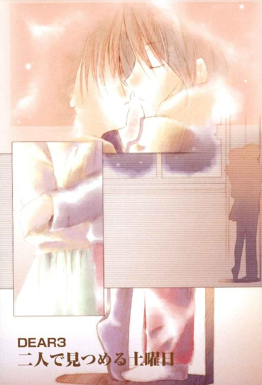
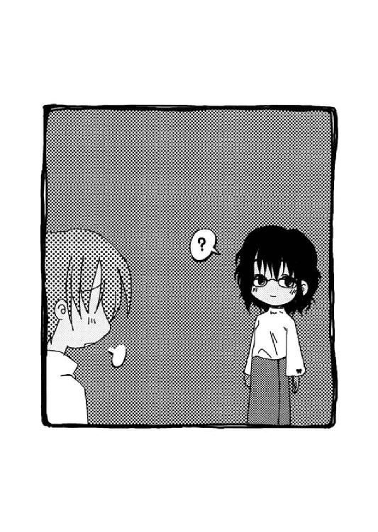

| DEAR3 二人で見つめる土曜日 (富士見ファンタジア文庫) | |
| 新井 輝 & 久瀬 たかし | |
| 富士見書房 (2012) | |

DEAR3
二人で見つめる土曜日
新井 輝

富士見ファンタジア文庫
本作品の全部または一部を無断で複製、転載、配信、送信したり、ホームページ上に転載することを禁止します。また、本作品の内容を無断で改変、改ざん等を行うことも禁止します。
本作品購入時にご承諾いただいた規約により、有償・無償にかかわらず本作品を第三者に譲渡することはできません。
本作品を示すサムネイルなどのイメージ画像は、再ダウンロード時に予告なく変更される場合があります。
本作品は縦書きでレイアウトされています。
また、ご覧になるリーディングシステムにより、表示の差が認められることがあります。
口絵・本文イラスト 久瀬たかし
目 次
人の気持ちになって考えろって、小さな頃から言われてきたけど──
やっとその意味がわかったような気がする。
青山正吾
プロローグ 俺は浜辺で〈天使〉から手紙をもらった
暖かさを感じた。
いや、暖かいどころじゃない。むしろ暑いって感じ。
──というか焼けているんじゃ？
そんな疑問と共に、青山正吾は目を覚まし、ガバッと体を起こした。
「......あれ？」
そこはまるで南の島の楽園といった風情だった。青く澄んだ海と空。そこに白く輝く雲が細く浮かんでいる。
「これってやっぱり......そうなんだよな」
ぼんやりとした意識の中、正吾は目の前の光景が明らかに昨日の夜と繫がっていないのを感じる。それは自分がまた例の異常事態に巻き込まれたということを意味していた。
例の異常事態というのは、〈天使〉トーカの言うところの運命の事故というヤツだ。
つまり、ここはトーカが自分にそのことを説明しようとするためのあの世界──精神と時の世界──というのに違いなかった。
というのは、正吾は信州の山奥でスキー旅行のために泊っているはずだったからだ。
記憶が確かなら、今日は十二月二十六日の土曜日。学校は冬休みで、季節は冬のはずだし、天気予報によれば大雪で、ひょっとするとスキーどころじゃないかもしれないって話だった。
なのに浜辺で照りつける陽射しの中で目を覚ますことになるなんて......絶対に普通であるはずがない。
「何、ぼーっとしてんの、ショーゴ！」
しかしどうも様子がおかしい。正吾はその声と、そして突然背中に走った痛みに、はっきりとそれを意識する。
振り返るとそこに真鶴千尋──正吾の数少ない友達の一人でいつも元気な少女──が目の前で笑っていた。
「......どうして、ここに千尋がいるんだ？」
正吾は信じられないという顔で千尋をじっと見つめた。これは正吾の今までの経験からすれば、ありえないことだった。
彼女は周りの光景に相応しく水着を着てそこに立っていた。ただ、その水着は普段の彼女のイメージとは違って、赤いビキニという少々大胆なスタイルのものではあったが。
「さあ？......って言うか、どさくさに紛れて人の水着姿を凝視するのはどうかと思うけど」
「いや、別にそういうつもりじゃなかったんだけど」
正吾は呟きながら、そこで初めて自分も水着姿だと気付いた。彼の場合、なんということもない青いトランクスタイプの水着ではあったが。
「そっか。なら許す」
千尋はそう言って笑った。口元で八重歯が覗く彼女特有のニヒヒという感じの笑顔。それで正吾は理由はわからないが、目の前の千尋が確かに本物の千尋なのだと感じる。
「ところで、ここってさ、トーカちゃんの世界なんだよね？」
先に目を覚ましていたのか、それとも性格の問題なのか、千尋は正吾よりはっきりと現状を把握しようとしているようだった。
「......たぶんね」
「ショーゴから聞いていて想像してた世界とは随分違う感じだけど」
「それは俺も同感」
「それってどゆこと？」
「いつもはこんな感じじゃないんだ。と言っても、いつも同じってわけじゃないけど」
正吾はそれでちょっと昔のことを思い出した。
初めてこの世界にやってきた時、この世界は何もない殺風景な世界だった。ペンキで色を塗ったような空に、白と黒のどこまでも続くタイルの地面。いかにも噓っぽい世界がここにはあったはずだ。
二度目に来た時は、時の止まった劇場だった。正吾は観客席にいて、そこで目を覚ました。
なのに、今回は南の楽園とでも言いたげな景色だ。波が寄せてはひいて、その音を繰り返している。風が吹く度に太陽の匂いを感じさせたりもする。
「今回のは妙にリアルな感じなんだよな」
「......なるほど。どんどん進化してるってことなのかな、この世界も」
千尋はそう言いながら、正吾とは違う方向に何かを探して視線を泳がせた。
「でも、いつもならそろそろトーカが来てくれる頃なんだけどな」
正吾は小さく不安げに呟くと、千尋が正吾の方を振り向く。
「実は私がトーカちゃんの変装だったりして」
「......想像しがたいな」
「あ、いきなり斬って捨てたな」
「千尋とトーカじゃ言動が全然違うし」
「違うし？」
「目の前の千尋だって、千尋っぽすぎる」
「......千尋っぽすぎるか。まあ本物だからしょうがないけど」
千尋はそれでニヒヒと呟くと、また視線を違う方へと向けて、何か無いかと探しながら視線は左右にさまよう。
「あれ、なんだろ？」
そんな千尋の視線が止まり、正吾に尋ねる声が響く。
「あれって？」
「ほらほら、あの辺、人がいない？」
千尋が指を差す方向を見ると、浜辺の向こうの方に黒く変色した樹か草で出来た大きめの家が見えた。その手前に確かに人がいるように感じられた。
「......とりあえず行ってみるか」
正吾は目を凝らしてても埒があかなそうだなと思い、その家の見える方向へと歩き出す。
「そうだね」
それで千尋もそれに続いた。
「しかし、ここにいると昨日のことが噓みたいだよな」
黒い家は意外に遠く、少しぐらい歩いても近づいてるようには感じられなかった。
この世界では距離感がおかしいのかもしれないし、遠くに見えるものっていうのはそういうものなのかもしれない。
ただ黙々と歩いているだけでは間が持たず、二人は自然に会話を始めていた。
「まあ、そうだね。でも、どっちかというとこの世界が噓みたいなもんでしょ？」
「それはそうだな。だって、今は本当は冬だし、俺たちはスキーするためにペンションに泊ってるはずなんだもんな」
「まあ、冬でもこういう景色って可能性はあるよ」
「え？ そうなの？」
「北半球と南半球じゃ季節が逆だから。ほら、見たことない？ オーストラリアのサンタさんはさ、クリスマスなのに暑いから、薄着なんだよ」
「そうなんだ。じゃあ、ここはオーストラリア？」
「いや、それはないと思うけど」
千尋は正吾の言葉に呆れたような笑いを浮かべ、また家の方へと指さした。
「あのさ、さっきから見てて気付いたんだけど」
「ん？」
「あの家の人たち、全然動いてない」
「それはそうかもな。前の時もそんな感じだったから」
「ふーん。そういうもんなんだ。なんか本当ゲームみたいな世界だよね」
千尋に言われて、正吾はそれでも最初に来た時と比べれば随分とリアルになっているのを改めて感じた。
「そう言えば、昨日、千尋言ってたよな？」
「なんのこと？」
「冬山のペンションで吹雪と来れば、殺人事件が起こるのがお約束だって」
「けっこうよくあるパターンでしょ、それって。私はショーゴほどゲームとか詳しくないけど」
「......そういう話じゃなくて、本当に予感が的中したってこと」
「あ、そういうことね」
千尋はそこで一旦、口を閉ざし、なんだか驚いたような表情を見せる。
「って、もしかして、この世界には今は、ショーゴと私しかいないってこと？」
「......まあ、そうなんじゃないかな。このままトーカが来てくれなかったら」
それを聞いて驚きに千尋の足が止まる。
「マジ？」
「マジ......だと思う」
「じゃ、私とショーゴはこのまま水着を着てずっと暮らすってこと？ あ、そうだ、この世界ってお腹空くのかな？」
「いや、どうだろ。そんなに長い時間、ここにいたことないし、そもそも時間とは切り離された世界なのかなとか思ってたから、そういうこと考えたことなかったな」
「ショーゴって、なんかいつもそんな感じだよね。自分のことでも危機感無いって言うか」
「どうせ、俺は鈍いですよ」
「ま、そこがショーゴの良いところでもあるんだけどさ」
千尋はそう言うと、歩いているのも面倒になったのか急に走り始める。
「おい、千尋！」
正吾は呼び止めようと声を上げるが、千尋は振り向くだけで立ち止まることなく走っていく。
「お腹空くと困るから、さっさとあそこまで行こうよ。何か手がかりがあればいいけど、そうじゃないと時間の無駄だからさ」
「......そりゃそうか」
それで正吾も千尋を追いかけるために駆け出した。
「この辺はいつも通りって感じかな？」
黒い家の周りにいた人間たちは、正吾たちの知っている顔ばかりだった。
「そうだと思うけど」
家の外には丸いテーブルがいくつも置かれ、正吾の知人たちはそこに座り何かを話しているようだった。しかし動きは止まっていて、何を話しているのかはわからない。
「貴博は一人でぼーっとしているみたいだね」
端の方のテーブルに座っている彼を見つけて、千尋が呟いた。
貴博というのは、赤井貴博。正吾と千尋の共通の友達だ。少なくとも正吾が乃木坂秋葉と付き合うことになるまでは、仲良し三人組という感じの関係だった一人だ。
「一美さんが、結局、来なかったからかな」
正吾はそれを口にしてから、そう言えばと思い出した。
貴博の彼女である市ケ谷一美は、今回のスキー旅行に参加していない。貴博が親戚の持っているペンションがあるからと皆を誘ったのに、一美は一緒に来るはずだった妹の双海が風邪をひいたので結局、看病のために欠席ということになってしまったのだった。
「この旅行って、貴博が一美さんを誘う口実だった気もするんだけどね」
「......そうだよな」
やる気無くぼーっとしたまま動かない貴博を見ながら正吾は、やっぱりそうだったんだろうなあと納得するしかなかった。
「この空席は私の席かな？」
正吾が貴博のことを考えている間に、千尋の興味は別のことに移っていたらしい。千尋は彼女の弟、一尋の椅子の隣りに空いた席に座りながら、正吾の方へと問いかけていた。
「まあ、そうなのかな？」
一尋の隣りに空席があるとすれば確かに千尋の席だと考えるのが普通だと思えた。
「貴博の後ろだしね」
千尋は座ったまま体をねじって、貴博の呆けた横顔を見ているようだった。
「船堀さんは、でもどういう関係なんだ？」
テーブルの周りにはそれぞれ三つずつ椅子が置かれていた。千尋と一尋が座っているテーブルの残りの一つには、正吾のクラスメイトの一人の船堀樹里子が座っていた。
「あ、樹里子は同じ学校だったからじゃないかな。貴博と私と樹里子は二中──時輪台第二中学だったから。あ、ちなみに一尋は二中の三年。来年は時輪台大学付属高校に入るつもりらしいよ」
「......って、ことは後輩になるってこと？」
「そうそう。いつもお前の顔なんか見たくないとか言ってるくせに、なんで同じ学校に入ろうとするかな、コイツは」
「まあ、大学まで持ち上がりだし、入っちゃえば後は楽だって気はするけど」
「家から近いとかそんなところだろうけどね、コイツのことだから」
千尋はそれで動くこともしゃべることもしない一尋をじっと見て、それから別のテーブルへと視線を向けた。
「そう言えば、秋葉がいないね？」
「そうなんだよな」
千尋に指摘されるまでもなく、正吾はそのことに気付いていた。
乃木坂秋葉は、一度目の事故がきっかけで付き合うことになった正吾の彼女だ。最初の時に事故に巻き込まれた一人だし、彼女の居場所を心配するのは正吾にとっては当然のことだ。しかしそれを表に出さなかったのは、二度目の時──文化祭の二日目の時──にも彼女の姿が見えなかったこと。そして何より慌てると千尋に馬鹿にされる気がしていたからだった。
「千尋の席がそこだとして、俺の席はどこなんだろうな？」
「それが分かれば、秋葉は隣りにいるはずだっての？」
「......そこまでは言わないけど」
「でも、話の流れからすると、そういうことじゃん」
千尋はそれで正吾が困った顔をするのを見て、またニヒヒと笑う。
「冗談だって。あんまり気にしないでよ」
「あ、ごめん」
なんだかわからず、正吾は謝ってしまう。からかわれた上に、なぜ自分が謝らないといけないのかはわからないが、なんとなくそんな気分だった。
「ま、じゃ、とりあえず他の人の確認もしますか」
千尋が二人の間の沈黙をやぶるように、元気にそう言うと立ち上がり、他のテーブルへと移動する。
「そうするか」
正吾もそれに続いて、今度はさらに隣りのテーブルの面々の顔を確かめた。
「あれ、ここも二人しか座ってないね？」
千尋も同じテーブルのところを見ていたらしい。正吾と同じ疑問を彼女が口にするのが聞こえた。
隣りのテーブルに座っていたのは、正吾の従姉妹の高島優子だった。浜辺で強い陽射しの下だというのに、いつものように黒い縁の太い眼鏡をかけている、そんなおっとりした感じの年上の女性だった。年は十九歳。受験を間近に控えた浪人生だ。
その隣りに座っているのは、正吾たちが泊っているペンションの管理人の赤塚拓弥だった。ほっそりした顔をした気弱そうな眼鏡の青年だ。貴博の従兄弟で今年で二十一歳。大学を中退して信州の山奥で植物観察をしながら暮らしているという、どこか浮世離れした人物だった。なんでも貴博の親戚筋でも一番本家筋の家の長男らしく、本当にお坊ちゃんという感じらしい。
優子と拓弥は、二人とも正吾が通っている時輪台大学付属高等学校で、在学中からの知りあいだという話だった。
「もしかしてさ、優姉って拓弥さんのこと好きなのかな？」
優姉というのは、優子のことだ。正吾は彼女のことを姉のように思っており、そのように呼んできたし、優子の方も正吾のことを小さい頃から「正ちゃん」と呼んでいる。
「どうなのかな。二人きりで座ってたりするのは、それっぽい気もするけど」
「だって優姉はさ、浪人生なんだぜ。いくら知りあいに頼まれたからって、こんな山奥まで料理をしに来るかな」
「来るんじゃないの？ 優子さんは料理で人に頼られるのすごい嬉しいみたいだったし。むしろ好きなのは拓弥さんの方かもよ」
「でも、優姉の方は単に料理作れて嬉しいだけ？」
「そんな感じ──って言うか、優子さんのことに詳しいのはショーゴの方でしょ？」
「そのはずなんだけど、イマイチ、優姉が何考えているか、俺はわからないんだよね」
「身近すぎて逆に見えないっていう感じ？」
「どうかな......それ以前って気がするけど」
「なるほど。つまりショーゴが鈍いってことね」
「......それもそうだけど、そうじゃなくて」
「優子さんが天然ボケだって言うんでしょ？ わかってるって」
千尋はそう言うと、正吾の背中をバンバンと叩く。
「痛いっての！」
「ああ、なんかそんな気がした。正吾の背中がすっごい真っ赤になってる」
「......あのなあ」
正吾はヒリヒリする背中を感じながら、千尋の方を睨む。
「じゃあ、仕返しに私の背中叩く？」
千尋はそう言って正吾に背中を向ける。しかし正吾はそんな気分にはなれない。
「別にそういうことをしたいわけじゃないって」
「ま、そうだと思ってて言ったんだけどね」
千尋は振り返るとニヒヒと笑って、また辺りを見回す。
「って、ことは北安曇さんはどこにいるんだろう？」
千尋はそう言いながら、もう一人の人物の居場所を探し始める。北安曇さんというのは拓弥の高校時代からの友達で、フルネームは北安曇佑介。漫画家志望の大学生で、なんでも取材のためにやってきたという話を昨日の晩に言っていた。
彼が席に着いているとすれば、優子と拓弥のいるこの席が適当な気がするのだがここにはいない。ということは、別のところにいるのか、それとも全然関係ないので、ここにはいないというだけなのか。
「あれ──じゃないかな？」
正吾が指を差した先、家の入口の階段のところで、佑介は遠くを眺めているみたいだった。人当たりは悪くないが、どこかやはり独特な人だったこともあり、単独行動をしているのも、別にそんなに不思議ではない気もした。いつもタオルを持っているという独特なスタイルは、水着姿であっても変わらないらしく、彼の首には温泉旅館から、もらってきたという白いタオルがかかっていた。
「この世界でも取材してるってことなのかな？」
「そんなところだろうね......あっ！」
千尋はそう言いながら、急にまた驚きの表情を浮かべる。
「どうしたんだよ？」
「カメラが無い！」
「え？」
「カメラだってば。せっかくだから写真撮っておこうかなと思って」
「自分の水着姿を？」
「違うって。この景色をだよ。というか、なんかその発言オヤジ臭いので、禁止」
「......う」
正吾は言葉につまるが、しかしふと冷静な気持ちになる。
「いや、カメラが仮にあったとしても、やっぱり意味ないと思うぞ」
「なんで？」
「だって持ち帰れないだろ？ 撮ったフィルムを」
「ん、それはそうか。じゃあ、しょうがない」
千尋はそれでもどこか落ち着かない感じで視線を泳がせる。
新聞部の部員として、何かと写真を撮りたがる彼女にとって、せっかくの景色を写真に撮れないことはけっこうなストレスということなのかもしれない。昨晩、ペンションに着く前も着いた後も嬉しそうにあちこちで千尋が写真を撮っていたことも思い出した。
「こっちもやっぱり二人だね」
千尋はしかし正吾が考えている間に、次のテーブルの二人へと向かっていた。入口の手前のところにあるそのテーブルに座っているのは、正吾のクラスメイトたちだった。
短い髪くらいしかイマイチ特徴のない感じの篠崎美貴と、それとは逆に彼女と同い年とは思えない背の低い少女が座っている。彼女の名前は住吉由衣というらしいが、正吾は彼女が旅行に参加することになったのを聞くまで、その名前を聞いた覚えがなかった。文化祭の準備の時も、あんまり話した覚えがないのだが、まあ正吾にとってはクラスの女子の大半はそんな感じだし、きっと向こうもそんな感じなんだろうと思っていた。
美貴と由衣は何かを話しているようだが、他の者たちとは違って、かなり真剣な顔つきをしていた。浜辺で水着を着て真顔で話しあっているというのは、どうにも違和感がある。
「なんとなく、一尋のことを指さしているように見えない？」
千尋が由衣の指先を追ってそんなことを言いだした。言われて正吾は由衣の後ろに回って、千尋の言葉を確認する。
「確かにそんな感じがするな」
「一尋が由衣になんかしたのかな？」
「......どうなんだろう？」
さっぱりわからないというのが、正吾の正直な感想だった。何かしたとしても、覚えてない「今日」の出来事だろうし、つまりはこれから繰り返す時に起こる出来事なのだから。
「ところでさ、篠崎さんと住吉さんは仲いいのかな？」
美貴とは比較的話すことも多かったせいか、なんとなく正吾にはその辺が気になっていた。美貴と由衣が仲がいいなら、もっと彼女と話す機会があっても良かったような気がする。
それは千尋にとってもそうだったらしい。
「さあ？ 私、美貴の人間関係はあんまり知らないから」
「文化祭の時は、篠崎さんが俺のことを好きだとか言って騙そうとしたくせに随分といい加減な発言だな......」
「知らないから適当に言えたんじゃん」
千尋は当たり前のようにそう答えると、正吾の肩をポンポンと二回叩いた。
「......そういうことだったのか」
「それにしても、由衣って本当、胸ちっさいよね」
「どう繫がっているんだ、その会話は？」
「まあ、ちょっと話題を逸らしただけなんだけど」
正吾は由衣の方を見る。言われるまでもなく、背が低くて、小学生のままのような彼女の胸囲は、やはり小学生並だった。
普段はそんなことを改めて意識することもないが、この浜辺で水着姿ということや、千尋がわざわざ指摘したことで、気になってしまう。
「そこ、あんまりジッと見ないように！」
いきなり千尋の声が聞こえて、正吾は我に返る。
「......そんなにジッと見てたかな？」
「まあ、そんなには見てなかったけどさ。どうせ見るなら、もっと見どころのある人を見た方がいいんじゃないの。例えば、優子さんとか。あ、ショーゴは優子さんのは見あきてるのか」
「......なんだ、それ」
「でも、秋葉も大きい方じゃないし、実はショーゴは小さいのが好みなのか。なるほどね」
「勝手に納得しないでくれよ」
「じゃあ、なに、やっぱり大きい方が好みなの？」
「......どうかな。そんなこと真剣に考えたこと無かったし」
「うーん。それは健全な男子として問題があると思うぞ」
千尋はそう言うと、その場を離れ、今度は家の中の捜索に入ることにしたようだった。階段を上り佑介の後ろを過ぎて、黒く変色した樹の家の中へと入っていく。
「......問題があるのかな？」
残された形になった正吾は一言呟いてから我に返り、慌てて千尋を追いかけた。
「なるほど、ここにいたんだ」
家の中は意外に明るかった。樹で組まれた壁には隙間があり、陽射しが漏れている。天井は草で編まれているが逆に隙間が無く光もあまり入ってこないようだった。
そんな家の中にいたのは三人だった。さっきから正吾が行方を気にしていた秋葉と、そして市ケ谷一美と双海の姉妹だ。彼女たちは水着ではなく、普通に私服を着ていた。
双海は床に寝かされており、一美はその看病をしているところのようだ。
秋葉はと言えば、そんな二人とは無関係なのか、窓を背にして立っている。別に部屋の中を見回している風でもなく、ただそこに立っているというだけという感じだった。
何をしているところなんだろう？──正吾はそんな秋葉を見ながら、ちょっと考えてしまった。少なくとも、自分がその近くにいて一緒に話しているという雰囲気ではなかった。
「秋葉は水着じゃなくて残念だったね」
正吾の思考を遮るように、千尋のそんな声が響いた。
「......別にそんなことを気にしているんじゃないって」
「自分はどこにいるのかって考えてたんでしょ？」
「まあ、近いけど、ちょっとハズレ」
「あれ？ じゃあ秋葉が何をしているところなのか考えてたってこと？」
「そうだよ」
「なるほど」
千尋は呟くと、秋葉の方に歩いていって、彼女をじっと眺めた。
「まあ、あんまり嬉しそうって感じじゃあないね」
「それくらいはわかるけど」
「まあ、これからショーゴが死ぬんだから、あんまり喜び一杯でも嫌な感じだけど」
千尋はまた笑うと、もう考えてもしょうがなさそうだなと思ったらしい。違う話題に切り替えたようだった。
「しかし、本当にトーカちゃんが出てこないね」
「......いつもならとっくに来ててもいい時間なんだけどな」
正吾はとは言いながら、どこかにいるんじゃないかと辺りを見渡した。
部屋の中には外にあるのと同じ、丸テーブルが置かれていた。そこにはやはり三人分の椅子が置かれているが、誰も座ってはいなかった。
「なんか置いてあるのかな？」
正吾は誰も座っていないそのテーブルの上に、紙切れと呼び鈴が置かれているのに気付いた。
「どうしたの？」
「いや、なんかあの上に置いてあるみたいだから」
正吾は近づいて紙切れに何か文字が書かれていることに気付く。よく見ると、それはどうやらトーカからの置き手紙であるようだった。
「手紙？」
「みたいだな。トーカになんかあったのかな？」
正吾は自分の疑問の答えを求めて、手紙を手に取るとそれに目を走らせる。
そこにはトーカのものと思われる小さな女の子のかわいらしい字で正吾へのメッセージが確かに書かれている。しかし少し慌てていたのか、急いで書かれている感じだった。
「ＤＥＡＲ 正吾くん──か」
なんとなくそんな単語にちょっとホッとした気持ちになって一息をつくが、千尋はそんな正吾を急かしてくる。
「そんなところどうでもいいから、さっさと先を読む」
「わかったよ──もう気付いていると思うけど事故があって、今回も正吾くんはそれに巻き込まれることになります。というわけなので、三回チャンスをあげるので、また事故を回避してください。ちゃんと会って話したいんだけど、ちょっとしたアクシデントがあって私も含め、他の人たちもそこにはいけない状況になっています。なので勝手な話なんだけど、今回は正吾くんだけでなんとかしてください」
正吾がそこまで読んだところで千尋が割って入る。
「私は計算に入ってないのかな？ 正直言って、ショーゴよりは役に立つと思うんだけどな」
「......その発言はそれはそれで問題あるぞ」
「ま、とりあえず先を読んで」
「お前が止めたんだろ？」
「そうとも言うけど」
「ま、いっか。えっと──ルールはいつもと同じはずです。正吾くんには今更、その辺を確認するまでもないと思うけど、それを頼りに事故を回避してください。後、元の世界に戻る時は、その呼び鈴みたいなのを鳴らしてください。それでちゃんと戻れるはずです──だって」
「なるほど、これで戻れるんだ」
千尋は改めて机の上の鈴に目をやる。
「じゃあ、ここで飢え死にするという心配は無くなったと」
「だからって、一泳ぎしてこようとかいうんじゃないよな？」
「......そんなことしないってば」
千尋は笑っているような驚いているような微妙な表情を浮かべて、そう答える。正吾はその表情の意味がわからず、考えようとしたが、千尋がそこに突然、話題を振ってきた。
「それはそうと私、もう犯人がわかったんだけど」
「え？」
正吾はその言葉に思わず言葉を失い、千尋の顔を見る。しかし千尋は堂々と、自信満々の笑みを浮かべて正吾の方を見返していた。
「だって、すごい簡単な話だよ？」
「いや、俺は全然わからないけど......」
「ふふふ。過去の経験を少しも活していないようだね、青山正吾くん」
「......なぜ、そんな口調になるんだ？」
「まあ、名探偵・真鶴千尋の素晴らしい推理を聞いてくれたまえ」
「それはいいけど......」
千尋はそれでうなずくと、正吾にルールの確認から始める。
「まず、この世界に召喚されるのは、ショーゴとその犯人しかいない。そしてショーゴはトーカちゃんと、そして犯人はもう一人の〈天使〉の──誰だっけ？」
「エイミさん」
「そうそう、エイミさんね。その人のところへと連れていかれる。でも、今回はその辺をいつも通りきっちりやるわけにはいかないアクシデントが起こってしまった」
「みたいだな。でも、それがなんだって言うんだよ？」
「まだ、わからないかな。トーカちゃんもエイミさんもこの世界にいないなら、この世界にいるのはショーゴと犯人しかいない。つまり──」
千尋はビシッと指を前につきだして確信とともに、その答えを口にする。
「私が犯人としか考えられない。それが自然な結論」
正吾はあまりの解答に啞然とするが、冷静に考えてみると確かにそんな気がしてきた。
「そうなのか？ いや、でもそうか......そうかもしれないな」
今までと同じルールだと言うなら、確かにそういうことになる。
「というわけで、今回は今までよりはずっと楽に片づくんじゃないかな。とりあえず犯人はわかってるんだから」
「そうだといいんだけど」
「だって私がなんか変なことしたせいで、おかしなことになるんでしょ？ それがわかった時点で、それをしないようにすればいいだけじゃん」
千尋はそう言うと呼び鈴を持ち上げて、それを大きく鳴らした。
「じゃ、さっさと問題解決して、のんびりスキーをしようよ」
高い音が響き、それを合図に周りの景色が崩れ始める。バラバラになった景色の断片が舞い上がり、その中で二人はバランス感覚を失い、床が無くなると共に落下を始める。
「うわっ！」
正吾にとっては慣れた光景だったが、千尋は少し驚いたようだった。それを伝えるような声が聞こえた後、二人はなにも見えない闇の中へとどこまでも落ちていく。
正吾はそれを薄れ行く意識の中で感じながら、不意に一つの気になる文面を思い出した。
──勝手な話なんだけど、今回は正吾くんだけでなんとかしてください
その文面のどこが気になったのか？ それを考えようとした時、まるでそれを邪魔するように彼の意識はこの世界から消えようとしていた。
そして閃いたはずの答えと一緒に、彼はこの世界から、いつもの自分がいる世界、忘れてしまった「今日」の自分の元へと戻った──はずだった。
第一章 自分とぶつかる土曜日
朝の寝起きの悪い正吾がぼんやりと広がる視界の向こうに見たのは、隣りのベッドで寝ている少女の顔。それが誰の顔なのか理解して正吾の目は一気に覚めた。
寝ているから眼鏡はかけていないが、よく知った顔だ。わからないはずがない。
「な、ななな......」
思わず意味不明な言葉が続く。鈍い、鈍いと人に言われる正吾にとって、これほど驚くのは珍しい経験だった。
「なんなんで、秋葉が隣りに？」
やっと言葉になった。だが、その言葉に正吾は改めて驚く。いや、言葉ではない。言葉を発した自分の声にだ。
明らかにそれは自分の知っている、自分の声ではなかった。聞いたこともない、いつもより高い声。まるで、少女のような声が頭の中に響く。
──ど、どういうことだ？
正吾は唾を飲み込み、声に出さずに落ち着こうとして息を大きく吸い込む。それで、少しは落ち着いているらしいと気付くが、それでも胸は激しい鼓動を打っていた。
──胸？
正吾はその言葉に自分に起こった異常にまだ少しも気付いていないことに気付く。
何だか胸が重かった。その理由がわからず、正吾の頭はまた混乱していく。
「えっと、だから、その......」
目の前で寝ている秋葉、自分の声と、そして体の変化。それらに一つの根本的な原因があるのはなんとなくわかったが、彼の頭はそれを理解するのを拒否しているようだった。
「......どうしたんですか？」
正吾の上げた声のせいだろうか。寝ていた秋葉がぼんやりと自分の方を見て話しかけてきた。上体を起こしたせいで、掛け布団がめくれ、白い清潔そうなフカフカした彼女のパジャマが目に入る。
だが、正吾はそれをじっと見ている余裕はとてもなかった。
「何かあったんですか──」
秋葉が不思議そうな顔をして話しかけてくる。しかしその後、秋葉が呼んだのは正吾の名前ではなかった。
「真鶴さん？」
「真鶴さんって？」
正吾は反射的にそう尋ね返しながら、不思議とそのことに違和感は覚えなかった。いや、むしろその言葉で頭の中で混乱していた思考が一つになるのがわかった。
「えっと......」
啞然としている正吾の前で、秋葉は心配そうな表情を浮かべる。何を言っていいのかわからず混乱している時の顔に違いなかった。
そして正吾は秋葉の顔を見ているうちに現状を理解する。
──そうだ、おかしいのは、俺の方なんだ
正吾はそして自分に起こった出来事を理解し、それを確かめるように自分のもののはずの手の平を見つめた。
「......やっぱり、そういうことなのか」
自分の手が、自分のものでないことに気付く。そして、それが本来は誰の手なのかも。
──これは千尋の手だ
それから正吾はそれが手だけではないことを理解するしかなかった。声がおかしいのも、胸が重いのも、全部それが原因なのだ。
どうしてそうなったのかはわからない。だが、結果ははっきりとしていた。
──俺は千尋になってしまったんだ
隣りに秋葉が寝ているのも、そうなのだ。秋葉と千尋は同じ部屋に泊っていた。自分は本当は貴博や一尋と一緒に寝ているはずなのだから。
「で、これは夢の続きじゃあないんだよな......」
拒否し続けた現実を受けとめた途端、自然にその言葉が出てくる。
「真鶴さん、怖い夢でも見たんですか？」
秋葉がベッドから出て、自分の方へ近づいて来ていた。それに気付いて、正吾は慌てて自分も飛び起きて、ベッドから降りる。
「そう。夢なんだ。怖い夢を見たんだよ」
「......そんなに怖い夢だったんですか？」
「夢自体は、そんなに怖くはなかった気もするけど」
「じゃあ、なんなんですか？」
秋葉は本当に不思議そうな顔をしている。以前なら、そんな彼女の表情もわからなかったかもしれないが、今の正吾には、はっきりとそれがわかるような気がした。
「一度、起きたと思ってたって言うか......」
「そういう夢って確かにありますよね」
それで秋葉は少しだけホッとしたという感じの表情を見せる。
「起きて朝の支度を整えていると、そこで目を覚ましたりして、あれ、さっきまでのなんだったんだろう？ って──そんな夢ですか？」
「そんな感じかな」
正吾はなんとか落ち着きを取り戻そうとしながら、少しずつ秋葉と距離を取っていた。どうにも千尋の姿で秋葉と接するのは抵抗があった。口調も何か微妙に変な気もする。
「......って、待てよ」
少し落ち着いたおかげだろうか、自分の異常の延長で他にも事件が起こっている可能性を正吾は思いつく。
「どうしたんです？」
そんな表情の変化にまた秋葉は心配そうに尋ねる。
「いや、千尋......じゃなくて、正吾はどうしてるかなって」
「......え？」
「ちょっと見てくるから」
そして正吾は秋葉が驚いている間に、部屋を飛び出した。
それは自分の体がどうなっているのかを確かめるためだった。自分の意識がここにあるなら、体の方はどうなっているのか？──その答えを彼はいち早く知りたかったのだ。
このペンションの客室は基本的に全部、二階にあった。一階は、談話室やら食堂なんかがあって寝泊りしているのは、ここの管理人である赤塚拓弥だけ。
客室は全部で六つあり、それぞれに四人ずつ泊れるようになっている。正吾の部屋は階段から二階に上って右に曲がって一番奥の左側にあった。千尋たちの部屋は三つ隣り、階段を上ってすぐの部屋だ。
ちなみに二つの部屋の間にあるのは樹里子たち女子三人が泊っている部屋でその隣りは空室になっていた。そこは市ケ谷姉妹が泊る予定の部屋だったが、二人はこの旅行に参加しなかったので、使われていなかった。
各部屋には間違えのないように、ここの管理人の赤塚拓弥が泊り客の名前を書いた紙を貼ってくれていて、今日もそのまま残っていた。
「青山正吾、赤井貴博、真鶴一尋......と」
昨日、自分が泊る時に確認した紙を今更のように読み直すと、正吾はドアに手を伸ばす。
「わっ!?」
扉を開けようとしたら、自然に向こうから開いた。摑みかけたドアノブに逃げられて、正吾は思わず転びそうになる。
「あれ千尋、どうしたんだ？」
ドアを開けたのは貴博だったらしい。扉の向こうから大きなボストンバッグを持って、すでに着替え終えたらしい貴博が現れた。私服姿の彼は昨日も見ていたはずだが、どこか違和感を覚える。
──そうか、千尋の方が背が低いからか
妙に貴博が背が高いように感じたのだと正吾は理解して、その原因がやはり自分の方にあることに気付いた。
「千......じゃなくて、正吾はどうしてる？」
「正吾？」
「もう起きてるかな？」
「起きてるぜ。今、シャワー浴びてるけどな。話してたら、いきなりシャワー浴びるとか言いだしてさ。正吾が朝、シャワー浴びるなんて、ちょっと意外だよな」
「......そうだね」
それから貴博は立ち話もなんだかなと思ったのか、そのままドアを大きく開いて正吾を招き入れる。
扉越しに聞こえてくる水の音から、確かに貴博の言う通り、自分の体は各部屋に設置されたユニットバスでシャワーを浴びているらしいことがわかる。
──とりあえず、魂が抜けて死んだと思われて騒がれているってわけじゃないわけか
正吾はそれでホッとするが、そうなるとどういう状況なのかということがわかってしまう。
自分が千尋の体を動かしているように、千尋が自分の体を動かしているのだ。
「何考えているんだ、千尋は？」
思わず小さく呟いた声に、貴博の声が被さる。
「......これはまあ、後でいいか」
それから貴博は四つ並んでいる一番奥の自分のベッドのところに戻っていく。持っていたバッグを置こうと思ったらしい。
「何しに来たんだよ、チヒロ？」
入ってきた正吾に、少し苛立ち交じりの声が話しかけてきた。その声の主は千尋の弟の一尋だった。彼もすでに身支度を整えており着替えも済んでいるようだ。一番手前のベッドの上に座って、こっちを睨んでいた。
「何しにって、正吾に会いに来たんだけど」
「パジャマ姿で？」
「......そうなるかな」
改めて自分の姿を見ると、確かに妙なことをしているという気がしてきた。
千尋の着ているパジャマは白と青のストライプの上着の丈の長いものだった。あんまり色気のあるデザインとは言いがたいが、胸のボタンが上の三つまで開いている。寝ているうちに外れたのかもしれないが、少し不用心な格好と言わざるを得なかった。
一尋がなんだかわからないが自分を見ると睨みつけてくるのは、いつものことのような気はするが、今度はハッキリと自分に原因があるらしいとわかる。
「ちょっとサービスよすぎだわな、千尋にしては」
貴博がそんなやりとりに笑いながら、口を挟んできた。
「チヒロが青山にどんな用があるかは知らないけど、とりあえず着替えて来いよ。どうせアイツはシャワー浴びているし。このまま出てくるまで待っているわけにもいかないだろ？」
一尋はムッとしたままそんなことを言うと、千尋を見ないでドアの方を指さす。
「......そうした方がいい気がしてきた」
一尋に反論する気力もなく、本来は自分の部屋のはずのその場所から正吾は撤退するしかないようだった。
「ちょっと待ってて下さい、今、着替えていますから」
自分がいるべきらしい千尋の部屋に戻ってきた正吾は、中からそんな声を聞かされ、部屋の前に立ちどまらされてしまった。
──どうも間が悪いな
正吾はそう思いながら、自分のパジャマのボタンをかけることにする。すぐに部屋に戻れると思ったから改めてかけなかったのを思い出したからだ。
「あれ千尋、どうしたの？」
そんなこんなで待っている間に、隣りの部屋から現れたのは篠崎美貴だった。いつも快活な彼女らしく、すでにぱっちりと目が覚めていて身支度も済んでいるらしい。元気な声で、そこにいる千尋の姿をした正吾に話しかけてくる。
「ちょっとね」
なんと答えてよいかわからず、濁すように正吾はそう答えるのが精いっぱいだった。
「秋葉とケンカでもしたの？」
「そういうわけじゃないけど」
「ちょっと部屋を出ている間に着替え始めたみたいで」
「......なるほど」
美貴は小さく笑う。
「ま、じゃ、頑張って！」
それから、そんなことを言って彼女は一階へと降りていく。
「......何をどう頑張れって言うんだろ？」
女の子同士の合言葉か何かだろうかとも思いながら、正吾が小さく呟いたところで、ドアが開く音が聞こえて、それに秋葉の声が続いた。
「着替え済みましたから」
「あ、はい」
正吾はそれで部屋の中に入ろうとするが、そんな彼に秋葉が尋ねる。
「私、先に食堂に行っててもいいですか？」
「あ、いいけど」
「でも、正吾はシャワー浴びているみたいだけど」
「そうなんですか？」
秋葉はちょっと驚いた顔をして、それから正吾の方をじっと見た。
「なんの話をしに行ったんですか？」
「え？」
「いきなり正吾クンのところに行くなんて、何かあったのかなって思っただけですけど」
「えっと......なんというか......その......」
本当のことを言うべきだろうか？──正吾はそう思いはしたが、なんとなく言いづらい気持ちの方が勝っているのを感じた。
こんな状況とは言え、やり直しの一度目だし、あまり影響を与えるようなことは言いたくはなかった。それに千尋に見えるけど、自分が実は正吾だということには抵抗があった。
「怖い夢って、正吾クンに関係あるんですか？」
「......そうなんだ。正吾が死ぬ夢を見たの。凄くリアルな夢だったから」
「本当に死んだと思って確認に行ったってことですか？」
「そうそう」
噓をつくのには抵抗があったが、完全に噓というわけでもない気もした。実際、どういうことでそうなるかはわからないが、おそらく今日、正吾が死ぬのは事実なのだから。
「......行く前に私に言わなかったのは、なんでですか？」
「いらない心配かけたくなかったし......それにただの夢だから......」
そんな苦し紛れの言い訳を正吾は続けるが、それでも秋葉は安心した様子だった。
「そうですよね」
小さく呟くと、少し笑って部屋を出ていくそぶりを見せる。
「私、食堂に先に行ってますから、もし正吾クンが来るようなら伝えておいてください」
「......あ、はい」
正吾はそれで笑顔を浮かべ、ドアを閉める。
「ふぅ」
ホッとしたのか全身から力が抜けて、ため息が出るのがわかった。
「なんで朝っぱらから、こんなに疲れないといけないんだ......？」
それから正吾は、あの世界で千尋が言っていた言葉を思い出した。
──というわけで、今回は今までよりはずっと楽に片づくんじゃないかな
もちろん、正吾はそれには大いに反論したい気持ちだった。
「......あ、今、食堂行くところ？」
悪戦苦闘しながらも、なんとか着替えを終えて部屋を出ると、ちょうど貴博たちも食堂へ向かうところだったらしい。
「乃木坂は？」
貴博は正吾の姿を見かけてそんなことを話しかけてきた。しかし正吾の興味はそっちではなく、彼の後ろの自分の姿をした何者かの方だった。
その視線に気づいたのか、目の前の自分のはずの顔が笑うのが見える。
「千尋、秋葉は？」
そして何事も無かったかのように、『自分』がそう尋ねてきた。
「......先に食堂に行ってるって」
「なら、俺たちも食堂に行くかな。ま、最初からそのつもりだったけどね」
貴博は正吾がその不思議なやり取りに気を取られていることにも気付かず、彼の前を過ぎると階段を下りていこうとする。
「千尋も一緒に行くよな？」
それを見ているうちに、今度は自分にそんな風に誘われる。実に自然に話しているが、それがやはり自分ではないことは正吾にはハッキリとわかった。
「......ちょっと正吾、話があるんだけど」
それで正吾はそんな風に言って、目の前の自分の足を止める。その言葉に彼は立ち止まり、一尋もつっかかるように立ち止まる。
「急に止まるなよ」
機嫌悪そうに一尋は呟くと、それでもそのまま貴博に続いて階段を下りていく。正吾はそれを確認して、自分のはずの体の右腕をつかんで、部屋に引っ張り入れた。
「そう言えば、さっきも部屋に来たんだっけ？」
なおも自分のふりをしているらしい、その声に正吾はさすがに呆れてしまう。
「もう演技はいいんだよ、千尋」
「......あ、やっぱりバレてた？」
「当たり前だ。いくら俺が鈍いって言ったって、さすがに気付くって」
「なるほど」
千尋はそう言って目の前で腕を組んで話を始める。
「しかし、一体何があったんだろうね。さすがにこんなことになるとは思ってなかったから驚かされたけど」
そうは言いながら千尋は余裕があるのか、ニッと笑って見せた。
「......俺は驚かされまくりだ」
「まあ、でもとりあえず今回はこれで行くしかないでしょ」
「今回はって......」
「あんまり根拠、はないけど、三回やり直す間になんとかしてくれるんじゃないかな。さすがにこの先、このままってことないでしょ？」
「それはそうだろうけど」
正吾はなんだか千尋の態度に自分だけがおろおろしているのがみっともないような気持ちになった。まあ、確かに元に戻す方法なんてわかるはずもないし、このままやるしかないのは明らかなんだが......。
それでじっと見つめた目の前の自分の顔に、正吾はちょっと気になるところを見つける。
「......その目、どうしたんだ？」
目が充血して真っ赤になっているようだった。それを指摘されて、千尋は驚いたような顔をして、それから口を開いた。
「そんなに目立つ？」
「いや、なんとなく気になっただけだけど......大丈夫なのか？」
「単に頭洗った時にシャンプーが目に染みただけなんだけどね。ほら、慣れない体で、使ったこともないシャンプーだったから。すぐに元に戻ると思うけど、ショーゴは目が弱い方？」
言われてみれば千尋がシャワーを浴びていたのだから、それは自然な感じがした。しかし正吾はまだ何か引っ掛かっているような不安を覚えてしまう。
「あ、これ提案なんだけど」
だが不意に千尋の提案が響いて、正吾のそんな不安はどこかに吹き飛んでしまった。
「......提案？」
「やり直し中ってことは皆には秘密にしておこうよ」
「それ自体は俺も賛成だけど」
「ショーゴだって、私の格好して秋葉の着替えを見たりしたって知られたくないでしょ」
「......見てないよ」
「あ、そうなんだ。あんまり周りに影響を与えるわけにはいかないんだろうし、お互い、ちゃんと演技をするってことで」
「わかった」
正吾は千尋がなんか自分の立場でいるのを楽しんでいるような気がして、ちょっと気になってしまった。自分が秋葉には知られたくないのはそうだが、千尋にも同じくらい隠しておきたいことでもあるのだろうか？──なんてことまで気にしてしまう。
「おい、チヒロ何やってんだよ？」
ドアをノックする音に続いて、自分を呼んでいるらしい声が聞こえた。もっとも呼ばれているのは意識の方ではなく、体の方だが。声の調子からして一尋らしいのがわかる。
「どうも一尋が気にしているみたいだから、怪しまれないうちに食堂に行った方がいいんじゃないかな」
千尋はそう言うと、そのまま立ち上がり、部屋を出て行こうとする。
「......そうするか」
正吾は気の抜けた感じで、そう呟く。それに千尋がこんなことを言った。
「そうするのがいいかな──って感じがいいかな」
「そうするのがいいかな......？」
「私ならそう言うかな、と思ったってこと」
「......なるほど」
正吾はそう言ってドアを開けて出ていこうとする自分の後ろ姿を見つめる。その向こうに一尋がいるのが見えて、彼は千尋が行ってしまっても、入口の前に立っていた。
「どういうつもりなんだよ、チヒロ」
正吾も部屋を出ていこうと思ったところで、一尋が話しかけてきた。
「......どういうつもりって？」
「大丈夫なのかよ、あんなことして」
「大丈夫......じゃないかな？」
「まあ、チヒロが大丈夫だって言うなら、別にいいけど」
一尋はそう言いながら、普段の怒っているような表情から急に悲しそうな顔になった。
「俺は反対だったんだ。こんな旅行に参加したって、楽しいことなんてないって」
「......なんで？」
さっぱり話が見えず、正吾は尋ねるが一尋は当惑の表情を浮かべるだけだった。
「わざわざ言わないと、わからないのかよ」
「......なんのことだか、さっぱりわからないけど」
正吾は本当にわからず考えるために腕を組み直す。今度は一尋の顔に驚きの表情が浮かぶのが見えた。それがしばらくして収まると、彼の顔が赤くなるのが見えた。しかしそれは怒りの色というわけではなさそうだった。
「......あのさ」
「なに？」
「もしかしてブラしてないのか？」
「え？」
「......ブラジャーだよ」
そう言いながら一尋はさらに顔を真っ赤にする。それでさすがに正吾も彼の表情の意味を理解する。
「......わかるかな？」
「わかる......というか、なんでしないんだよ。ここは家じゃないんだぞ」
「いや、その......」
さすがに「付け方がわからなかったから諦めた」と正直に答えるわけにもいかない。今更、千尋がそんなこと言いだすはずはないのだから。
「まさか、付け方がわからなかったとか言うんじゃないよな？」
「......じゃあ、そういうことで」
「ふざけんな！」
一尋は自分で言い始めたのに、烈火のごとく怒り始めたようだった。大きな声で叫ぶと、そのままじっと怒りを堪えるために強く拳を握りながら、続ける。
「なんで、そうなんだよ、チヒロは......」
「いや、冗談だって」
「冗談？ そりゃ、冗談だろうよ。チヒロにとっては軽い冗談だろうよ。でもな、俺にとってはそういうのは辛くてしょうがないんだ」
一尋はそう言いながら、今度は泣きそうになっているようだった。体の震え方や、声の調子がガラッと変わるのが正吾にはわかった。
「なんでわかろうとしないんだよ、チヒロは」
「......何を？」
本当になんのことだか、正吾には全く心当たりがない。だがそんな言葉にすら一尋は過剰に反応したようだった。
「チヒロがどれだけ望んだって、事実は変わらないんだぞ」
「......だから、なんの話？」
「チヒロは女だってことだよ！」
一尋はじっと千尋の姿をした正吾を睨みながら、そう叫んだ。
正吾はその言葉にまったく虚を突かれて返す言葉を失う。
「............」
その間に一尋の顔には今度は後悔の色が浮かんだ。
「......ごめん」
一尋は正吾の反応に、なぜかはわからないが、酷く相手を傷つけてしまったと思ったらしい。その意味がわからず正吾が何も言えない間に、一尋はさらに表情を暗くして呟く。
「そんなつもりじゃなかったんだ。ただ、なんか辛くて......イライラしてただけだから」
「辛いって......」
やっと言葉を口にするが、一尋はさらにそれにショックを受けたようだった。正吾の言葉に応えることなく、彼はその場を離れようとする。
「......ごめん。別にチヒロを傷つける気はなかったんだ。それだけはわかってくれ」
一尋はそう言うと、そのまま走り去ろうとする。正吾はそれを止めようと手を伸ばすが、彼には届かなかった。
「待ってくれよ！」
そんな正吾の呼びかける声も届かないらしい。一尋は自分の部屋に駆け込むと、ガチャリと音を立てて鍵をかけてしまったようだった。
「......マジで訳がわからないぞ、この展開」
思わず素の自分で悪態をついてしまうくらい正吾には、一尋がそこまでする理由がわからなかった。
それでも彼は扉の前まで行って、一度だけドアを叩く。しかし返事はない。中で一尋が何をしているのかも、何を思っているのかも正吾にはわからなかった。
だから正吾はしばらく待って千尋ならどうするだろうと思いながら、一尋に話しかけた。
「......えっと、先に食堂に行ってるから」
しかしやはり返事はなく、正吾は一人その場を後にするしかなかった。
階段を下りるとそこは談話室になっており、そこから玄関と管理人室へ続く廊下、そして食堂へと続いていた。
食堂では泊り客のほとんどが席についていて、すでに朝食を食べ始めていた。自分に気づいたらしい貴博が手を振るのが見えて、正吾は力なく手を振り返す。
食堂は丸テーブルがならんでいて、それぞれが五人掛けだった。正吾は貴博の隣りに空いている席を見つけ、そこに座る。
「あれ、一尋は？」
そう言えばという感じで貴博が尋ねてきた。正吾は誤魔化しても仕方ないこともあって、正直に答える。
「......なんか怒って部屋に閉じこもった」
「はあ？」
貴博は呆れたという感じの顔を浮かべている。
「大丈夫なんですか？」
そう言って心配して尋ねてきたのは、自分の向かいに座っている秋葉だった。その隣りには正吾──の姿をした千尋──が当たり前のように座っていた。
「大丈夫なんじゃないの。アイツ、へんなかんしゃく持っているし」
千尋は正吾の振りをするのを忘れているのか、そんなことを言い始める。
「......そうなんですか？」
千尋の言葉を意外に感じたらしく、秋葉がそっちを向いて尋ねるのが見える。
「──と、前に千尋に聞いたことがある」
千尋は自分が失言したのに気付いて、慌ててそれでフォローしたらしい。秋葉はなんと言って良いのかわからないという顔をして、今度は千尋──の姿をした正吾──の方を向く。
「あ、うん。そうなんだ。なんだかよくわからないけど、急に怒り始めるんだよね。でも、かと思うと急にしょんぼりしたり......ちょっと情緒不安定っぽいところあるんだよね」
正吾はきっと千尋ならそんな風に言うんじゃないかなと思いながら、秋葉にそんな風に言い訳をする。秋葉はなんだかやっぱり困惑した顔をしながら、一応納得した仕草を見せた。
「ま、どの道、俺たちの部屋だし、後で話聞いてみるさ」
貴博はそんなやり取りを見ながら、そう呟くと急に声のトーンを落とした。
「ところでさ、誰が住吉を呼んだわけ？」
貴博はそう言うと、住吉由衣の方を指さした。彼女は樹里子や美貴と同じテーブルについて食事をしていた。しかしどうも様子が普通ではない。
彼女はどういうわけか、室内だというのに体に似合わない大きな男物のコートを着ていた。そのせいで、そうでなくとも背の小さい彼女が余計小さく見えてしまう。
「美貴だと思いますけど」
秋葉はその辺の脈絡は気にしてないのか、貴博の質問通りに答える。
「篠崎がねえ。あいつらって仲良かったの？」
「どうなんでしょう？」
秋葉は正直よくわからないという感じでそう答える。それでだろうか、正吾は貴博の視線が自分の方へと向くのに気付いた。
「千尋は知ってるか？」
「私もよく知らないかな」
「......ま、千尋はなんか女連中と仲いい感じじゃないもんな、聞くだけ無駄だったか」
貴博は小さく呟くと、また由衣の方を一度だけチラリと見た。
「なんか普段と髪形違うよな」
貴博は秋葉と話すことに決めたらしい。それで千尋がちょっと自分に視線を投げてくるのを正吾は感じる。どうやら、二人してこの件では役に立たないと思われたようだ、ということだろう。
「それはそうですね」
「ポニーテールとかされるとさ、一美のこと思い出してなんかイラつくんだよな」
「......それは完全に八つ当たり」
思わず正吾は呟いてしまう。貴博はそんな声に気づいて、正吾の方を見た。
「ま、それはわかってるけどさ、実際、何しに来たんだよって感じだろ？」
「何しにって、スキーじゃないの？」
「そりゃそうだけど......」
貴博がそれで口ごもると、千尋がそこに割り込んでくる。
「それを言うなら、貴博こそスキーよりももっと大事なことがあったんだろ？」
「......うっさいな、お前は」
貴博がそんなことを言ったところで、秋葉がまた口を開いた。
「でも雪が降りすぎてて、今日はスキーどころじゃないみたいですね」
「ま、そういう意味では一美は正しかったよな。俺も風邪ひけば良かった」
貴博はうんざりしたという顔をして、なんだか思い出しているようだった。
「双海ちゃんに恨みはないけど、クリスマスもこの旅行も一美には会えずじまいなんだぜ。なんでこうなるんだよ、俺の人生」
「......それは大変ですね。でも市ケ谷さんが風邪ならお見舞いに行けば良かったんじゃないですか？」
「それくらい、俺だって考えたさ。乃木坂、俺を馬鹿だと思ってない？」
「いえ、そういうことはないですけど」
秋葉はあたふたとしたのか、声が少し上ずっていた。
「双海ちゃんの風邪を電話で聞かされた時、見舞いに行くって言ったさ。そしたら一美のヤツ、なんて言ったと思う？」
「......なんて言ったんですか？」
「絶対来るな、アホ──だぜ。信じられるか？ クリスマスイブの朝に電話してきて、彼氏にそんなこと言うか、実際」
次第に貴博はエキサイトしてきたようだった。それで秋葉は脅えているのか、言葉が続かないらしい。それを見かねて、正吾は助け船を出すことにする。
「きっとそれはさ、貴博に風邪ひいて欲しく無かったんだよ」
「......そうとは思えない。なにせ、絶対来るな、アホだぜ。わかる？ アホだぜ？」
「一美さんは素直じゃないから、そういう言い方もするんじゃない？」
「だからって、アホはないだろ、アホは」
「それはそうかもしれないけど......」
「一美はとにかく俺を家に入れたくないんだよ」
「は？」
「なんか理由をつけて、家に入れようとしない。別に何かしようって思ってない時でもだぜ。父親以外の男はこの家に入るの禁止とか言うんだぜ？ いつの時代だよ、おい！」
なんだかもう止まらないという感じの貴博に、ふいに秋葉が話しかける。
「正吾クンは一美さんの家に行ったみたいですけど」
「は？ マジかよ、正吾？」
「......たぶんマジかな」
千尋は知らない話をされて、あやふやな返答をして誤魔化そうとする。
「いつ？」
「......いつだっけ、秋葉？」
「文化祭の二日目の朝だったと思いますけど」
「だってさ、貴博」
「他人事みたいに言うな！ って言うか、それってどういうことだよっ！」
「えっと、きっと、俺は一美さんの頭の中じゃ男に数えられていないってこと、かな？」
正吾──の姿をした千尋──が困ったような顔で正吾の方を見ていた。無理もない。千尋はその辺りの事情は知らないのだから。
「......ま、そういうことならいいとしよう」
しかしそんな苦し紛れの言い訳でも貴博はなんだか溜飲を下げたようだった。その隙をついて千尋が新しい話題を振り話を逸らす。
「住吉さんだけどさ、誰かお目当ての男でもいるんじゃないか？」
「目当ての男って......この旅行で参加してるの、俺と正吾と一尋だけだぜ。フリーなのって言ったら、一尋だけじゃん」
「じゃあ一尋......くん狙いってのはありえるんじゃないかな？」
「住吉が一尋を狙ってるねえ......」
貴博はまた由衣の方をチラリと見て、それから視線を千尋の方へと戻す。
「一尋......君はけっこうモテるし、文化祭の時に見て気になってたとかは？」
「小さい者同士なんかひかれるものがあった......とかか？」
それでも貴博はイマイチしっくりいかないらしく渋い顔をしている。
「でも一尋君、モテるのなら、中学校でもう相手がいるんじゃないですか？」
秋葉がそんなことを言って、正吾の方に視線を向けるが、そんなことを言われても、正吾には返す言葉が無い。
「一尋君は理想が高いみたいだけどね。告白されたけど断ったって、その度に報告してくるし」
「正吾クンにですか？」
「......という話を昔、千尋に聞いたんだよ。誰かわからないけど、好きな人がいるんじゃないのかな。だったらさっさと告白すればいいのにさ。案外、根性ナシだから、一尋......君は」
「理想の相手ですか。確かに本当に好きな人がいれば、誰が告白しても断るかもしれませんね」
秋葉は真面目な顔をしてそう答えると、一人で小さくうなずく。
「じゃあ住吉は玉砕決定ってことか？」
貴博は意地悪な口調でそう呟いた。さすがにそれには正吾も含め、なんとも返事が出来ず、沈黙が降りた。
「あら、もう皆さん、ご飯を食べているんですか？」
そんな沈黙をやぶったのは、スローテンポな正吾にとって聞き覚えのある声だった。
「優姉......」
気になって振り向くと、露骨に寝ぼけたままの優子がパジャマ姿で立っていた。顔色が悪いのは血圧が低いせいらしく彼女はふらふらとした足取りでキッチンの方へと歩いていく。
「優子さん、大丈夫ですか？」
秋葉が慌てて立ち上がって優子を支えるように彼女に触れる。
「私は大丈夫だけど、朝食が大変なことになってるんじゃないかしら？」
うわ言のように優子が呟く。秋葉は心配そうな顔をして、彼女の顔をのぞき込んでいた。
「朝食なら、もう拓弥さんが用意してくれてますから」
「でも、私が用意する約束だから」
「いえ、ですから、もう拓弥さんが用意してくれてますから」
「......って、ことは、私は何をするの？」
「とりあえず、今はしなくてもいいと思いますけど」
「あら、そうなの？ じゃあ、私はなんで起きているのかしら？」
「......私にはちょっとわかりません」
正吾はそんな二人のやり取りを見ていて、またかという思いだった。
昨日の晩、優子が現れた時点でこんな状況になるのは十分予想の範囲だった気がするが、すっかりと忘れていた。とにかく優子は朝に弱い。この間、文化祭の二日目の朝の時だって、朝食の準備に関してはなんの役にも立たなかった。
今日だって同じ展開になるのは目に見えていたはずなのに......。
「昨日の晩は大活躍だったのにな......」
そんな様子に貴博も呆れた態度を見せていた。誰もが昨日のディナーでは彼女の料理の腕に感心したというのに、今はなんか皆で呆れた表情で見ている。
そんな皆を驚かせるように、少しわざとらしい感じで笑い声が響いた。
「高島は相変わらずだな」
笑っていたのは北安曇佑介だった。少しガタイのいい、半端にヒゲを伸ばした青年だ。やはり今日も首には白いタオルをかけている。
しかしその強そうな外見に反し、なんでも漫画家志望だという。大学に通ってはいるらしいが、それはあくまでデビューするまでの仮の姿に過ぎないと昨晩、語っていたのを思い出す。
「......高島君、起きたみたいですね」
優子が来ているのに気付いたらしく、キッチンの方から赤塚拓弥が出て来た。貴博の親戚ということで、なんとなく身体的な特徴は似ている気がした。背が高く、すらっとして整った顔の作りをしている青年だった。
「朝食の方は心配ないから、まだ寝ててくれてもいいですよ」
そんな彼が柔和な笑みを浮かべて、優子の方を見て言った。
「いえ、でも料理を作るために、私、呼ばれてきてるんですし。バイト代も足代ももらっているのに、そういうわけにはいかないと思うんです」
「とは言っても、もう朝食の準備は終ってるから」
「そうなんですか？」
「悪いけど、キミには朝食の準備は無理だと思ってたから......」
「そうなんですか......」
優子はしょげた顔をして、それから申し訳無さそうに拓弥の方を見た。
「すみません。期待に応えられなくて」
「いや、キミは昨晩、十分に期待に応えてくれたよ」
「でも、やっぱり朝ご飯は作れないんです」
「......だから、それはあらかじめ了解してたから、気にしないで欲しいんですけど」
「でも、私、やっぱりダメみたいです。だから──」
優子はふらふらしたまま、そこで一度、会話を止めて、再び続ける。
「家に帰ります」
「......いや、帰られても困るんですけど」
当惑した拓弥の言葉が聞こえなかったのか、優子は入ってきた時と同じく、ふらふらと食堂から出ていこうとする。
「優子さん！」
思わず秋葉が話しかけるが、やっぱり聞こえていないようだった。
「......高島も変なところで頑固だからな」
気付くと佑介が拓弥のところまで歩いてきていた。
「止めないんですか？」
そんな二人に秋葉が尋ねると、佑介はまた笑い始めた。
「外はスキーも出来ない程の雪なんだぞ。帰ろうと思ったところで、帰れるわけないさ」
「......そう言えばそうかもしれません」
「どっちかというと、あんな様子じゃ階段を上れないだろうから、手伝ってあげる方が大事だと、俺は思うね」
佑介がそう言ったところで、大きくドタンという音がして、談話室の床に誰かが倒れたのがわかった。
「......その前に助けが必要だったとは、さすがに俺も気づかなかった」
佑介はさすがに笑うのを止め、慌てて優子を助けに行くことにして、食堂を飛びだしていく。そんな佑介の背中を見送りながら、貴博は小さく呟く。
「正吾、お前がたまに会うだけならいいって言ってたのってこういう意味だったんだな」
正吾は自分が今は千尋であることも忘れて、思わずうなずいてしまいそうだった。
朝食を終えた正吾たちは二階の自分たちの部屋に戻ろうとして、結局、一尋が食事に来なかったことを思い出した。それで心配になって彼がいるはずの部屋を訪れるが、鍵は閉まったまま、何を言っても返事もなかった。
「......籠城するつもりか、一尋め」
千尋が自分の声でそう呟くのは違和感があった。正吾は千尋がけっこう自分の振りが上手いが、やはり一尋のことが絡むと時々おかしくなるのに気付く。
「どうしたもんだろうな」
貴博が困ったなという顔で、千尋の姿をした正吾の方を見る。何か姉弟なら良いアイデアあるだろうということらしいが、あいにく正吾は一尋のことはよく知らない。
「......どうしたらいいかな？」
「鍵なら拓弥さんに言えば開けてもらえると思いますけど、そういうことじゃないですよね」
秋葉が申し訳無さそうにそんなことを言い始める。
「そりゃそうだよな」
貴博は秋葉のそんなもの言いに顔をしかめる。
「......で、そもそも原因はなんだったわけ？」
「えっと......」
正吾は言いかけて、やっぱり言うべきじゃないという気がした。
まさかブラジャーを付けてなかったので、怒られたなんて言えるわけもない。
「姉弟ならではの事情ってんなら聞かないけどさ」
自分が言い淀んだのを貴博は察して、そう言ってくれる。
「しかし部屋に入れないのは問題だよな」
「......なら、私たちの部屋に来ませんか？」
秋葉がそんなことを言い始めた。
「どうせ外は吹雪ですからスキーに行くとかも無理でしょうし、落ち着くところが必要なんであれば、それでいいんじゃないですか？」
「......逆に落ち着かない気もするけど」
貴博は苦笑しながら、そんなことを言って、千尋の方を見る。
「俺はそれでいいけど」
「......じゃ、後は千尋の意見だけだな」
貴博はそう言いながら、正吾の方を見た。
「私はオッケーだけど」
「んじゃ、とりあえずそういうことにするか」
貴博はそう言うと、やっぱり苦笑いを浮かべる。
「しかし乃木坂と千尋の部屋とは言え、女子の部屋に行くってのはなんかドキドキするな」
どこまで本気かわからないが、貴博がそう言って歩き始めた時、ガチャリと彼の後ろから音が聞こえてきた。
「......一尋？」
千尋が音がして開いた向こうに彼の姿を見つけたようだった。
「すみませんでした」
一尋は貴博に謝ると、じっと正吾の姿をした千尋の方を見た。
「俺のことはいいから、部屋に戻ればいいだろ？」
ドアのところに立ったまま、一尋はそんなことを言い始めた。明らかにまだ何か感情的には納得できていないという様子がありありと伝わってくる。
「......いいなら、戻るけど」
千尋は一尋の意図がわからないらしく、戸惑いながら彼の横を通って部屋に戻ろうとして、途中で思い出したように秋葉の方に向かって話しかけた。
「じゃ、また後で」
「はい」
秋葉もその展開にはついていけなかったようで、ただ反射的に返事をしただけという感じだった。
「じゃ、俺も部屋に戻るわ」
貴博はそんな秋葉がちょっとおかしかったのか笑うと、千尋に続いて部屋に入っていく。
「............」
そして一尋は正吾の方を睨んでから、無言でドアを閉める。
「......どういうことなんだろ？」
正吾がやはり理解できず、ぼーっと立っていると、しばらくして部屋の中で何か話が始まったようだった。それがどんな内容なのかはハッキリとはわからないが、おそらく先ほどのケンカのことなのは間違いなかった。
「部屋に戻った方がいいんじゃないんですか？」
秋葉がそう言って少し心配そうな顔でこっちを見ていた。
「......そうだね」
正吾は話の中身が気にはなったが、やっぱり聞いていてはいけない気がしてきて、部屋に戻ることにした。
秋葉はそんな自分に気を使ったのか、もう何も言わなかった。
「............」
しかし嫌な感じの沈黙が降りて正吾は息がつまりそうだった。
「ねえ、正ちゃん？」
そんな二人の前に優子が部屋から出てきたかと思うと寝ぼけて話しかけてきた。
「......はい？」
その口調があまりにいつもの通りだったので、思わず正吾は反応してしまう。
「............」
しかし当の優子は動きを止めて、自分が話しかけた相手をじっと観察し始めた。
「勘違いだったみたい？」
やがて結論に達したらしい。優子は首をかしげながら、そんなことを言い始めた。
「......みたいですね」
正吾はそれだけ答えると苦笑いを浮かべた。
秋葉はそんなやり取りを見ていたが、優子がまだ寝ぼけているのに気付くと、彼女に肩を貸して部屋に戻そうとし始めた。
「真鶴さんは部屋に戻ってていいですから」
秋葉の言葉に正吾はどうしようかと思いながら部屋に戻ることにした。途中、一尋たちのことが気になって部屋の方を見たが、まだ中で話が続いているらしいことがわかるだけだった。
（しかし何を話しているんだろ？）
正吾はまた謎が増えたのを感じて、ため息をついた。
○
なんだかんだで、千尋とちゃんと話せるようになったのは、夕方のことだった。
千尋は昼過ぎまで貴博や一尋と部屋にこもっていたし、そのせいか秋葉がずっと心配そうな顔をしていたから、側にいないといけない気がしていたからだった。
そんな状況が変わったのは秋葉が食堂で優子に出会った時だった。ちょうど夕食の準備を始めるところだった優子に、秋葉は手伝うことを提案したのだった。
「......で、俺はどうすればいいわけ？」
一人残された形になった正吾は二階へと階段を上りながら考えてしまう。もちろん料理を手伝うという選択肢もあったが、なんとなくそれは千尋のキャラではない気がした。
それになんとなくだが、この姿で優子の側にいたくない気持ちが強かった。なんだかわからないが、優子は正吾の正体に気付いているような、そんな不安を感じさせるからだ。
「よ、お一人？」
部屋に戻ろうとしたところで妙に元気そうに『自分』が話しかけてくるのがわかった。
「......千尋」
「ショーゴだってば」
「......正吾」
「ショーゴ」
「......どう違うんだよ」
「微妙に発音が違うんだってば」
千尋はそう言って笑うと、ドアを開けて秋葉と千尋が泊っている部屋に滑り込んだ。
「......その格好で入っていいのかな？」
その素早さと行動に正吾は驚くが、千尋は当然という顔で振り返る。
「そう思うなら考える間も無く入ってきて、さっさと閉めるように」
「......だな」
それで正吾は部屋の中に入ると、すでにベッドの上に座っている千尋の前まで歩く。
「......で、なんか成果はあった？」
千尋が尋ねてきた。とは言っても、自分の姿でなので、どうにも違和感を拭えない。
「成果って言っても、何が起こるかもわからないし」
「それはそうだよね」
「そっちは？」
「一つ、重要な情報を入手することに成功」
「なに？」
尋ねてはみるが、千尋の笑い方からしてろくな話ではないような気が正吾にはしてしまう。そしてそれはやはり的中する。
「一尋はなんとエプロンを持参していた」
「......なんの話なんだ、それは」
「ほら、文化祭の時、双海ちゃんからもらったヤツだよ。私、準備していた時には全然、気づかなかったから、アイツは後ろ暗い気持ちを持ってたってことでしょ？」
「だから？」
「だから、私はこう思ったわけ。アイツは実は双海ちゃんのことを好きなんだろうって。アイツが告白されても、なんだかんだ言って断るのは、意中の人がいるって話してたけど、それはつまり双海ちゃんのことだったわけだ」
自信満々に千尋はそんなことを言うが、正吾は顔をしかめるしかできなかった。
「......なに、その不細工な顔は？ 人の顔でそういうのやられるとショックかな」
「そんなことはどうでもいいかな......って思ってるんだけど」
「でも、さっきショーゴが言ったように、何が起こるかわからないこの状況じゃ真面目に調べるだけ無駄じゃん」
「それはそうだけど」
「となれば、ショーゴの姿なのを良いことに、ちょっと普段は調べられないようことを調べてみようかな、と」
「......勘弁してくれ、俺が誤解される」
「大丈夫、大丈夫。だって、どうせ今回はリセットされるんだし」
「それはそうか......」
「というわけで、ショーゴも私なのを良いことに色々と調べてもいいよ」
「......いいよと言われても」
「とか言いつつ、とりあえず、私の胸の柔らかさぐらいは、すでにチェックしたわけでしょ？」
「してないって、そんなこと」
「マジで？ それは健全な男子として絶対に間違っていると思う」
信じられないという顔で見られて、正吾は言葉を失う。
「......千尋の方は俺の方を色々と調べたわけ？」
「シャワーを浴びてたら、どういうわけか自然に色々と情報が入ってきてしまったんだよね、これが」
「全然、自然じゃないぞ、それ......」
正吾が呆れた顔をしたのが気になったのか、千尋は突然立ち上がると、そのまま部屋を出ていこうとする。
「どうしたんだよ？」
「......いや、ほら、私がいるとショーゴも確認し辛いだろうから」
「だから、なんでそうなるんだよ」
千尋はそんな正吾に微笑みかけると、そのまま部屋を出ていってしまった。その行動が入ってきた時以上に素早かったので正吾はまたなんだか取り残されてしまったような気分になってしまった。
「......というか、本当に調べたのかな、千尋のヤツ」
正吾が一体、千尋が何をしたのだろうと想像していると、ドアが開いて秋葉が戻ってきた。
「どうしたの？」
料理の準備が終わる時間にしては、まだ早い気がした。
「ちょっと服を汚してしまったんです」
言われて見ると、秋葉の胸の所に油が飛んで服にシミを作っていた。
「だから着替えようかなって」
お気に入りの服だったのだろうか。秋葉は残念そうな顔をしてその汚れを改めて確認しているようだった。
「エプロンとかはないの？」
「普段は赤塚さんが一人で暮らしているようなところですから」
そんな秋葉の返事に正吾は、それなら着替えても一緒じゃないかと思ったりする。
「......そういえば」
「なんですか？」
「一尋がエプロンを持ってきてるって」
秋葉はその言葉にちょっと考えてしまったのか、しばらく動かなかった。
「えっと......そうなんですか？」
「秋葉が言えば貸してくれるんじゃないかな」
「じゃあ、着替えたら借りに行きます」
そう言って秋葉はちょっとホッとした表情を見せる。それから正吾は秋葉が着替えようとしているのに気付いて、部屋を出ることにした。
「先に一尋に報せておくから」
「はい、すみません」
秋葉の返事を待って、正吾はドアを閉じる。
「......しかし間一髪だったな」
そして正吾は一人小さく呟いて、本来は自分の部屋のはずの場所へと向かった。
○
正吾が自分が死ぬ予定であることを思い出したのは、夜も過ぎた二十一時頃のこと。談話室でまったりとしていた皆のところに美貴と由衣が現れた時だった。
「変な書き置きを見つけたんですけど」
「変な書き置き......ですか？」
新聞を読んでいた拓弥はソファから立ち上がると美貴の持っている書き置きというのを手に取った。それは彼が各部屋に貼った部屋の割り振りを示した紙だ。表には、篠崎美貴、住吉由衣、船堀樹里子の三名の名前が書いてあった。
だがもちろん、問題はそっちではなく裏の方だ。
「今夜十二時、誰かが死ぬ──」
拓弥は自分で読み上げながら、意味を理解して、言葉がつまったようだった。
美貴たちとは対照的だった、のんびりした空気がそれで突然張りつめる。
「誰かが死ぬ......って、そう書いてあるんですか？」
正吾は立ち上がると拓弥の持っている紙をのぞき込んだ。確かにそこには毛筆で書かれたのか、太い文字でこう書かれていた。
今夜十二時、誰かが死ぬ、と。
「どうせ誰かのイタズラだろ」
貴博は興味が無いという感じだが、美貴や由衣はそう思ってないようだった。それを見て、樹里子も拓弥から紙を受け取り、その文面を確認する。
「誰かが死ぬ......って、書いてあるのよ。もし本当だったら、どうするの？」
「......そん時は、まあ誰かが死ぬんだろうな」
貴博はなおもどうでもいいという感じで呟く。どうやら虫の居所が悪い時の貴博の悪い癖が出ているなと、正吾は感じる。
「ねえ、樹里子」
美貴が樹里子に話しかける。
「なに？」
「なんで、私たちの名前の書いた紙の裏に書いてあるんだと思う？」
「......それって、私たち三人のうち誰かが死ぬってことかな」
「樹里子もそう思う？」
美貴は顔を青くして、樹里子に尋ねる。それを聞いて由衣も樹里子の側に寄ってきた。
「私たちの誰かが殺されちゃうのかな？」
「......んな、わけねえだろ、アホらしい」
貴博は由衣の脅えた声に腹を立てたのか大声で叫ぶと、不意に立ち上がって談話室から出ていく様子を見せる。
「貴博君、どうするつもりです？」
拓弥がそんな貴博に真剣な顔で尋ねる。
「別に何も。単に部屋に戻って寝ようかなって」
「......心配じゃないんですか？」
「心配？ 何を心配する必要があるんです？ だって、ここにいるのは俺たちだけですよ。外は歩くことも出来ない程の大雪。こんなの誰かのイタズラに決まってるじゃないですか。それともタク兄はまさか、俺たちの中に殺人鬼がいるとでも言うんですか？」
「いや、そんなことは無いとは思いますけど」
「じゃあ、なんの心配も無し。俺はサクッと寝ますから。そんでは」
貴博はそれだけ言うと階段を上って二階の自分の部屋へと戻っていく。
談話室の面々はそんな彼を沈黙したまま見送るだけだった。皆が何も話さなかったせいだろうか、しばらくしてドアを閉める音がドタンと響いた。
「......ここじゃねえじゃん、アホか、俺は」
しかしすぐに、そんな貴博の声が聞こえた。どうやら部屋を間違えたらしい。それからしばらくして、またドアを閉める音が聞こえた。今度は何も聞こえず、どうやら無事に部屋に入ったらしいのがわかった。
「本当に大丈夫ですかね、正吾クン？」
秋葉が心配そうに千尋に話しかけるのが聞こえた。正吾は自分が話しかけられたような気がして振り向いてしまう。だが千尋の方はもうすっかり慣れているのか、正吾にとってもなんの違和感もなく、秋葉と話しているようだった。
「......チヒロはどう思う？」
そんな正吾に一尋が話しかけてきた。秋葉と千尋が何を話しているのかが気になったが、慌てて正吾は彼の方を見る。
「どう思うって？」
「本当に誰かが死ぬって思うかってことだよ」
「......死ぬかもしれない。三人くらい」
正吾が言った言葉に、過剰に反応したのは樹里子たちだった。
「さ、三人ってどういうこと、真鶴さん？」
「え......いや、別に意味はないんだけど」
「私たちが気にしてるってわかってて、なんでそういうことを言うの？」
由衣が本当に泣きそうな顔をして抗議する。
「......ごめんなさい」
「真鶴さんは気が楽だよね。自分の名前の紙に書かれたわけじゃないんだから」
由衣は正吾が謝ってもなおも抗議を続けるつもりらしい。不安な気持ちをどこかにぶつけたいのかもしれないが、それにしても止まる勢いを見せないその言葉に正吾もさすがにどうしていいのかわからなくなってしまう。
「だから謝ってるだろ、チヒロは！」
そんな姿を見ていられなくなったのか、不意に一尋が大きな声を上げる。
「お前が不安なのは勝手だけどな、なんでチヒロに当たるんだよ。こんなところで、ブツブツ文句言う暇があったら、そのイタズラの犯人を捜すのが先なんじゃないのか？」
「そ、それはそうだけど......」
由衣は明らかに一尋の剣幕に押されているようだった。それを見て、樹里子が二人の間に割って入ってきた。
「確かに一尋の言う通りだよね。確かに真鶴さんの発言は不用意だったと思うけど、それにしたって由衣がそこまで怒るのもどうかと思うよ」
「でもさ......樹里子は平気なの？」
「平気じゃないから、犯人を捜すんでしょ？」
樹里子はそう言って、じっと紙を眺め始めた。
「これって手書きよね。ってことは、誰かが書いたってことでしょ？」
「それはそうだけど」
「筆跡からして、なんか女の人の字っぽい気がするけど、由衣はこの字に見覚えない？」
「......無いけど」
「美貴は？」
そう言って樹里子は美貴に紙を渡す。
「私も無いかな」
「秋葉はどう？」
樹里子は今度は美貴に秋葉の方に渡すように指示をする。それを見て秋葉が答える。
「私もないです」
「じゃあ、真鶴さんは？」
その言葉と共に、正吾のところに紙がまたやってくる。
「無いけど」
「じゃあ、誰の文字なんだろ？」
樹里子は腕を組んで考え始める。
「あらかじめ書いて用意していたって可能性もあるんじゃないのかな？」
正吾がそう言いながら、樹里子に紙を返すが、彼女は首を横に振ってそれを否定する。
「それは絶対に無い」
「なんで？」
「この紙に書かれているから。この紙には赤塚さんの字で私たち三人の名前が書かれている。しかも確かにさっきまで私たちの部屋の扉に貼られていたもの。そう考えると犯人があらかじめ用意しておけるはずはないでしょ？」
「......確かに」
正吾は樹里子の明せきな推理に少し驚いてしまった。しかしそんな彼の驚きの横で、一尋が口を開いた。
「いや、そうとは限らないだろ」
「って言うと？」
「犯人が赤塚さんとグルなら、あらかじめ用意することだってできたはずだ」
「......僕が犯人の一味だって言うんですか？」
弱々しく拓弥は驚きの声を上げる。
「そういう可能性もあるって言っただけで、別にそうだと断定してるわけじゃない」
「まあ、確かに赤塚さんがグルなら......と言いたいところだけど、その線も実は無いの」
樹里子はそう言って紙を皆に見えるように見せる。
「昨日、私たちはこの紙の裏に何も書いてないところを見てるの。そうでしょ、美貴？」
「......うん」
美貴はそう言って小さくうなずいた。
「どうもこの紙を貼ってあるテープ。粘着力が弱いらしくて、昨日もこの紙は床に落ちてたの。その時、確かに私はこの紙の裏には何も書かれていないことを見たし、それに──」
今度は樹里子は紙を裏返しにして、その表面をなぞるように指を走らせた。
「見ればわかるけど、この文字は裏からだって見えるほどハッキリとしてる。もう部屋の場所を覚えた今日ならともかく、昨日の時点で書かれてたなら、誰でも気付いたはずじゃない？」
「確かにそうですね」
拓弥が感心したという感じで呟くのが聞こえた。
「だから犯人は、今日、しかも比較的、遅い時間にこの裏に自分で書いた。つまり、犯人はそう遠くない距離にいるとしか考えられない」
「つまり私たちの誰かってこと？」
由衣が脅えながらも、一同の顔を見渡すのが見えた。
「そういうことになるだろうな」
そんな彼女を驚かすように佑介が口を開いた。
「って、ことは貴博くんの言うようにイタズラってことですね」
拓弥が安心したように、佑介の方を見る。しかし佑介は静かに不気味な笑みを浮かべた。
「俺たちがお互いに恨みを抱いてないなら、な」
「それって......」
由衣がまた脅えた目を見せる。それを見つめて佑介が続ける。
「俺にはわからないけど、でも誰かが誰かをこっそり恨んでいるなんて、そんなに珍しいことじゃないだろ？」
「......私は誰も恨んでなんかいません」
「キミはそうかもしれないけど、キミを恨んでいる人はいるかもしれない」
「佑介！」
拓弥が急に大きな声を上げて、佑介を制する。
「面白半分でそんなことを言うのは止めてください。その娘が凄く脅えているじゃないですか」
「......可能性の話をしただけだよ」
佑介はそれだけ言うと、口をつぐんだ。普段はおとなしい拓弥が声を荒らげたので、驚いたのかもしれない。
それで嫌な感じの沈黙がまた談話室を覆った。
「でも、本当にこのペンションには私たちしかいないんですか？」
正吾はそんな息苦しさから逃れるために、拓弥に尋ねることにする。
「どこかに隠れている可能性があるんじゃないかって言うんですか？」
「地下室とかもあるんですよね？」
「でも食料の保存のための場所ですから。昨日の晩から何度となく出入りしてますから、誰かいれば気付くはずです」
「でも、そんなに熱心に捜したわけじゃないですよね？」
「まあ、さすがに誰かが隠れていると思ってはいなかったから、真剣に捜したりはしなかったですけど、ずっと人が隠れられるような場所じゃないですよ」
「......じゃあ、他のところは？」
「一時的に隠れていることはできるかもしれないですけど、なにせ昨日の夜中からずっとこんな雪ですから。今日一日中、誰にも気付かれずにいるということになると、やっぱり無理ではないかと思うんですが」
正吾は拓弥に言われて確かにそんな気はした。
「誰かがグルならありえないことはないと思う」
またしても一尋が正吾の考えの欠点を指摘し始めた。
「しかし、それなら結局、この中に犯人がいるってのと同じだろ。他に協力者がいるって可能性が増えただけで」
佑介がそれを指摘するが、一尋は別に驚く様子もなく、すっと言い返した。
「でも、その協力者がその字を書いたのであれば、俺たちは筆跡から犯人を辿ることはできなくなる。それで樹里子の推理は無意味なものになる──だろ？」
「......それは確かにそうね」
樹里子は少し考えて、一尋の意見を支持することにしたみたいだった。
そんなやりとりを聞きながら、正吾は秋葉が何を話しているのか気になっていた。正吾の姿をした千尋と何かずっと話しているのだが、正吾のところまで聞こえて来ない。秋葉の顔からして不安な気持ちを打ち明けているというところなのだろうが。
「ということは、僕たちがやらなければいけないのは、本当にどこにも僕たちが意識していない人がいないのか確認すること──ということですか？」
拓弥が話をまとめにかかったようだった。その言葉に一尋、樹里子、佑介の三人が真っ先にうなずいた。美貴と由衣は樹里子の方を見て、彼女がうなずくのを確認しそれに続く。
しかし樹里子がまた口を開いた。
「ただ、問題は──」
「何か問題が？」
「手分けをして捜すわけにはいかないってこと、でしょ？」
「......それはまたどうして？」
正吾は気になって思わず聞いてしまうが、一尋が横から答えを教えてくれる。
「手分けした場合、犯人が協力者をかばって噓をつく可能性があるってことだよ」
「......なるほど」
「あとはミイラ取りがミイラってヤツだな」
佑介が正吾に向かってそう口を開く。
「本当に誰かを殺そうとしているヤツがいるなら、下手に刺激すると殺される危険だってある。それを考えれば、あんまり別行動はしない方がいい」
「それもそうですね」
正吾は佑介たちの頭の回転の速さにいちいち驚かされる思いだった。自分もこれくらい頭が回れば、今までどれだけ助かっただろうと思えて来る。
「かと言って、全員でペンション内を探索するってのも間が抜けてるかな」
佑介はカバンから紙を取りだすと、スラスラとペンションの地図を描き始めた。
「まず誰かが談話室に残った方がいいだろうな。ここはけっこう重要な場所だ。二階に行くにも、玄関に行くにもここを通らないといけない。逆にここさえ押さえておけば、誰か隠れているヤツがいるとしても、かなり動きを制限することができるってわけだ」
佑介はそう言いながら、着々と地図を完成させていく。
「出口は玄関の他にどこかあるのか？」
佑介はある程度、地図ができ上がったところで確認するように拓弥に見せる。
「僕の部屋のところに裏口がありますけど。でも、ずっと鍵はしまったままですよ」
「それって......この辺か？」
地図の上を指さして、佑介はその出口の位置を確認する。
「いえ、こっちの壁のここです」
「それって、どういう鍵だ？」
「内側からなら開けられるタイプですね。そんなに精巧な鍵じゃないですから、ピッキングでも開けられるかもしれませんが」
「じゃあ、今、犯人がそこにいたら俺たちが行く前にそこから逃げられるってわけだ」
「その場合、不自然に鍵が開いたままになるし、そう長い時間外にいるわけにはいかないんじゃないですかね」
「まあ、そりゃそうだ。それこそミイラ取りがミイラだな。人を殺しに来て、凍え死んでれば世話はないわな」
佑介がそう言って、地図をじっと見て何か考えごとを始めた時──、
二階からガラスが割れる音が響いた。そして続いてドサッと何かが落ちる音がした。
「なんだ？」
佑介は思考を中断されたのに苦い顔をしながら、階段の上の方を見上げる。
「ガラスが割れたみたいですね」
拓弥が真剣な顔をして立ち上がった。それで正吾は彼が線は細いが、意外に責任感があって行動力のあるタイプらしいと思った。
「ねえ」
樹里子が不安そうな顔をして、誰へともなく呟く。
「さっきの音、赤井君の部屋からじゃなかった？」
彼女の言葉に反論する人間は誰もいなかった。
それでわかった。皆、そうに違いないと思っているのだ、と。
「貴博君！」
拓弥は呼びかけながら、何度も何度もドアを叩いていた。しかし部屋の中から何の反応も返ってこない。
「......貴博」
談話室から二階へと移動した皆の間に言い知れぬ不安が走るのを正吾は感じ取っていた。
熟睡しているから声が聞こえないということもないはずだ。貴博は意外に神経質だし、あんまり眠りの深い方ではないらしい。それに一階の談話室まで響くほどの音がさっきしたばかりだ。いくらなんでも、まだ寝たままというのは考えられない。
「開けた方がいいんじゃないですか？」
樹里子は拓弥にそう話しかけると、ドアのノブに触れた。
「キャッ」
しかし慌ててそのノブから手を離す。それに不審そうな顔をして拓弥が尋ねた。
「どうしたんです？」
「すごく冷たくて......」
樹里子の言葉に、また一同の間に緊張が走った。ノブが冷たいのは、部屋が極端に寒くなっているということを意味している。それはつまり樹里子の言った通り、ガラスが割れたのはこの部屋だということなのだから。
ガラスが割れて寒くて敵わない部屋で、貴博がじっとしている理由がそう多くあるはずもない。その数少ない理由を想像して、皆の顔色が悪くなるのを正吾は感じた。
「俺が開けるから、どいてろ！」
佑介が樹里子を押しのけるようにドアの前に立つとノブに手を伸ばした。その手には彼のトレードマークとも言うべきタオルが巻いてあり、いくらか冷たさを和らげることを考えているらしいことがわかる。
「くぅ」
ドアが開くとまるで外へ出たような寒さが襲ってきた。吹雪の中に立たされたような冷たい風と雪が廊下へと飛び込んでくる。
「マジかよ」
そんな寒さに少し慣れたところで、部屋をのぞき込んでいた佑介が短く呟いて固まってしまった。正吾はそんな佑介の後ろから部屋の中をのぞき込んだ。
「貴博？」
部屋の灯は消えていた。どうやら貴博は本当に寝ようと思っていたらしい。
薄暗い上に冷たい風で目が開けづらいのでなんとも視界が悪いが、それでも貴博が自分のベッドに寝ていないことはすぐにわかった。
一番奥の彼のベッドの上には割れたガラスが散乱しており、そして暗がりの中で白いシーツが黒く染まって見えた。
「......見ない方がいい」
佑介が静かに呟くと、突然ドアを閉じた。
「どうしたって言うんです？」
拓弥が不安げな顔をして佑介に尋ねるが、彼は首をゆっくりと横に振って同じ言葉を繰り返すだけだった。
「見ない方がいい」
それから佑介は一同に談話室に戻るように提案した。誰もが何か言いたげな顔をしてはいたが、佑介の顔を見ると言葉が出なくなってしまったようだった。
そして皆は黙り込んだまま、階段を下り、談話室へと向かった。
「............」
談話室に戻っても、誰も何も話そうとはしなかった。ただ黙って、佑介が見た何かの話をじっと待っているようだった。
しかし佑介は何も話そうとしないし、何かを考えているという風でもなかった。ただ何かを語ることを拒否しているだけだった。
「いい加減、何があったのか話してくれませんか？」
由衣は沈黙しているのに耐えられなくなったらしい。恐ろしい想像が頭の中を巡って、それを否定する言葉を求めて、口を開いたのかもしれない。
「......わざわざ話さないとわからないのか？」
佑介は座ったまま由衣の方を睨むように言った。その言葉に由衣が驚き、脅え始める。
「キミの想像している通りだよ」
「............」
「あの部屋で貴博君が死んでいたんだ」
佑介は極力感情を抑えて、それを口にした。しかしそれでもその言葉の意味が和らぐことは少しも無かった。
完全に言葉を失った一同を前にして、佑介はさらに口を開く。
「しかもバラバラにされていたようだった」
「バラバラに......」
正吾は思わずその言葉を繰り返していた。そして彼は自分が見たものの意味を理解する。
あのベッドの汚れは他でもない。貴博の血によるものだったのだ。
「じゃあ、あのベッドの奥に？」
「そうだ。キミがもう少し背が高ければ思いっきり見てたところだろうな」
佑介は言いながら一瞬顔をしかめる。それは背の高い彼が貴博の死体を見てしまったということを改めて感じさせる。
「......一体、誰が？」
由衣が皆の顔を見渡しながら小さく呟いた。自分でも口にするつもりはなかったのだろう。その言葉に一番驚いたのは彼女だった。
「ここにいる人間でないのは間違いないだろうな。なにせ、俺たちは彼が部屋に戻ってからずっとここにいたからな」
佑介は由衣の方を見ずに冷静にそのことを指摘する。
正吾は確かにそうだと納得するしかなかった。彼が戻ってから、この談話室を離れた人間は一人もいない。
ということは、誰かやはり知らない人間がいるのだろうか？──正吾がそう思った時、拓弥が不意に大声を上げた。
「高島君はどこですか？」
「......そう言えば」
談話室に集まっている間、優子の姿を見ていなかったことに正吾は初めて気付いた。
「それじゃ優子さんが？」
そんなわけはない。そう思いながら、秋葉が拓弥の方に尋ねる声が聞こえた。
「いや、そうは思いませんが」
拓弥は目を伏せて首を横に振る。
「でも、彼女も......」
拓弥はそこで口を閉ざすと立ち上がって階段の方へと歩き始める。
あえて彼が続きを口にしなかったのは、彼の考えがほぼ正しいと気付いてしまったからだろう。正吾はそれを思って、彼を追いかけようと立ち上がる。
だが、不意に手首をつかまれ、ソファに引っ張り戻された。
「一尋？」
見ると一尋が真顔でこっちを睨むように見ていた。
「チヒロはここに残ってろよ」
そして代わりにとでも言わんばかりに一尋が立ち上がり、拓弥の後を追う。
「待てよ！」
それに佑介が続き、それから正吾の姿をした千尋も立ち上がった。
「正吾クン」
それに呼びかける秋葉の声が聞こえて、正吾は反射的にそっちを見てしまう。
「大丈夫。ちゃんと戻ってくるから」
自分の顔が自信を持ってそんなことを言うのを、正吾はなんとも言えない違和感を覚えながら見ていた。
「......はい」
秋葉は消え去りそうな声で返事をして、手をぎゅっと握って大きく息を吸い込んだ。それから正吾の姿の千尋が二階へと消えたのを確認して、なんだか泣きそうな顔に変わる。
正吾はそんな秋葉をじっと見ながら、自分が心配をかけた時のことを思い出した。でも、今の彼女の顔は彼の記憶には無いもののようだった。
ここまで不安げな秋葉を見たことはなかった。それが何故なのか考えて、秋葉が自分には余計な心配をかけまいと、なるべく平気な顔をしてくれていたのかもしれないと気付く。
それで何か秋葉を安心させようと言葉を探すが、何も見つからない。じっと彼女を見つめ、正吾はそんな不甲斐ない自分を恥じるしかできなかった。
「うわあああああああ！」
何分くらい経ってからだろうか。甲高い悲鳴が聞こえた。さらにドタドタと足音が響いて、悲鳴の主のところへと他の人間が駆け寄ったのがわかる。
「......どうしたのかしら？」
樹里子が呟いて、談話室に残った者たちの顔を見るが、誰も何も言わなかった。いや、言えなかった。もう、何が起こったのかは大体わかっていたからかもしれない。
沈黙した談話室の上から、二階へ向かった男たちが互いに話す声が聞こえた。
「さっきの悲鳴、一尋君の声じゃありませんでした？」
沈黙に震える由衣と美貴の代わりに、秋葉が千尋の姿をした正吾の方にそんなことを尋ねてきた。
「そうだと思うけど......」
正吾はそう答えながら、この状況が奇妙だと気付き始めていた。
三人死んだから、三回のチャンス。これがやり直しの日のルールのはずだ。
すでに貴博が死んでいる以上、もう残り二人は決まっているはずだった。正吾と千尋だ。ということは逆に言えば、もう他には誰も死なない。それが今回の運命のはずなのに......。
「......なんでだ？」
正吾と千尋の体が入れ替わってしまったことが原因で、事故がより悲惨なものになっているということなのだろうか？ 正吾はそう思いながらも、それだけでこんなに変わってしまうものだろうかとも思った。運命は変えようとしても元に戻ろうとするはず。余程、意識して変えようとしないかぎりはそんなには変わらないと思っていいはずだったのが、それがそもそも勘違いだったのだろうか？
「俺は無事だよ」
声に続いて足音が聞こえて、青い顔をしながら一尋が階段を下りてきた。どうやら自分が話題にされていると気付いていたらしい。その後ろに正吾の姿をした千尋が、そして拓弥、佑介と続いていた。
拓弥の方はもともと白い顔をしているせいかもしれないが、一尋以上に青い顔をして、うつむいて何一つ喋ろうとしない様子が見て取れた。
「でも、優子さんが......」
中ではまだ元気そうな千尋が、小さく一尋の言葉を補強するために呟くのが聞こえた。
俺は無事だよ──正吾は一尋の言葉を反芻して、すでに第二の被害者が出たことを確信した。
二階では、すでに高島優子が殺されていたのだ、と。
黙っている一尋に代わって、二階での状況を話したのは、やはり佑介だった。彼はこういう状況でも比較的、冷静さを保っていた。隣りで黙っている拓弥の様子を見ながら、彼は少しずつ状況を確認するように話を続けた。
「高島の死体を見つけたのは、一尋君だ。さっきの悲鳴はそのショックで上げたものだ」
「......ですよね」
正吾は自分がその現場にいけなかったもどかしさを感じながら、彼の言葉に耳を傾ける。
「高島は彼女の部屋ではなく、二階の左奥にある掃除用具入れの中で死んでいた。詳しくは見ていないが、頭から血を流してたみたいだから、何かで殴られたと思う」
「本当に彼女は死んでたんですか？」
自分の目で確認したはずの拓弥が、そんなことを言いだし始めた。
「もう一度確認しないと納得できないって言うなら、付き合ってもいいけどな」
佑介は首を横に振りながら、拓弥の望んでいたこととは明らかに違う言葉を口にした。
「でも、その必要はない。それはお前だってわかってるんだろ？」
「わかってます。でも......僕が彼女を呼んだりしなければ、こんなことには......」
「お前のせいじゃない。お前が殺したわけじゃない」
「でもですよ......」
拓弥は佑介の言葉にぎゅっと手を握り、またうつむいて黙り込んだ。それを見て佑介も話すのをやめ、また談話室は静かになった。
「電話」
沈黙を破って、樹里子がフロントの方へ走り出した。
「電話？」
正吾が反射的にその単語を繰り返す。
「電話よ。警察に電話しないと......」
樹里子はフロントにある古風なデザインの黒い電話を手に取り、受話器を耳にあてていた。
「......え？」
しかし樹里子がダイアルすることは無かった。慌ててガチャガチャと受話器のフックを押しながら、信じられないという表情を浮かべる。
「どうしたの？」
秋葉がそんな彼女に尋ねるが、樹里子はしばらくそんな秋葉の言葉にも気付かないようだった。繰り返し、繰り返し、ガチャガチャと音を立てていた。
「樹里子、どうしたの？」
「切れている」
樹里子は諦めたように電話を元の場所に戻すと、そう答えてソファの方に戻ってくる。
「切れてるって......」
「誰かが電話回線を切ったみたいね」
「それって......」
秋葉が絶句して、皆も言葉が続かなくなったのか沈黙が降りる。
「別につながったところで大した意味があるとは思えないけどな──」
佑介がそんな沈黙を破るように、それを口にする。
「どうせこの大雪じゃ警察だってこれやしないさ」
「でも、事件が起こっていることは伝えられるわ」
「それで？」
「それで......」
「それでどうなる？ 警察が知ったところで何もできないなら同じだ。むしろ犯人をこれ以上刺激せずにすんだってな気分だね、俺は」
そんな佑介の言葉に由衣が不意に立ち上がった。
「私、もうこんなところにいたくありません」
「そうは言っても外は大雪だぜ」
「......部屋に戻ります」
「そんなことすれば、貴博君の二の舞だ。犯人がどこにいるのかわからないし、この中に犯人がいるとしても、お互いに見張っているのが一番安全だと思うけどね」
佑介はあくまで冷静に告げるが由衣は少しも納得した様子を見せない。
「あなたが犯人の一味で、何かわからないけど、そうしておいた方が都合がいい理由があって言ってるだけかもしれない」
「......本気で言ってるのか？ だったら部屋に一人で引きこもればいいだろ。もっともそっちの方が明らかに危険だけどな」
佑介が少し腹立ち紛れに告げると、由衣は少しシュンとしたようだった。しかしそこに美貴が立ち上がり、彼女の肩に触れる。
「私も部屋に戻ります。一人じゃさすがに不安だけど、私は由衣が犯人でも仲間でもないと信じてるから」
「だったら私も」
そう言ったのは樹里子だった。
「三人いれば、さすがに犯人もいきなりは襲ってこれないでしょ」
「......俺が犯人なら三人一緒のところは襲わないだろうな」
佑介が露骨に不満そうに三人の方を見ながら答える。
「それじゃ、行こう、美貴、由衣」
樹里子は佑介の視線を無視するように二階へと二人を連れ立って上っていった。しばらくしてドアが閉まる音がして、またペンションの中は静かになる。
「......僕も部屋に戻ります」
次にそれを言いだしたのは拓弥だった。その言葉に、佑介は驚いた顔を見せる。
「お前が戻ってどうするんだよ」
「ここにいると気が滅入りますから」
「だったら、俺もお前の部屋に行く。この状況でお前を一人にできると思ってるのか？」
佑介の疑問に答えず拓弥は静かに立ち上がる。それについて行こうとした佑介に、拓弥は振り向いて低く告げる。
「一人にして欲しいんです」
「......気持ちはわかるけどな。でも、今、一人になったら、どうなるかわかってるのか？」
「僕は死ぬのは別に怖くないですよ」
魂の抜けたような目で拓弥は佑介を見ていた。
「殺しに来るなら、殺しに来ればいいじゃないですか」
「本気で言ってるのか？」
「......そのつもりですけど」
「だったら勝手にしたらいいだろ！」
佑介はイライラした感じでそう告げると、そのまま階段を上り始めた。
「佑介さん、どこに行くんです？」
慌てて正吾は呼び止めようとするが、彼はキッと睨み返してくる。
「俺も部屋に戻る」
「佑介さんだって、一人きりじゃないですか。そんなの危ないって、さっき自分で言ったばかりじゃないですか！」
正吾は叫ぶが、もう佑介は聞いてないかのようにそのまま自分の部屋に戻って行く。
「......佑介さん」
「あのさ、チヒロ」
そんな様子を見ていて、一尋が正吾の方へ話しかけてきた。
「なに？」
「俺たちも部屋に戻った方がいいんじゃないかなって思ったんだけど」
それから一尋はちょっと秋葉の方を見た。
「でもさ、俺たちの部屋は赤井先輩が......だしさ、それにチヒロと乃木坂さんだけじゃ心配なんだ」
「それって、私たちの部屋に来たいってことですか？」
秋葉が一尋の言葉を汲んで、確認の質問をした。しかし返事を待たず、秋葉は正吾の姿をした千尋の方を見ていた。
「俺もそれがいいと思うな」
千尋がそう答えるのを聞いて、正吾もそれにうなずいて見せる。
「ベッドは四つあるんだし、いいんじゃないかな」
そして秋葉がその言葉にうなずくのを見ると、正吾はそのまま二階へと上ることにした。
「............」
途中、会話はなく重苦しい空気が四人を包んでいた。
戻ってきた部屋には特に変化は無く、とりあえず犯人がどこか部屋の中に潜んでいるという気配は無かった。
それを確認して、正吾は自分のベッドの上に座ろうとして、千尋が隣りに座ってきたのに気付く。自分の顔を間近で見て、正吾はなんだかやっぱり奇妙な感じを受けてしまう。
それでも自分は千尋のふりをしなければいけないと気付いて、千尋に話しかける。
「......ここは私のベッドなんだけど」
「そういえば、そうだった」
さすがに千尋も混乱しているのかもしれなかった。改めて立ち上がるともう一つ隣りのベッドに座ろうとして、今度は一尋に止められる。
「お前はあっちで寝ろよ」
「......はいはい」
千尋がそれでさらに奥のベッドへと歩き始めた時、不意に辺りが暗くなった。
「......なに？」
「停電......かな」
一尋のそんな声が聞こえて、彼がごそごそと音を立てて移動しているのがわかる。
「一尋、どこに行くの？」
自分の声でそんな呼びかけが聞こえた。千尋が一尋に話しかけたらしい。
「ちょっと調べてくる。俺のバッグの中に懐中電灯があるから、それも取ってきたいし」
「......大丈夫なんですか？」
その質問は秋葉の声だった。
「すぐ戻るから、チヒロたちはじっとしててくれよ」
一尋の声が聞こえて、ドアがガチャと開く音が聞こえた。
「一尋......」
小さくまた自分の声が聞こえたが、それはドアを閉める音にかき消される。正吾はそれを聞いてのそのそとドアの方へ移動した。
「鍵は閉めていいのかな？」
正吾は返事を待たず、そのままドアの鍵を閉めると、その場でじっと一尋の帰りを待つことにする。
「......ねえ、正吾クン」
秋葉の声が聞こえて、正吾は思わず反応してしまいそうになるが、その前に千尋が答えるのが聞こえた。
「なに？」
千尋はそう言いながら秋葉の方へと歩いているようだった。
「側にいてください」
秋葉の弱々しい声。顔は見えないが、またさっきの談話室でのあの顔をしているんじゃないかと正吾は思ってしまう。
「......いいけど」
千尋が自分の声で答えて、秋葉の側に座ったらしいのを、正吾は感じ取った。電気が切れた今となっては、外からの光だけが頼りだったが、吹雪で視界が遮られていて、それもいかにも心もとない。
それでも慣れてきたのか、シルエットだけだが二人の姿が見えるような気がした。
（俺はこういう状況でどうすればいいんだ？）
本来の自分の役割を千尋にとられ、正吾は本来の千尋なら今、何をするのか考えなければならなかった。
しかし答えが出る前に、状況はさらに変化を見せたようだった。
「うわあああああああ！」
悲鳴が聞こえた。聞き覚えのある声。いや、声だけじゃなく、悲鳴自体にも聞き覚えがあった。さっき談話室で聞いたのと同じ悲鳴だった。
「一尋！」
千尋が先に気付いて声を上げるのがわかった。それで千尋は立ち上がって、正吾のいるドアの方へと歩いてくる。
「正吾クン！」
それを呼び止める声が聞こえた。秋葉の声だ。
「......なに？」
「行っちゃダメです」
「ダメって。だって、さっきの声、聞いたでしょ？ あれは一尋の......」
そこまで言ったところで、千尋は口をつぐんだ。
「私が探してくる」
そんな二人のやり取りを聞いて、正吾はやっと自分の役割を見つけた気がしている。
「真鶴さんも行かないでください」
しかし秋葉はそんな正吾すら止めようとする。
「一人で行けば、犠牲者を増やすだけです。それがわからないんですか？」
「まだ一尋君が死んだとは限らないし、今なら間に合うかもしれない」
正吾は少し声を荒らげてしまうが、秋葉はそれで納得してくれそうにはなかった。
「......だったら、俺も行くよ」
千尋がそう言うのが聞こえた。
「秋葉を一人残していくのは嫌だけど、千尋を一人で行かせるわけにはいかないだろ」
「......そうですね」
そう言った秋葉の声は明らかに寂しげだった。正吾はそれで文化祭の朝、彼女に言われた言葉を思い出してしまう。
正吾を優しいと言いながらも、それが怖いと言った彼女を。
「......でも、やっぱり一人にするのは心配だな」
正吾は小さく呟き、どうしていいかわからず口をつぐんだ。そして三人の会話が完全に止まった。どうしていいのかわからない苛立ちと混乱だけが空気を通して感じられる。
「............」
暗がりの中だからだろうか随分と時間が経った気がした。でも会話は止まったままだった。
そこにドア越しに声が響いた。
「真鶴さん、いる？」
ドンドンとドアを叩く音がする。ドアの向こうに樹里子がいるらしい。
「いるけど」
正吾が答えると、ドアを叩く音が止まる。そして樹里子が大きく息を吸う気配がした。
「言いづらいんだけど、その......」
正吾は樹里子の小さくなって消えていく声に、彼女の言おうとしたことがわかってしまった。そしてそれを裏打ちするように、樹里子はしっかりした声に戻ってハッキリとそれを告げる。
「一尋も死んだみたいなの」
「一尋！」
彼の名前を呼んだのは千尋だった。正吾の声で、そう叫ぶと千尋はドアの方へと走ってきた。
「だから捜したりしないで、ずっと部屋の中にいて。私ももう部屋に戻るし、きっと朝まで待ってればこれ以上は、もう大丈夫だと思うから......」
樹里子はそれだけ言うと、隣りの部屋に戻っていったようだった。
（......千尋。大丈夫だよ、まだやり直せるんだから）
正吾は側まで来ていた千尋に小さく話しかけていた。虚しい語りかけという気もしていたが、今、焦って行動してもろくな結果にならないような気もしていた。
（でも、一尋まで死んだんだよ？）
今の千尋がどんな顔をしているのかはわからなかったが、それでも酷いショックを受けているのは疑いの余地が無かった。
「犯人を捜しに行く」
震える声で千尋が決意の言葉を口にした。それに秋葉が慌てて話しかける。
「でも、樹里子も外に出るなって言ってたじゃないですか」
「もうこれ以上、誰かが死ぬのを待ってられない」
「でも、捜しに行ったら危ないですよ」
「一尋まで死んだんだよ。もうノンビリなんてしてられない」
「......どうしてですか？」
秋葉の声には疑念の色が感じられる。
「真鶴さんがそう言うならわかるけど、正吾クンが一尋君のためにそこまでムキになるなんて......何かあったんですか？」
「何か無いといけない？」
今度は千尋が感情的に叫んだ。
「人を殺した奴を許せない。それだけじゃいけないの？」
口調が完全に千尋のものになっていた。それに気付いて正吾が口を開く。
「正吾。気持ちはありがたいけど、やっぱり一人で行くのはダメだと思う」
「......だったら千尋が来てくれ」
「というか、頼みたいのはこっちなんだけどね。私だって一尋を殺した犯人は捜したい」
そんな正吾の言葉に千尋がうなずく気配がする。しかし、それを止める声が届く。
「私は反対です」
「......どうして？」
正吾と千尋が一緒にその疑問を口にした。
「三人も殺している人が相手なんですよ？ 赤井さんだって殺されたんです。正吾クンや真鶴さんだけじゃ心配じゃないですか」
「だったら秋葉も来てくれ。そうすれば、一人で置いていかなくて済む」
千尋のそんな言葉に秋葉はしばらく答えなかった。
「......そんなに一尋君が大事なんですか？」
「どういう意味？」
「今日の正吾クンはなんか変です」
「どうして？」
「いつもなら、きっと私に来てくれなんて言わなかったと思う」
「......そうかな」
「私がついていくって言っても反対するはずなのに、なんかおかしいです」
正吾はそんなやりとりに、素直に今日、トーカに会ったことを話した方がいいんじゃないかという気がした。だが、そんなことを考えている間に、秋葉はさらに言葉を続けていた。
「まるで、私より一尋君の方が大事みたいじゃないですか」
「だ──」
それに千尋が何か言い返そうという気配を感じて、正吾はなんとなく嫌な予感がして身を固めてしまった。
「きゃあああああああああ！」
しかし結局、千尋の言葉は発せられなかった。それを切り裂くように、また悲鳴が上がった。
「............」
そしてすぐにまたペンション中が静かになるのを感じた。
「樹里子の声？」
秋葉が脅えた声でそう尋ねるのが聞こえた。
「たぶん」
千尋が小さく答えると、正吾はもう彼女が目の前まで来ていたのに気付いた。彼女はそのまま正吾の後ろのドアの鍵を開ける。
「もうじっとしてられる状況じゃないよね」
「だな」
正吾はそう答えるとドアを開けて、部屋の外へと歩み出た。廊下は天井の高いところに小さな非常灯があるせいだろうか、少しは見通せた。それでも決して明るいわけではなく、廊下の先までは見えなかった。
「声はどっちからした？」
辺りを見渡しながら、千尋が尋ねてくる。
「階段の方......だったかな」
正吾はそう言いながら、そっちを凝視する。しかし何もわからない。
「階段の方へ行くから、逆の方から誰か来ないか見ててくれ」
正吾はそう言うと歩き始めた。廊下がどうなっているかくらいは見えるが、やはり先々までは見えない。
「こっちは何もないけど、そっちは？」
千尋は後ろ向きに歩いているらしい。正吾はそれで少しゆっくり歩くことにする。
「何もない。今のところ」
階段の所まで正吾は歩いて、それから立ち止まった。廊下の左奥、優子が泊っていたはずの部屋とその奥にある掃除用具入れのことを思い出す。
佑介によれば、そこで優子は死んでいるはずだった。
「......何？」
立ち止まった正吾に千尋が尋ねてきた。
「いや、優姉も死んだんだなって、思い出した」
「ショーゴは、いつもこんな目に遭ってたんだね」
「いつもってわけじゃないけどさ......」
「よくショーゴは平気でいられるって思う」
「俺は鈍いからな。そうでないともう大変なことになってるだろうな」
正吾は言いながら苦笑いを浮かべる。自嘲的な言葉だと思った。
「でもショーゴはすごく優しいから心配だよ」
「......大丈夫だって。俺はこれくらいの目に遭わないと何にもわからないんだし」
正吾はそれからまた階段を下りようとステップを探して足を差し出す。下は灯りが遠いのか真っ暗だった。
一つ一つ慎重に歩くうちに、何かが足に触れるのがわかった。
「......なっ？」
それで反射的に正吾は足を引っ込める。
「どうしたの？」
「なんか踏みそうになった」
正吾はそれで踏みだそうとした足をステップに戻すと、ゆっくりとしゃがむことにする。
「......ねえ、ショーゴ」
「なに？」
「あんまり言いたくないけど」
「え？」
「それって、きっと樹里子だよ」
正吾は視覚と聴覚の両方でその事実を同時に知ることになる。しゃがんで近づいたその何かが人で、そして船堀樹里子だというのがわかった。
「......もう少し早く言ってくれると嬉しかったかな」
正吾はショックで鼓動が速くなるのを感じて、慌てて立ち上がった。
「やっぱり正解？」
「......そういうこと」
それから正吾は辺りを見渡して、人の気配を探すが、少なくとも階下で物音を立てている様子は感じられない。
「どうする？ このまま一階を調べに行く方がいいかな？」
「とりあえず美貴たちに伝えた方がいいかもしれない」
「......だな」
正吾は少し考えてから、そう答えると千尋に合わせて後ろ向きに上っていく。
「......さすがに上りづらいな」
「どうせ、下なんか見えないんだから、普通に上ったら？」
「......そんな気もするけど」
言いながら正吾は足を引っかけて転びそうになり、やっぱり普通に上ることにする。それで廊下に一人の少女が立っている気配を感じた。
「......秋葉？」
「樹里子も殺されたんですか？」
「階段のところで倒れてた」
正吾はそれだけ答えると彼女の側に歩いた。
「部屋に戻った方がいい」
「......私だけで、ですか？」
秋葉の質問に、千尋が答える。
「美貴たちに伝えたら、すぐに部屋に戻るから」
「それなら一緒に行きます」
その言葉を聞いて、正吾は千尋の方に話しかける。
「正吾は秋葉と戻ってて」
「......わかった」
千尋の返事を聞いて、それから正吾は美貴たちが泊っている隣りの部屋の前に立ち、ドアをノックする。
「......誰？」
脅えた由衣の声が聞こえた。
「千尋だけど」
「真鶴さん？」
今度は美貴の声だった。
「他に誰かいるの？」
「いないけど」
正吾は質問の意味がわからないが、素直に事実を答えた。
「それで、なんの用なの？」
そう聞いてきたのは由衣の方だ。
「悲鳴は聞いたよね？」
「聞いた。二回」
「一尋君と船堀さんが死んだんだ」
「殺されたの？」
「......たぶん」
正吾の返事に部屋の中はしばらく静かになった。何か小声で話しあっているようだが、正吾には判別できない。
「秋葉と青山君はどうしたの？」
やっと聞き取れた声はそんな質問だった。
「部屋にいるけど」
「本当に？」
「本当に......って、どういう意味？」
「もう死んでるんでしょ？」
そんな由衣の言葉を正吾はしばらく理解できなかった。
「え？」
「もう死んでるんでしょ？」
「......どうして？」
「だって、こんな状況で一人で来るなんて変じゃない」
「そうかもしれないけど、でもだからって......」
「ハッキリ言わないとわからない？」
イライラした口調で、今度は美貴の声が聞こえた。
「私たちはあなたが犯人だと思ってるのよ、真鶴さん」
「それって......」
唐突な発言だと思ったが、しばらくすると、そんなに変でもないかもしれないという気がしてきた。
「だって、人が殺されている今の状況で平気で歩けるなんておかしい。歩けるのは本当は自分が安全だってわかってるってことでしょ？」
「そんなわけ......」
「とにかく、そうやって私たちを誘いだして殺そうとしたって無駄だからね」
「そんなつもりじゃないって......」
正吾はそこまで言いかけて、口をつぐんだ。別に無理にこの誤解を解く必要は無いのに気付いたからだ。
このまま二人が部屋に閉じこもっているなら、それはそれでいいような気がした。
「......問題はどこかにいるはずの犯人の方だ」
そして正吾は現状を把握しようと頭を切り替えた。
とりあえず由衣と美貴は生きている。そして犯人やその協力者という線も無さそうだった。
千尋と秋葉も無事だし、この二人も除外していいはずだ。
すると残りは拓弥と佑介だ。改めて考えてみれば、この二人は怪しい気もする。
正吾にとってあまり親しい人間ではないから否定する根拠に乏しいということもあるが、何より、一人で部屋に戻った。さっきの美貴の論法からすれば、この二人は十分に怪しい。
「調べてみるか」
正吾は振り返ってすぐそこにある佑介の部屋をまず調べることにする。近かったということもあるが、何より一番、実行に向いている人間であることに気付いたからだ。
「佑介さん」
ドアの前で彼の名前を呼ぶ。しかし反応はない。
「佑介さん？」
もう一度、少し大きな声で呼んだが、やはり反応が無かった。
「佑介さん？」
今度は呼びながらドアを叩いた。するとガチャリと音がして、ドアが開いてしまった。
「不用心だな......」
そう呟きながら正吾はそれでも警戒して中をのぞき込んだ。誘い込んで入ってきた人間を攻撃する罠かもしれないと気付いたからだ。
「佑介さん？ 真鶴ですけど、入りますよ」
もう一度だけ彼の名前を呼んで、三秒待って部屋の中に入る。
薄暗い部屋の中に人の動く気配は無かった。
「なんだかんだ言って拓弥さんが心配で部屋を出ていったのかもな」
そう思いながら、一番手前のベッドに近づいたところで、正吾はそこに誰か寝ているらしいことに気付いた。かけ布団が盛り上がっているのが見えたのだ。
しかし、奇妙な違和感を覚えた。
「なんだろ？」
ひどく静かだった。寝ているなら当然聞こえるはずの寝息が聞こえない。
「......佑介さん？」
ベッドの側を歩き、また彼の名前を呼ぶ。しかし返事はない。
「佑介さん？」
やはり返事はない。
「うっ!?」
何か冷たいものが足に触れた。正吾はそれで布団から出ている彼の手に気付いた。しかしすぐにやはり何かがおかしいのに気付いた。
「冷たい......？」
その疑問を確認するように、正吾は佑介の手に触る。それは温もりが完全に消えた、手の形をしたただの物体のようだった。
「......まさか」
もはや否定する根拠はありそうになかった。
聞こえない寝息。冷たくなっている手。そして一向に返事をしないこと。この三つから導き出される結論はいたって単純だった。
「もう......死んでるんだ......佑介さんも......」
正吾がその結論に達した時、廊下の方から何か物音が聞こえた。慌てて、廊下へ飛びだしてそれを確認しようとする。
「......誰かいるのか？」
廊下に出た瞬間、何かが階段を下りていくように見えた。しかしそれが何かはハッキリとは見えなかった。何か白い仮面のようなものが走っていった様な気はした。
しかしそれ以上はよくわからなかった。体があったかどうかもよくわからない。
「白い仮面って......」
改めて口にして、正吾は繰り返す日々に何度と無く見かけた例の衣装のことを思い出した。黒いマントのようなものを羽織り、白い不気味な顔をした悪魔の扮装。それが今日も自分の前に姿を現したのだろうか？
「でも、なんでいつもそうなんだ。あれって、タダの衣装じゃないのか？」
思い掛けない共通点に正吾は頭が混乱するのを覚えるが、ふと彼はその悪魔が階段を下りていったらしいことを思い出した。
もはや残る人間は拓弥しかおらず、彼は一階にいるのだ。
「拓弥さんを狙っているのか、それともあれが拓弥さんなのか......」
どっちかはわからないが、今回の事件の謎は一階にあるはずだと正吾は思い当たった。
「......拓弥さん」
しかし答えは無かった。少なくとも、悪魔はそこにはいなかった。
拓弥の部屋は、鍵がかかっておらず、すでにドアは半分開いていた。管理人室だからだろうか、別電源でもあるのか光が漏れていた。
「ぐ......」
近づくだけで伝わってくる匂い。それを正吾は何度か嗅いだことがあった。
息がつまるほどの血の匂いだ。しかも十分すぎるほどの出血をした時の。
だから部屋に入る前からすでに、拓弥がどうなっているかは大体、見当がついてしまった。だが、それでも正吾は確認するためにドアを開き──
そして、拓弥の死体を発見した。
その部屋は壁どころか天井まで血に染まっていた。そのべっとりした壁にもたれ掛かるように拓弥は倒れて死んでいた。
死因は首からの失血らしい。頸動脈が切断されていた。
「これが凶器なのか？」
拓弥の右手には研ぎ澄まされた包丁が握られたままだった。犯人に無理やり握らされたのだろうか？ それにしては部屋には争った跡はないようだった。
それにこれだけ血が飛び散っているのが気になった。もし拓弥を殺害した犯人がいたのなら、返り血を浴びずにはいられなかったはずだが、廊下にはそんな痕跡は見つからない。
「......自殺？」
もしかしたらそうかもしれない。正吾はそう考えた方が自然な気がした。
殺すべき人間を殺し終えたことで、拓弥は満足して、自らの命を断ったという可能性もないわけではなかった。一尋と樹里子のことはわからないが、貴博や優子、佑介は拓弥の関係者だし、そこには正吾の知らない何かの事情があったのかもしれない。
「......でも、そんな人には見えなかったけどな」
正吾がそう呟いた時、また廊下の方で音がするのが聞こえた。
「誰だ？」
慌ててその音を追うと、そこに自分が立っていた。
「......なんだ千尋か」
自分の姿をした相手に、そんなことを言うのもなんだか妙だが、それで正解だった。千尋は小さくうなずくと、すこし顔をしかめた。
「拓弥さんも......なの？」
「ああ」
「貴博、優子さん、一尋、樹里子、拓弥さんで五人か......」
「いや、もう佑介さんも死んでた」
「じゃあ六人？」
「みたいだな」
改めてそう言われて、やっぱりおかしいと正吾は感じる。
いつもなら死ぬのは三人のはずだ。しかもまだ自分は死んでいない。千尋があの世界にいたことを考えれば、彼女も人数に入っていいはずだ。
それとも三人というのは特にルールではなかったのだろうか？ そう言えば、最初に聞いた時はタダの偶然みたいに言われたような気もする。
しかし、いずれにせよ全部で八人も死ぬことになる。これは明らかに今までとは違う。
「八じゃ三となんの関係もないよね」
千尋も同じようなことを考えていたらしく、そんなことを呟く。
「そうなんだよな」
「それじゃもう一人死ぬとか？ それで三かける三で九人」
「......どういう理屈だよ」
正吾は呆れた感じでそれを口にしながら、ハッと気付いた。それは千尋の方も同じらしい。
「秋葉！」
正吾は慌てて駆け出した。
「秋葉！」
開かないドアを叩きながら、正吾は大声で叫んだ。
しかし返事がない。それでさらに大声で叫ぶ。
「秋葉！」
ドアをさらに強く叩くと、その音に混じって、小さな秋葉の声が聞こえた。
「そんなに大声出さなくても聞こえます」
「......無事だったのか」
ほっと正吾は安堵の声を漏らすが、それには秋葉はなんの返事もしてこなかった。
「大丈夫なの？」
千尋がそんな正吾に話しかけてきた。
「みたいだけど」
正吾はそれでも一向に開く気配のない扉に不安を拭えないのを感じていた。
「秋葉、開けてよ」
千尋が正吾の声で語りかけるが、秋葉の返事は聞こえなかった。
「秋葉？」
「犯人は見つかったんですか？」
呼びかけには答えず、秋葉はそんな質問をしてきた。
「いや、まだだけど」
正吾はそう答えて、秋葉の反応を待つが、沈黙が続いただけだった。
「......秋葉？」
「秋葉？」
正吾と千尋はそんな秋葉の名前を呼ぶがやはり反応がない。
（......どうしたんだろう？）
正吾が独り言のように小さく呟くと、それに千尋が答える。
（怒ってるのかもね）
（どうして？）
（......心配してやってきたのが、ショーゴじゃなくて、私だったから、かな）
千尋の言葉にそう言えば、と正吾は思い当たる。しっかり忘れていたが、今は自分は千尋の声で話していたのだ。
（......どうしよう？）
（まあ無事なら、とりあえずいいんじゃないかな）
千尋はそう言うとその場を離れるつもりになったようだった。
「どこに行くんだ？」
「ちょっと外に」
「なんで？」
「中には犯人はいなさそうだし、何かわかるかもしれないから」
千尋はそう言うと階段の方へと歩き始めた。正吾はそれに気付いて千尋を──というよりは自分の体を──追いかけた。
「秋葉はさ、部屋にいてくれた方が安全だよな」
「......たぶんね」
玄関の扉を開けると、その向こうは別の世界のようだった。
外は当然のように真っ暗で突然視界に飛び込んでくる雪がさらに視界を悪くしていた。寒さですぐに顔や手が麻痺するのがわかった。目を開けているのも、決して楽ではなかった。
「......これじゃ捜すどころじゃないぜ」
「でも、ちょっとだけ気になることがあるから」
千尋はそう言うと、ペンションの壁に触れながら左回りに移動を始めたようだった。正吾はそれを必死に追いかける。
すでに口を開けるのもしんどかった。耳がジンジンとしていたが、もうそれも感じなくなり始めている。
「......やっぱ戻った方がいいんじゃないか？」
どれくらい経ったのかわからないが、服がまるで凍りついてきたような寒さを感じる。正吾はなんとか前方を歩いているらしい千尋の姿を追いかけている。
「貴博の部屋の下を調べたいの」
千尋は少し大きな声でそう答えた。
「窓を割った仕掛けがあるかもしれないし」
「......でも、その前に俺たち凍え死ぬぜ」
「だったら自己暗示で温かいつもりになるということで」
「は？」
「ここは冬山で吹雪の中ではなく、実は南の島の楽園なの」
千尋がそんなことを言った時、また吹雪が強くなるのを感じた。手を触れていた壁が無くなるのを感じて、どうやらペンションの角まで歩いたのだとわかる。
正吾はそれで左に方向を変えて、壁を探すと、また歩き始める。
「南の島の楽園ねえ」
「しかも今は夏。浜辺で皆と楽しい時間を過ごしてるってわけ。ショーゴは似合いもしない競泳用パンツとかはいてて馬鹿みたいなんだけど、自分では気付いてない、とか」
「......なんだかかえって寒くなってきたぞ」
「ちゃんと想像しないと。ほら、照りつける太陽、白い砂浜、真っ青な空。私も似合いもしないなんだか大胆なビキニなんか着ちゃったりしてさ......」
強い風が吹いて、千尋の声が途切れた。しかしそれは風だけのせいではなかったようだ。
千尋は風が途切れても、もう口を開かなかった。
「......千尋？」
耳がおかしくなってしまったのかと思って正吾が声を出す。それで耳はまだ聞こえているのがわかった。
「千尋？」
「......聞こえてるよ」
返事が聞こえて寒くて口が開かなくなったというわけでもないのがわかる。
「ショーゴ。さっきの話だけどさ」
「なに？」
「あの世界の景色なんじゃないかな」
「......あの世界」
正吾は言われて、麻痺しかけていた寒さがさらに強くなるのを感じた。外側からではなく、内側からの寒さと言うのだろうか。
体ではなく、心が震えていた。
死んで呼び出されたあの世界のことを思い出すと、確かにさっき千尋が口にした通りだった。あれはこの目の前の現実から逃れたくて、二人で思い描いた世界だったのだろうか？
「私たち、このまま凍えて死ぬのかな？」
千尋も似たようなことを思ったらしい。
「......かもな」
言いながらもう戻った方がいいんじゃないかと正吾は思う。
しかし、すでに玄関からかなり離れていたし、もう貴博の死んだ部屋のほぼ真下まで来ていた。玄関からの位置関係で言えば、完全に逆の位置だった。もう戻ろうがこれ以上進もうがあまり大差はなさそうだった。
「千尋、ここなんか凹んでいるみたいだぜ」
足を取られたせいで正吾はそれに気付く。上を見てもよくわからなかったが、おそらくあの割れた窓の下に違いなかった。
「あの部屋から何かが落ちたってこと？」
「穴があっち側に歪んでいるところを見ると、人だったかもしれない。穴から抜け出てペンションから離れるように歩いていったみたいだけど」
「......あっちに何かあるのかな？」
何かを引きずった細い痕跡がペンションから離れる方へと続いていた。しかしその先は目を凝らしても何も見えない。暗闇から目の前に雪が飛び込んでくるだけだった。
「とりあえず一度戻ろう。止まってると体が動かなくなるし」
正吾はそう呟いて来た道を戻り始める。別に道のりで言えば前に進んでも違いはないかもしれないが、何か不測の事態が起こるのは避けたかった。
「ちゃんと装備を整えてから調べてもいいしね」
千尋がそんな自分を追いかけているのを感じた。
「そうだな」
それこそやり直しの二回目の昼間に調べるという手だってある。正吾はそれに気付きながら自分の歩みを止める吹雪に向かって歩き続ける。
さっきまで千尋の後ろを歩いていたおかげで随分と助かっていたのだと初めて気付いた。
（......どうして、俺はこうなんだろうな）
そんな鈍い自分がまたちょっと嫌になって正吾は小さく呟き、それでもジリジリと玄関を目指した。それは行きより辛く長い時間がかかったが、それでも遠からず解決する問題のはずだった。最初からゴールまでの距離はわかっていたのだから。
最初は凍りついているのかと思った。
「どうしたの、ショーゴ？」
「......ドアが開かない」
寒さで腕に力が入らなくなっただけだと信じたかった。だが、何度もノブを摑んでドアを揺らすうちにそんなわけではないのを正吾は理解する。
「鍵が締まってる......」
それを口にするのは恐ろしかったが、否定することはできそうになかった。
「締まってるって......」
千尋が手を伸ばしてきてドアを開けようとするが、やはり開かない。
「誰かが締めたってこと？」
「......さすがに自然には締まらないだろうし」
正吾はそう言いながら、でも誰が？ と疑問を抱く。
一番の可能性は、どこか中に隠れていた犯人。自分たちが外に出るのに気付いて、戻って来れないように手を打ったのだろう。それだけで、わざわざもう手を下すまでも無く正吾と千尋の死は確定するのだから、悪くない判断だという気がしてしまう。
「......まさか秋葉じゃないよね」
千尋が消えそうな声で呟くのが聞こえた。
「秋葉が？」
正吾は同じ疑問を千尋が感じていたことを理解しながら、反射的に尋ね返していた。
すでにペンションの中で生きている人間は秋葉、美貴、由衣の三人だけだ。その三人が何かの理由で部屋から出てきて、開いている鍵を締めたということは十分ありうる。
そう考えると特に正吾たちを閉め出す意図はなかったのかもしれない。誰かが入ってくるんじゃないかと怖くて、ただ締めただけかもしれない。
しかし結果は同じだった。理由はどうあれ、何よりも入れないという事実が重要だ。
このままでは遠からず凍え死んでしまうのだから。
「秋葉！」
ドアを叩いて叫ぶが、ペンションの中で何かが変わる気配は感じられなかった。何度か繰り返しても状況は変わらない。
「......呼んでもダメっぽいね」
「でも、他に入口なんてあったっけ」
「確か、拓弥さんの部屋から入れるって話だったけど......」
千尋の言葉に正吾はそう言えばと思い出す。談話室で佑介と拓弥がそんな話をしていた。
しかし、それにしても内側からなら開けられるが、外側からでは開かないと言っていたのを思い出す。
「もしかしたら拓弥さんを殺した犯人が外に逃げた時に開いたままになっているかも」
同じことを考えていたらしい。千尋の言葉に正吾は静かにうなずいた。
「でも、二手に分かれた方がいいかもしれない」
正吾は拓弥の部屋から入れなかった時のことを考えて、それを提案した。
「どっちかが入口を見つけて中に入れたら、玄関を開けに来る。見つからなかったら、玄関に戻ってくるってことで行こう」
「......どっちも見つけられなかったら？」
「その時は......凍え死ぬかもな」
正吾はそれを口にしても、そんなに絶望的な気持ちにはならなかった。まだ、やり直しの一回目なのだからチャンスがある、と思っていたからだ。
「わかった。ここでじっとしててもジリ貧だしね」
千尋はそう言ってさっきまで向かってた方へと歩き始める。正吾はそれを確認して、千尋とは逆方向へと歩き始める。
「壁から手を離したら、もうどっちに歩いているかわからないな」
正吾は右手が触れた壁の感触だけを頼りに歩き続ける。
視界はまぶたが開かなくなってきて、もう無いも同然だった。吹雪はさらに強くなっているらしく、寒さはより厳しいものになっているようだった。雪は踊るように壁にぶつかって正吾の周りを渦巻いていた。
「............」
不意に壁の感触がなくなったかと思うと、正吾は横殴りの風に吹き飛ばされた。
「うわっ」
二、三歩だっただろうか。よろめきながらもバランスを取り戻すが、それだけで正吾はもう方向感覚がなくなっていた。
「......本当かよ？」
信じられない、としか言い様がなかった。動いたとしても数メートルの距離だったはず。なのにもうペンションがどっちにあるのかわからなくなっていた。
襲いかかるように降る雪の中を正吾は探して見回すが何もわからない。
「......戻ることすらできないのかよ」
さすがに絶望的な気持ちに襲われるのを覚えた。
この雪の中、すぐそばにあるはずのペンションの位置がわからない。何もない世界に放り出されてしまったような孤独を感じる。
「千尋！」
聞こえるとは思わないが、彼女の名前を呼んだ。
「......どうすればいいんだ？」
じっとしていてもしょうがない。それだけは明らかだったが、それでも無駄に動いてはより危険になるだけなのもわかり切っていた。
「でも、進むしかないか」
正吾はあてずっぽうに歩くことにする。すぐに壁が見えなければ振り返るなりすればいい。そう思ったのだが、数回それを繰り返して、正吾は次第に歩くことすら満足に出来なくなってきた自分に気づいた。
（......ヤバイな）
もう口を開くことも出来ないのがわかった。
（千尋は中に入れたのかな......）
まだ可能性の高い拓弥の部屋に向かった自分がこの様で、そんなことを期待できるわけもない気がした。
もし千尋が死ぬとすれば、自分の判断ミスだと正吾は気付いて、なんとか現状を打破しようと思って固くなりつつある体を無理にでも動かす。
「......な」
途端、何かの影が白い雪の向こうから現れた。
だがそれを反射的によけることはとてもできなかった。動き始めた体はそのままその何かにぶつかる。
鈍い音がしてオデコに痛みが走る。それでまた正吾のバランス感覚が消失した。
景色が揺れて、どこか別のところに移動したような錯覚を覚える。それから正吾は自分が後ろ向きに倒れたらしいのを感じ取った。続いて近くでも何かが倒れる音が聞こえた──ような気がしたが、もはや正吾の体はそれを確認することは出来ず、動かない体の中で正吾の意識は冷たい雪の中に溶け込むように消えていった。
いつまでも続くかのような暗やみから現れ自分に降り積もっていく雪の下で。
○
「............」
意識を取り戻すと、真夏の陽射しを感じた。そして自分の体温がちゃんとあることに、正吾は安堵した。
「......とりあえず、これで一回目は終ったわけか」
正吾は仰向けに倒れたまま、今まで以上にハードな今回のことを回想していた。
以前にも増して、今回は厳しい死に方だったという気がする。そして自分のことだけでなく、随分と多くの人間が死んだ。
最終的に何人死んだかは確認できなかったが、少なくとも八人......。これは今までのことからすると考えられない展開だった。
「ショーゴ、大丈夫？」
ボーッとしている自分に話しかけてきたのは、水着姿の千尋だった。ちゃんと千尋の外見をした千尋だ。
「......ああ、なんとか」
正吾はそれで体を起こすと、改めて自分の体が元通りであることを確認する。といっても、この世界で元に戻ったから、どうということもないのかもしれないが。
「あの吹雪の中から出てきたのってさ、ショーゴだよね？」
千尋は返事を待たずに、黒い樹でできた家の方へと歩き始めた。
「って、ことはあれは千尋だったのか？」
正吾は慌てて、千尋を追いかけながら、逆に尋ね返す。
「コブはないんだけどさ、なんかまだ頭痛いよ」
「......俺もそんな感じだな」
この世界に来た時は怪我は直っているのだが、今度は記憶が残っているからだろう。まだ頭が痛いはずだという意識があるのかもしれない。
「それにしても、一体どういうことなんだろ？」
千尋が新しい話題に移ったようだった。彼女を追い抜いて、正吾はその顔を見る。
「何が？」
「三人死ぬから三回やり直せる──そういう話なんじゃないのってこと」
「そうなんだよな。俺たちが入れ替わっていたせいで状況が変わってしまったってことも考えられるけど」
「それにしたって死に過ぎだよね」
そんな話をしている間に、浜辺の家が見えてきた。そこにはさっきの惨劇で死んだ者たちが動かないままの姿で座っている。
「三人死んだから三回やり直せるなら、今回はもっとやり直せるって事かな？」
千尋は一人一人の顔を確認するように見渡していた。
「どうかな。それならトーカがちゃんと伝えてくれると思うんだけど」
正吾は千尋の疑問にあやふやに答えながら、家の中に入る。
やはりいるのは一美と双海、そして秋葉だけだった。机の上には一度目と同じ手紙と呼び鈴が置かれたままだ。
「何の変化もないし、トーカも来てくれそうにないって感じだな」
「みたいだね」
正吾はそれでも気になってもう一度、手紙を読み直すことにする。
「三回チャンスをあげるので、また事故を回避してください──って書いてあるな」
「じゃ、やっぱり三回は三回なんだ」
「問題はこの──ちゃんと会って話したいんだけど、ちょっとしたアクシデントがあって私も含め、他の人たちもそこにはいけない状況になっています──って部分だよな」
「ちょっとしたアクシデント──か。なんだろ？」
「でも、なんか変だな」
「何が？」
「ここにほら──ルールはいつもと同じはずです。正吾くんには今更、その辺を確認するまでもないと思うけど、それを頼りに事故を回避してください──って書いてある」
「それがどうしたの？」
「ルールはいつもと同じなんだ。ということはさ、そのアクシデントってのと今回のことは関係ないんじゃないのか？」
「たまたま忙しい時に、今回の事故が起こっただけってこと？」
「そうだとは言いきれないけど、そういう感じにも読めるよな」
「......まあ、普通に考えればね。でも、同じはずですって書いてあるし、忙しくて今回の件を詳しく確認している余裕がないってことかも」
「......なるほど」
正吾は言われて、じっと考えてしまった。いつものことだが、色々と考えてみたところで、ビシッと正解がわかったりはしなさそうだった。
「その辺は次で確認するしかないか」
「ま、そうだね」
千尋は正吾の言葉がおかしかったのか、いつもの八重歯を覗かせる笑みを浮かべる。
「と、なると当面の問題はあれだな......」
「体が入れ替わってるってこと？」
「そうそう」
「それは、きっともう次は大丈夫だと思うな。頭ぶつけたのが悪いなら、またぶつけた時に元に戻ったってことで」
「......そんな安直な話もないと思うけど」
「でも、どうせ私たちにどうこうできるレベルの話じゃないし」
「とにかく、今はさっさと戻って確認するしかないってことか」
「そういうこと」
千尋はまた笑うと、呼び鈴を手に取ってその音を響かせた。
そして一度目と同じく、世界は小さな三角の破片へと分かれて、二人は落下し始める。
「......わかってても、やっぱり変な気分だよね」
千尋はそれでもちょっと余裕が持てたらしかった。正吾はそれに気付いたところで、バラバラになった景色は彼の上方へと消えていく。
（俺たちのこともそうだけど、トーカの方で何が起こってるんだろう？）
そんな彼の疑問に答える声はもちろん無く正吾の意識はまた悲劇の一日の最初へと戻っていった。
第二章 自分に戻れる土曜日
「おい、さっさと起きろよ」
正吾がその日、最初に聞いた言葉はそれだった。
ぼんやりとした意識の中で正吾は声の主を探し、そこに一尋の顔を見つける。どうやら彼はもう着替えもすましており、さっさと食堂に行こうとしているところらしい。
「一尋君？」
「......なにが、一尋君だよ。さっさと起きろって、もう朝食の時間だぜ」
いつもの如く不機嫌そうな彼の顔を見ているうちに、正吾は次第に意識がハッキリしてくるのを感じる。
「って、ことは無事に元に戻ったのか......」
体を起こして布団から抜け出ると、ちゃんと自分の体だった。
まさか千尋の言った通り、頭をぶつけたから戻ったとかではないと思うが、とりあえず自分の体に戻れたのがわかり正吾はホッとした気持ちになる。
しかし一尋にはそんな気持ちがわかるわけもない。
「寝ぼけてんのか、お前？」
「ま、正吾はいつもそんな感じだからさ」
貴博がそんなことを言って、洗面所から出てきた。彼ももう身だしなみを整えたあとのようだ。今さっき、やっと目を覚ました正吾とは随分と生活態度が違うとしかいいようがない。
「こういうヤツと付き合ってるとイライラしないですか、赤井先輩？」
「そういう時もあるけどな。でも、けっこう楽しいんだぜ、コイツ」
「......そうとは思えませんけどね」
一尋はそう言うと、まだベッドから出ようとしない正吾を睨んで、部屋を出ていく。
「朝食の準備ができたか聞いてきます」
「お、よろしく」
貴博は一尋にそう言って、それから正吾のベッドの横まで歩いてくる。
「アイツなんで、あんなにお前が嫌いなんだろな」
貴博が笑いながらそんなことを聞くが、正吾にしても、こっちが聞きたいという感じだ。
「さあね。前世で恨みでも買ったのかもね」
「......なんだよ、それ」
貴博はちょっと笑ってから、不意に少し真面目な顔をし始める。
「なあ、正吾」
「なに？」
「俺さ、お前には千尋と付き合って欲しかったんだよな」
「......なんでそうなるんだよ」
「いや、俺、千尋のこと好きだしさ」
「だったら、お前が付き合えばいいだろ」
「そういう意味じゃないって」
「ま、そうだろうけど」
正吾はイマイチわけがわからないと思いつつ、貴博の方を見る。彼は少しこみかみを押さえて、苦そうな顔を見せる。
「正直、乃木坂はお前に合ってないって思うんだよな。お前の彼女だから話合わせてるけど、けっこう疲れる」
「そうなのか......。でも、そんなこと言われても困る」
「ま、俺の勝手な希望だけどな。俺と一美が付き合うようになってさ、それでお前たち、二人きりになる機会も多かっただろ？」
「......そうでもない、かな」
「でもさ、自然とそうなると思ってたんだよ。今すぐどうこうってんじゃないけどさ、ある日、俺たち付き合うことになったからって言い始めるんじゃないかなってさ。そうなったら、俺としてもお前たちと付き合いやすいし、一美も誘いやすいわけよ」
「なんか俺の話かと思ってたら、結局、そっちか......」
「実際、一美もあんまり乃木坂のことよく思ってないみたいだぜ」
「......そうなのか」
「ま、確かにさ、お前と乃木坂が付き合うことになるのに、俺も結果的には手を貸したわけだけど。でもさ、今思うとあの時、乃木坂に協力を求めずに、千尋に話してたら今頃、お前と付き合ってたのは千尋だったんじゃないかなって......考えちゃうんだよな」
正吾は言われて、そう言えばそうなのかもしれないな、と改めて思った。
「そう言えば、あの日、千尋に誘われることになってたんだよな」
「は？」
「いや、貴博のところに行って秋葉のところに行ったから会わないことになったけどあの朝、千尋に会ってればデートスポットの取材に一緒に行くことになってたはずなんだ」
「......あの後の日曜日のことだな」
「そう。あの時はそうは思わなかったけど普通に事故を回避してたら、あの日曜日に一緒にあの場所に出かけたのは、秋葉じゃなくて千尋だったんだよな......」
「もしかしたら、その時、千尋はデートに誘ってたんじゃないのか？」
「そんな感じじゃあなかった──と思うけど」
「まあ、お前はそんな感じだよな」
貴博は苦笑いを浮かべて、正吾がただ鈍かっただけじゃないかということを暗に言おうとしたみたいだった。
「俺はけっこう千尋は正吾と付き合いたいと思ってた気がするけどね」
「......そんなわけないだろ」
しかし端から見ていた貴博にそんな風に言われると自信がイマイチ持てなかった。
「というわけで、乃木坂と別れたら、千尋とくっつけよ。そしたら俺も安心できるからさ」
「そんな言い方はないだろ、さすがに」
正吾は顔をしかめて貴博を見つめる。貴博はそんな顔に急に力の抜けた笑いを浮かべた。
「ま、千尋は千尋で男を捕まえれば、それでオッケーだけどな」
「結局、それかよ」
正吾はなんだかなと思いながら、なんとなく奇妙な不安を覚えた。
「貴博、まさか、千尋にもそんなこと言ったりしてないよな？」
「言う訳ないだろ。お前がどうせ気にしなさそうだから言ってるだけで......」
貴博の言葉に正吾は一瞬、ホッとしたがすぐにそんな場合じゃないことに気付く。
やり直しの一回目の時、ここで正吾として貴博の話を聞いてたのは、千尋だった。もちろん会話の流れが一緒だったかどうかはわからない。しかし千尋が正吾と同じことを言っていたとしたら、当然、貴博は同じことを言っていたことになる。
「......どうしたんだよ？」
「いや、千尋が聞いたらどう思うかなって」
「ま、案外、『そんな気持ち悪いこと言わないでよ』とか言って終りかもな」
「さっきとなんか意見が違うぞ」
「そうだっけ？」
貴博は軽く笑うと、正吾の肩を摑んでパジャマを引っ張った。
「とりあえず、着替えろよ。一尋が戻ってきても、そのままだとまた何か言われるぜ」
「......そうかも」
正吾は小さく呟くと慌てて自分のカバンの中から今日着るつもりだった服を取りだした。
「朝食はまだ準備中だそうです」
正吾がちょうど着替え終えたところに、一尋が帰ってきた。
一尋は貴博に対しては丁寧な口調で話す。詳しくはわからないが、一尋にとって貴博は先輩ということらしい。それにしたって、露骨に自分への態度と違うのは気になってしまう。
「......どういうんだろうな、実際」
そう言えば、千尋はどうしてるんだろうと正吾は思う。
詳しい時間は覚えていないが、もしかしなくても一回目のやり直しの時と時間がずれているということにも、正吾はその時気付いた。
「千尋の体の方が目が覚めるのは遅かったんだな」
小さい声だと思ったが、なんだか一尋はそれが聞こえたらしい。またなんとも不機嫌そうな顔で正吾の方を睨んできた。
「チヒロがどうかしたのか？」
「いや、別に......」
さすがになんなんだろうと正吾は思いながら、ちょっと部屋から出ることにする。
「どこ行くんだよ」
「えっと、ちょっと拓弥さんの手伝いでもしようかなって」
別にそんな言い訳などする義理などないのだが、なんとなく気後れしてしまった正吾はそう言いながら一尋の後ろを抜けて廊下へと出る。
「......千尋はもう目覚ましてるのかな？」
そうは思いながらも、これで千尋に会いにでも行けば、一尋にまたなんか言われるような気がして、正吾はその考えを捨てることにする。
「とは言え、じゃ何をするのがいいかな」
「きゃっ」
ぼーっとしていたせいだろうか、ドアから出てきた少女にぶつかってしまった。
「あ、ごめん」
バランスを崩したその少女の方を正吾は振り返り、その相手が篠崎美貴だと気付く。
「......あ」
しかしそれ以上の光景が彼女の後ろに広がっていた。
美貴と同室の樹里子が、ちょうど着替えているところだったらしい。下着だけの彼女の姿が正吾の目に入ってしまった。
「ご、ごめん」
思わず目を逸らすが、樹里子がこっちを見て驚いた顔がバッチリ網膜にやきついてしまう。ついでに顔から下も。
「事故よね」
樹里子が抑揚の無い声で呟くのが聞こえた。
「......事故です」
「じゃ、そういうことにしておいてあげる」
「ありがとう」
「美貴、早くドアを閉めてくれる？」
「あ、うん」
美貴の声に続いてドアがバタンと閉まる音がする。
「青山君って面白いよね」
話しかけられて、正吾は美貴の方を見る。ドアは閉まっているので、もう部屋の中はもちろん見えるわけもない。
「......どういう意味？」
「なんかぼーっとしてるせいで得してるって思ったことない？」
「まあ、あるような、無いような」
正直にそう答えると、美貴はおかしそうにケラケラと笑った。
「うん。なんか青山君っていい感じだよね」
「......だから、どういう意味？」
「いや、なんていうのかな。おいしいヤツって言うの？」
「それって誉め言葉なのかな？」
「誉め言葉だよ」
美貴はそう言いながら笑いを堪えるので必死という顔をする。
「......なんか違うんだろ、やっぱり」
「そんなことないって、本当、本当」
美貴はそれからしばらくまだ笑いを堪えていたが、ふと、真面目な顔をして正吾の方を見る。
「そう言えば、何してるの？」
「いや、部屋にいづらくて、ちょっと外に」
「それって一尋君のせい？」
「......なんでわかるかな」
「いや、なんとなくね」
美貴はまた笑うと、歩き始めた。
「朝食の準備が出来てるかどうか知ってる？」
「ちょうどさっき、一尋君がまだだって聞いてきたところだけど」
「......あ、そうなんだ。じゃ、いいか」
そう言いながら美貴はいきなり立ち止まる。
「なんなの？」
「それを聞きに行こうって思ってたところだったの」
美貴は振り返ると部屋に戻ることにしたらしい。ドアの前まで歩くと、ノブを握り、そこで動きが止まる。
「青山君？」
美貴が正吾に話しかけるために振り返る。
「はい？」
「そこにいると、今度は事故じゃ済まないかもよ」
「......あ、そうだね」
正吾はそれで慌ててその部屋の前から離れることにする。また覗いたりすれば、今度こそ樹里子に怒られるだろうし......秋葉にどう思われるかと不安にもなった。
「あ、正吾クン」
そんなことを思っていたからだろうか、目の前のドアを開けて、秋葉が出てきたので、正吾は驚いてしまった。
「......秋葉」
「どうしたんですか？」
変な顔をしていたのだろうか。秋葉は不安げな顔をして正吾に尋ねてきた。
「いや、ちょうど秋葉のことを考えてたら、出てきたから驚いただけなんだけど」
噓はついてないが、微妙に不正確な言葉のような気がした。しかし秋葉はそんな正吾の言葉に、驚いて少し顔を赤くしたようだった。
「......そ、そうなんですか？」
まさか秋葉に会ったらマズイかも──と思ってたとは言えない。正吾はそれで別の話題を探さなければならなかった。
「秋葉の方は何をしようと思ってたの？」
「......正吾クンに会いに行こうかなって」
「そ、そうなんだ」
普通に考えれば喜ぶ場面のはずなのだが、なんだか微妙に歯車が嚙みあっていない気がして、正吾は居心地の悪さを感じる。
「......すごい偶然だね」
「そうですね」
秋葉の言葉を聞きながら、よく考えてみればあんまり偶然というほどのこともないのかもしれないと正吾は気付く。一回目のやり直しの時のことを考えれば秋葉がこれくらいの時間に、自分に会いに来るのはわかっていたはずだ。
（って、ことは千尋はもう起きてるってことだな）
正吾はそのことも理解するが、それを口に出すのは止めておいた方がいいように思う。
「一緒にご飯を食べにいきませんか？」
「あ、まだ朝食の準備は出来てないらしいよ」
「そうなんですか？」
「さっき一尋君が言ってた」
「でも、食堂へはもう行ってもいいんですよね？」
「それは......いいんじゃないかな」
正吾はそれで秋葉と一緒に食堂に向かうことにする。あんまりその場にとどまるのは得策じゃない気もしていた。
「あ、そういえば......」
しかし階段を下りようとした辺りで、正吾はあることを思い出した。
「なんですか？」
「優姉を起こしておいた方がいいかもしれない」
「優子さんをですか？」
「優姉は朝、すごい弱いんだよ。低血圧でなんかずっとぼ──っとしててさ」
「......そうなんですか？」
秋葉は不思議そうな顔をして正吾の顔を見ていた。
「俺、変なこと言ったかな？」
「いえ、そうだったかな、と思っただけです」
言われて、正吾はそう言えば秋葉は優子に以前、会ったことがあったのを思い出した。結局、自分はいなかったのでわからないが、文化祭の二日目の朝、すでに家を出ていた自分のところにやってきた秋葉は、優子に会って何か話をしたはずだ。
「あの時、なんか変な感じだったのは、もしかして寝ぼけてたからなんですか？」
「......そんなに変だったの？」
「ちょっと......ですけど」
正吾はその秋葉の言葉に、きっとちょっとどころではなかったのだろうと思う。
「ま、朝以外もちょっと変なところあるけどね」
正吾は自分が苦笑いを浮かべているのを感じてしまった。秋葉はそれにどう答えていいのかわからず、無表情になるとじっと彼の顔を見つめていた。
「......やっぱり寝ているみたいだな」
名前を呼んだが、部屋の中から優子の反応が返ってくる気配は無かった。
「寝ているなら、そのままにしてあげてもいいじゃないですか？」
「朝弱いのに、朝食の準備をするつもりらしいんだ」
「つもりって......」
「文化祭の時は目覚ましで起きることは起きたみたいなんだけど、その後、台所で寝てたし......。責任感はあるみたいなんだけど、やっぱり朝はダメみたいだから」
「台所で？」
秋葉はどういう状況なんだろうと想像しようとして困ったような顔を浮かべる。
「とりあえず、起こすだけは起こした方がいいとは思うんだけど」
「ところで、その......台所で寝ていた優子さんをどうしたんですか？」
「え？ どうしたって......どういうこと？」
「そのまま転がしておいたってことは......ないですよね？」
「あ、別に流し台の前で倒れてたわけじゃなくて。ダイニングの机に寝てただけ」
「......そうなんですか」
「さっきから何を気にしてるのかな？ そんなこと聞く理由がわからないんだけど」
「なんだか状況がよくわからなくて。でも、考えて見たらわかったところで別になんの意味もないですよね」
秋葉はそう言って気にしないでくださいと手を左右にふるが、正吾はなんとなく秋葉が何かを隠しているような気がしてしまう。
「......詳しく話した方がいい？」
「いえ。別にいいですから」
秋葉が優子の寝ている部屋のドアを叩くと、ガチャリと音がして開いてしまった。
「鍵かけてなかったのか、優姉は......」
「不用心ですね」
「まあ、泥棒が入るとも思えないけど、外は吹雪だし」
「......そうですけど」
正吾はそんな秋葉の言葉を聞きながら、部屋に入る。
「優姉？」
もしかしたら単にもう部屋から出ているという可能性もあったが、やっぱり優子はまだ寝ているだけらしかった。一番手前のベッドで寝ているのが見える。
「......寝ているみたいですね」
秋葉も同じことに気づいたらしい。
「あの、正吾くんは、抵抗はないんですか？」
「え？」
「いえ、その従姉妹とは言え、寝ている女性の部屋に勝手に入ったりして」
「......マズイかな？」
「普通はよくないと思いますけど」
「そうなのかな......」
あえて指摘されても正吾はイマイチ実感がわかなかった。優子に対して、そんな感情は持ったことがないからなのだが、秋葉はそれには同意してくれそうにない雰囲気だった。
「......まさか優子さんと一緒にお風呂に入ったりしてたりしませんよね？」
「いやまあ、さすがに最近はそういうことはないけど」
「最近......」
秋葉が言葉を失うのがわかった。何かマズイことを言ってしまったらしい。
「もしかして俺、変なこと言った？」
「......はい」
「従姉妹とお風呂に入っちゃいけないの......かな？」
「小さいころならまだ自然だとは思いますけど」
正吾はどうしたものかと思いつつ、まだ寝ているはずの優子の方を見た。
すると彼女はむくりと半身を起こし、半目のまま正吾の方へと視線を向ける。
「あら、正ちゃん、どうしてここにいるの？」
「......それはきっと優姉が鍵をかけてなかったからじゃないかな」
「あら、それは随分と不用心ね」
「いや、不用心なのは優姉の方だから」
「......そう言えば、そうよね。気をつけないとよね。ありがとう、正ちゃん」
優子はそう言うとまたバタリと倒れて寝始めてしまう。
「何が起こってるんだろう、優姉の中で......」
「......私もちょっと気になりました」
「あのさ、優姉。そろそろ起きた方がいいと思うんだけど」
正吾はそれで優子に話しかけるが、ぐっすりと寝入ってしまったのか反応しない。
「やっぱり無理に起こさなくてもいいんじゃないですか？」
「うーん。そういう気もしてきたなあ、さすがに。でも、やっぱりなあ......」
それで正吾は覚悟を決めてベッドの横まで駆け寄ると、寝ている優子を揺する。
しかし起きる気配は全く無い。
「どうなってるんだ、この人は......数秒で熟睡モードか......」
半ば呆れながら、正吾は優子をさらに激しく揺すった。
「起きろよ、優姉ってば！」
しかしやはり優子は起きる気配が無い。
「......やっぱり起こさなくてもいいんじゃないですか？」
さすがに秋葉も呆れたような顔をしている。
「でも、とにかく起こすと決めた以上、起こすしかないんだよな」
とは言え、力づくで目を覚まさせるのは難しい気がした。さらに言えば、これ以上、端から見ておかしな行動をするのもマズイ気も。
「あ、そうだ」
正吾はその時、重要なキーワードを思い出した。
「優姉。朝食の準備をしなくていいの？」
「そういえば、そうよね」
いきなり優子はまた上半身を起こして辺りを見渡し始める。ごそごそと手を動かしてベッドの側に置いてあった眼鏡をかけた。
「本当に起きられると、それはそれでどうかと思うなあ」
「え、なに、正ちゃん？」
「いや、こっちの話」
正吾はそれでも焦点の合ってなさそうな優子の視線を確認して苦笑いを浮かべる。
「ちなみに朝食は、もう拓弥さんが準備を済ませているみたいだけど」
「そうなの？ それは参ったわ」
「だから朝食のことは忘れて寝てていいから」
「だったら何で起こしたの？」
「寝ぼけて、うろちょろされても困るし......」
「私、そんなことしないわよ？」
当然のような顔をして優子はそう言うと、正吾の顔を見た。
「......だといいんだけどね」
「正ちゃんは、いつまでも私のことそんな風に見てるのよね。確かに私は朝には弱いけど、そこまで心配されるほど酷くはないと思うんだけどな......」
それから秋葉の存在に気付いたのかそっちに微笑んだ。
「......あら、乃木坂さんもいたのね」
「あ、おはようございます、優子さん」
「おはよう、乃木坂さん」
そう言ってから、優子は少し首をかしげる。
「どうしたんですか？」
「いえ、もしかして、秋葉さんって呼んだ方がいいかなって思って」
どうしてそう思ったのかはわからないが、優子はそんなことを口にした。秋葉はそれに返す言葉につまり、無表情なまま凍りついてしまったようだった。
「優子さんって、変わった人なんですね」
正吾と秋葉は悪戦苦闘の末に優子を寝かしつけて、食堂へと向かったわけだが、それに対する秋葉の感想がこれだった。他人のことを悪く言うことのない秋葉にハッキリそう言われると、さすがにかなりやばいんじゃないかと正吾も思ったりする。
「......まあね」
正吾が優子に振り回されているうちに朝食の準備は済んでおり、すでに他の皆は食堂へと集まっている。正吾と秋葉もそこに加わって、貴博と同じテーブルについて朝食を食べていた。
「乃木坂がそう言うんなら、よほどのことなんだな」
貴博が笑いながらそんなことを言い始める。それで貴博も秋葉が人の悪口を言いたがらない人間だと思っていることを正吾は知った。
「まあ、悪い人じゃないとは思うんだけど」
正吾は一応のフォローのつもりでそう言ってはみるが、でも貴博に笑われるだけだった。
「変わってるのは認めるわけね」
「それは、まあ......仕方ないかな」
「でもまあ、正吾の従姉妹だもんな。普通のわけないよな」
「......どういう意味だよ」
「いや、お前も十分、変わってるって意味」
「......なんか嫌な感じだな、それ」
正吾がちょっとむすっとしたところで、秋葉が口を開いた。
「でも、悪い人じゃありませんから安心してください」
「......乃木坂って案外面白いよな」
貴博は笑っていいのかわからないという微妙な顔をしてそんな秋葉を見つめる。
「おはよう」
そんなところに千尋がやってきて、空いている椅子に座る。状況は変わっているはずなのに、やっぱり一尋は朝食を取りにはこなかったようだった。
「あれ、一尋は？」
一度目と同じく、貴博がそれを千尋に尋ねた。
「......なんか怒って部屋に閉じこもっちゃった」
結局、一尋が怒るのは運命だったのだろうか。まさか同じ理由でケンカしたはずもないのだが、正吾はちょっと何が起こったのか心配になってしまう。
それで正吾が考えごとをしている間に、一度目と代わり映えのしない会話が続き、やはりというかなんというか、貴博は由衣の悪口を言い始める。
「ポニーテールとかされるとさ、一美のこと思い出してなんかイラつくんだよな」
「それは完全に八つ当たりだろ」
正吾は普通にツッコミを入れるが、特にそれで状況が変わるわけでもなかった。結局、その後も貴博は一美に言われたことを思い出し、腹を立てていく。
「双海ちゃんの風邪を電話で聞かされた時、見舞いに行くって言ったさ。そしたら一美のヤツ、なんて言ったと思う？」
「......なんて言ったんですか？」
「絶対来るな、アホ──とか言われたんじゃないの？」
千尋がそう言って会話に割り込んだ。それで貴博は驚きの顔で千尋の方を見る。
「図星？」
千尋は嬉しそうに笑って、チラと正吾の方へと視線を投げた。黙って会話を聞いているのもどうかと思っていたが、千尋のやり方はどうかとも思ってしまう。
「そうなんだよ。信じられるか？ クリスマスイブの朝に電話してきて、彼氏にそんなこと言うか、実際」
しかし結局、会話の流れに対した変化はなかったようだった。貴博の言うはずだった言葉に戻り、正吾は自分が口を開く番が来たのを知る。
「きっとそれはさ、貴博に風邪ひいて欲しく無かったんだよ」
「......そうとは思えない。なにせ、絶対来るな、アホだぜ。わかる？ アホだぜ？」
「一美さんは素直じゃないから、そういう言い方になっただけだと思うけどな」
「だからって、アホはないだろ、アホは」
「それはそうかもしれないけど......」
「一美はとにかく俺を家に入れたくないんだよ」
そう言われて正吾は、しまったと思った。この会話の流れになるのは避けるべきだったのを今更のように思い出した。しかしそんなことを思っている間に、貴博は話を続けていた。
「なんか理由をつけて、家に入れようとしない。別に何かしようって思ってない時でもだぜ。父親以外の男はこの家に入るの禁止とか言うんだぜ？ いつの時代だよ、おい！」
そして正吾が手を打てずにいる間に、秋葉がさらに言葉を続けてしまう。
「正吾クンは一美さんの家に行ったみたいですけど」
「は？ マジかよ、正吾？」
「......まあ、一応」
正吾はどうやって誤魔化したものかと思いつつ、千尋の方に視線を投げる。しかし千尋は笑っていて、どうやら助けてはくれそうにないのがわかるだけだった。
「いつ？」
貴博が真剣な顔で自分の方を見ていた。一度目は千尋の方から見ていたから、彼がここまで不機嫌になっているのを正吾は初めて知った思いだった。
「文化祭の二日目の朝。でも、別になんかあったわけじゃない」
「んな、こと当たり前だろ。何かあってたまるか」
「きっと、俺は一美さんの頭の中じゃ男に数えられていないんだろうな。まあ、なんかあの人の俺を見る目って、こうだらしない弟みたいな感じだからさ」
なんか適当なことが口から出てきた。貴博はそんな正吾を睨んでいたが、それが不意に和らぐ。
「......ま、そういうことならいいとしよう」
それで正吾は今のうちにと話題を逸らす。
「ところでさ、住吉さんだけどさ、誰かお目当ての男でもいるんじゃないかな？」
「目当ての男って......この旅行で参加してるの、俺と正吾と一尋だけだぜ。フリーなのって言ったら、一尋だけじゃん」
「じゃあ一尋君狙い......なのかな」
「住吉が一尋を狙ってるねえ......」
貴博はまた由衣の方をチラリと見て、それから視線を正吾の方へと戻す。しかし口を開いたのは千尋だった。
「一尋はけっこうモテるし、文化祭の時に見て気になってたとかは？」
「小さい者同士なんかひかれるものがあった......とかか？」
「でも一尋君、モテるのなら、中学校でもう相手がいるんじゃないですか？」
秋葉がそんなことを言って千尋の方を見た。
「一尋は理想が高いみたいだけどね。告白されたけど断ったって、その度に報告してくるし」
「......そうなんですか」
「誰かわからないけど、好きな人がいるんじゃないのかな。だったらさっさと告白すればいいのにさ。案外、根性ナシだから、一尋は」
「理想の相手ですか。確かに本当に好きな人がいれば、誰が告白しても断るかもしれませんね」
秋葉は真面目な顔をしてそう答えると、一人で小さくうなずく。
「じゃあ住吉は玉砕決定ってことか？」
貴博は意地悪な口調でそう呟いた。さすがにそれには正吾も含め、なんとも返事が出来ず、沈黙が降りた。
「あら、もう皆さん、ご飯を食べているんですね」
そんな沈黙をやぶったのは、スローテンポな正吾にとって聞き覚えのある声だった。
「優姉......」
振り向くと、予想通り、寝ぼけた優子がパジャマのまま立っていた。それを見て正吾はもはや止めるのは諦めるしかない──と強く思うことしか出来なかった。
「しかし乃木坂と千尋の部屋とは言え、女子の部屋に行くってのはなんかドキドキするな」
二階に引きこもっていた一尋は、貴博のその言葉が合図だったかのようにドアを開けて出てきた。
二度目だというのに、正吾にはどうしてそのタイミングで彼が姿を現したのかはわからなかった。ただ、どうすればいいかはわかったので、一安心した気持ちにはなったのだが。
「すみませんでした」
一尋は貴博に謝ると、じっと正吾の方を見た。
「俺のことはいいから、部屋に戻ればいいだろ？」
「......いいなら、戻るけど」
端から見ていた時はそれほどでもなかったが、一尋の視線に込められた怒りに正吾は気圧されてしまうのを感じた。それで忘れそうになるが、慌てて秋葉に挨拶をする。
「じゃ、また後で」
「はい」
「じゃ、俺も部屋に戻るわ」
貴博はそんな秋葉がちょっとおかしかったのか笑うと正吾に続いて部屋に入ってくる。
そして一尋はそれを確認すると無言でドアを閉めた。
「で、どういうわけだったんだよ？」
貴博がへらへらした笑いを浮かべて、一尋に尋ねるが、彼はなぜか正吾の方を一度睨んで、それから貴博の方へ返事をする。
「すみませんけど、言いたくないんです」
「......あのなあ」
貴博はなんだか一尋のそんな態度にカチンと来たらしい。いきなり不機嫌な様子を見せる。
「コイツがいるところでは話したくないんです」
そんな貴博に向かって、一尋は正吾の方を指さして言葉を返した。
「......だったら、出ていこうかな、俺」
正吾はそれで腰を浮かして部屋を出て行こうとするが、今度は貴博が睨みつけてきた。
「お前はそこにいろ。出ていくとしたら、一尋の方だろ？」
ムキになっているらしい貴博に正吾はどう対応したものだろうと途方にくれる。
（......参った）
そんな雰囲気から逃げたくて視線を外に向けると、そう言えば逃げた犯人がどこに行ったのか調べないといけないと思い出した。
「だったら、俺が出ていきますよ」
一尋もムキになっているようだった。刺々しくそんなことを言うのが聞こえた。
「出ていく前に、事情をちゃんと話せよ」
「だから、コイツがいるから話せないって言ってるじゃないですか。赤井先輩もわからない人ですね」
一尋の言葉に、貴博はさらに感情的になって彼を睨み返す。
「いや、だから、俺が出ていくからさ」
正吾は用事もあるし、そうしたいところだったが貴博はそれを許してくれそうにはない。
「そこにいろって言ったよな、俺？」
「......はい」
そして貴博と一尋の二人が睨みあっている間に、雪の降りは確実に強くなっていき、とても外に出られるような状況ではなくなっていくのがわかった。
（中で何を話してたのかと思ってはいたけど......）
正吾は珍しく謎が一つ解けたというのに、少しも心は軽くならなかった。
○
立場が代わっただけの昼間が過ぎて、秋葉が夕食の準備を手伝い始めた頃、正吾は時間を持て余して部屋から廊下に出た。一尋と貴博は一応は和解してくれたようだが、またいつ爆発するかもしれないのが不安だったということもあるし、その原因がおそらくは自分にあるのがわかっていたので、ちょっと距離を置いた方が良いような気がしてたのだ。
そんな正吾が廊下を歩き始めると二つ向こうのドアが開いて、誰かが出てきた。
「あら？」
船堀樹里子だった。彼女は正吾のことに気付く仕草は見せたが、特に話す気が無いのか、それとも他に用でもあるのか、そのままどこかへ行こうとする。しかし正吾は彼女の姿に今朝のことを思い出して、彼女に話しかけた。
「船堀さん、今、いいかな？」
「......なに？」
そう言いながら、樹里子は何か納得したような表情を見せる。正吾の態度から、彼女も今朝のことを思い出したらしい。
「あれは事故なんでしょ？」
「ま、そうだけど」
「大丈夫よ。別に秋葉にチクったりしないから」
「そういう意味じゃなくて、たださ、事故とはいえ悪いことしたなって」
「だから謝らせてくれって？」
樹里子はそう言って意地悪な笑みを浮かべる。正吾はそれに言葉がつまり、彼女の顔を見返した。
「......本当に馬鹿正直というか、なんというか」
樹里子は苦笑いを浮かべる。
「立ち話もなんだし、どこかで座って話しましょ」
樹里子は正吾が返事するのを待たず、振り返ってドアを開けようとして動きを止める。
「美貴たちがいるし......ここじゃダメか......」
「俺の部屋は......一尋君と貴博がいるけど」
「......じゃ、こっちにしましょ」
樹里子は二つの部屋の間にあるその部屋へと移動することにしたようだった。そこは本来なら市ケ谷姉妹が泊ることになっていた空き部屋だった。
「勝手に使っていいのかな？」
「ま、いいんじゃないの。汚したりしなければ」
樹里子はそう言うと手前から二番目のベッドの上に座る。正吾はそれを見てその向かいの一番手前のベッドに腰をかけた。
「二人で話すのは、文化祭の時以来かな」
話題を振ってきたのは樹里子の方だった。考えてみれば、もう正吾の方の話題は終っているようなものだし、そうなって当然のような気もするが。
「......そうだね」
「あれからは、あんまりケンカしてないみたいね」
「まあ、なんとか」
「でも、今日辺りケンカすることになるんじゃないの」
樹里子がいきなりまた意地悪な笑みを浮かべてそんなことを言いだした。
正吾はその指摘に焦ってしまうのに気付く。もちろんこのまま行くとケンカどころじゃなくなるのを正吾は知っていたが、樹里子がそれを知っているはずもない。
「真鶴さんがいるから」
「......え？」
「今日の青山君は妙に真鶴さんと仲いい感じじゃない？ 私から見てもわかるんだから、秋葉はけっこう気にしてるわよ」
「そうかな......千尋とはなんでもないし」
「なんでも無くてもさ、気になり始めると、どうしたって気になるものでしょ？ 青山君だって、秋葉に男の友達いたら気になったりするでしょ？」
「......どうだろ？」
「......まあ、青山君はそうかもしれないけど」
樹里子は呆れたという顔をして、もうその話はやめた方がいいと思ったようだった。
「そう言えばさ、なんで船堀さんは、秋葉のこと好きなのかな？」
正吾はそれを見て取って、以前から聞きたかったことを思い出す。
「......は？」
「船堀さんは二中だったから、秋葉に会ったのは高校に入ってからだよね？」
「それで、いつ、何がキッカケで秋葉に興味を持ったかってわけね？」
また樹里子は呆れたというのを顔で示しながら、ちょっと口元に笑みを浮かべる。
「......なんか変なこと言った？」
「秋葉と付き合っている人が聞くことかなって思っただけ」
「なるほど......」
「でも、ま、けっこう興味深い質問よね。青山君も少しは私に興味があったんだ」
イマイチ意味がわからないそんな樹里子の呟きに正吾は顔をしかめる。しかし樹里子はそんな彼の疑問には答えず、そのまま話を始めた。
「秋葉と初めて会ったのは、中学の頃なの」
「え、だって別の中学だったんじゃないの？」
「そうね。当時は名前も知らなかったけど、でも会ったのは中学の頃。今からちょうど一年くらい前かな。十二月の頭頃のことだと思うけど、朝、学校に行く途中で、秋葉にさ『この間は、ありがとうございました』って、いきなり話しかけられたのよ」
樹里子は優しげな笑みを浮かべて、その時のことを思い出しているようだった。
「それが初対面。なのにいきなり『この間は──』とか言われて、私、なんのことだろうって真剣に考えちゃったわ」
「......そりゃそうだろうね」
話が見えず、正吾はどうコメントしていいかわからないが、樹里子は妙に機嫌が良さそうで、そんな正吾には気付かず話を続ける。
「ま、結局、人違いだったみたいで、秋葉は私の顔見て、なんか慌てて言い訳してどこかへ消えちゃったんだけどね。でも、なんかその時の言葉が忘れられなかった。短い言葉だったけど、すごい気持ちがこもってたって言うのかな。ずっとずっと言いたかった本気の言葉だったのかなって──そんな気がして」
樹里子は自分が笑っているのに気付いて、急にそれが恥ずかしくなったようだった。
「私への言葉じゃないってのはわかってたけど、そういうのって初めてで、少しショックを受けたよね。別になんてことのない言葉じゃない？ でも、それなのに私の中ではその言葉は特別な響きを持ったの。この間は、ありがとうございましたって言葉がね」
「それで、好きになったの？」
「それですぐって訳じゃないけど、いきなり現れて、いきなり消えた秋葉のことを、どんな娘なのかなって色々と想像した。あの言葉は本当は誰に向けての言葉だったのかな、とか。どうして私に間違えて言ってしまったのかな、とか。ちょうど作品の構想でつまっている時だったから、勝手な想像で秋葉のことをモデルにしたりしてね」
「......作品って？」
「私、一応、作家を目指してるんだけど」
「あ、もしかして一美さんが気に入った作品ってそれ？」
「きっと、そうなんだと思うけど」
文化祭の脚本を樹里子が書いてたのは知っていたし、そのキッカケになった作品があったのも聞いていたが、そういう事情だとは今まで考えたこともなかった。
「それで、まあ、高校に入ったらクラスメイトに、その娘がいたのよ。それで初めて名前を知って本当はどんな娘なのかも知ったわけ」
「想像通りだったのかな？」
「正直に言うとそうでもなかった。でも、だから嫌いになったりはしなかったけどね。ただ、青山君には幻滅した」
「なんで、そこで俺の話になるかな......」
「だって青山君は秋葉に好かれているのに、全然気付いてなかったじゃない」
「それは、まあ否定できないけどさ」
正吾がそう言って困った顔をしたのに、樹里子は意地悪な笑みを浮かべる。
「今でも不思議なんだけど、なんでいきなり付き合い始めたの？」
「......そういうこと聞くかな」
「人には聞いても自分は答えないってわけ？」
そうは言われても、正吾としても説明するわけにはいかなかった。照れ臭いというのもあるが、あんまりにも非常識で自分でも思い返すと奇妙な感じのする話だったからだ。
「......ま、嫌なら無理には聞かないけど」
樹里子はそんな正吾の気持ちを汲んでくれたのか、そういうと不意に立ち上がった。もう話はそこで止めるという意思表示らしい。彼女は正吾の前を歩いて、出口の方へと向かう。
「それにしても、少しも動揺しないのね」
途中で樹里子が振り向いて、そんなことを言い始めた。
「......何が？」
「ありがとうって秋葉が言おうとしてた相手が誰か、とか気にならないの？」
「いや、別に」
「本当に青山君ってのん気ね。秋葉が、そんなに強く誰かを思ってるって聞かされてなんとも思わないなんて......」
そこまで言われて、正吾はやっと意味がわかった気がする。
「そりゃ、それが誰か違う人だって言うなら、焦るだろうけど」
「って、ことはあれって青山君のことだったの？」
樹里子は完全に虚を突かれたという表情を浮かべていた。
「......そりゃ、そうよね」
樹里子はなんで気付かなかったんだろう、と思っているらしい。なんか一から色々と思い出して確認しているような顔をしていた。
「言われてみれば、そう考える方が自然よね」
「船堀さんも意外に鈍いんじゃないの。そんなにずっと考えててわからないなんて」
「......そうね。でも、なんかそんなわけないって思い込んでた」
「それって俺が感謝されるような人間のはずがないってこと？」
正吾が呆れてそう尋ねると、樹里子は何も答えず、おかしかったのか嬉しそうに笑って見せるだけだった。そして彼女はドアを開けると廊下へと足を踏みだした。
「とにかく秋葉とちゃんと仲良くしないと許さないわよ」
そして振り返らず、彼女はそう言い残して出ていってしまった。
「......努力はしてるんだけどな」
正吾は小さく独り言を言って、自分もその部屋を出た。
「あれ、ショーゴだったんだ」
部屋から出てきた彼に話しかけて来たのは千尋だった。なんとなく意外な感じがして、正吾は彼女の方を見るが、向こうは向こうで意外な展開だと思っているようだ。
不思議そうな顔で自分を見ていた。
「......なに、なんか顔についている？」
「いや、樹里子とショーゴが仲いいなんて知らなかったなって」
「あんまり仲は良くない気がするけど......」
そう答えた正吾の背後を千尋は覗き込んで、部屋の中を確認する仕草を見せる。
「......何？」
「でも、二人きりで話してたんでしょ？ しかも部屋の中で。秋葉が料理しているからって、そういうことをするヤツだったんだ」
「そういうことってなんだよ。そんなに悪いことか？」
「だったら、秋葉にチクってもいいってことだよね」
「......そう改めて言われると、あんまり言って欲しくない気がするな」
「ほら、やっぱり後ろ暗いこと考えてたんだ。うわ、やらしー」
「......そんなわけないって思ってて言ってるだろ」
「まあ、実を言えばそうなんだけどね」
千尋はカラッとした笑いを浮かべると、親指で樹里子たちの部屋の扉を指さす。
「そろそろ何か手を打った方がいいと思ってるんだけど、どうしようか？」
よく見ると千尋が指さしたのは扉ではなく、そこに貼られている名前の書かれた紙の方だとわかった。
「でも、変だよな」
「何が？」
「やっぱりどこにも犯人が隠れているって感じじゃないだろ？」
「それはそうだよね。最初の時は気にしてなかったから見落としただけかと思ってたけど、今回も見つからないし」
千尋は千尋で犯人を捜していたらしい。となると、犯人は一体どこにいるのだろうか？ どこかに隠し部屋でもあって、そこでじっとしている──というのもおよそ考えられない。
こっちが警戒しているのに気付いて、うまく隠れているのだろうか？ いずれにせよ、謎が多いのが改めて気になる。
「あの紙を見張ってたら、犯行予告を書くために犯人がやってくるかな？」
「......まあ、こっちが見張っているのに気付かれなければ、それでいけるかも」
「でも、面倒だよね......」
千尋はそれからじっと紙を睨んで、不意にそこへ歩き出した。
「どうするんだ？」
「捨てちゃおうよ、これ」
「へ？」
「この紙がなければ、犯人は手が出せないんじゃないの？ 出鼻をくじけば、事件は食い止められるかもしれない」
「......そんな簡単にいくかな」
「ショーゴは難しく考えすぎだよ。どうせ私たちは頭良くないんだから、シンプルにいこう。難しい作戦とか上手くいきそうにないしさ。というわけで──」
言うが早いか千尋は紙をはがして両手でくしゃくしゃにして丸めてしまう。
「......あ」
「とりあえず、これでオッケーってことで」
「いや、さすがにこれだけじゃどうにもならないと思うけど」
「ま、その時はその時。どうせ、まだ二回目だし大丈夫だって」
「......そうとは思えないんだけど」
「でも、まあ予定が狂って変なことを犯人が始めるかもしれないから、そうしたらわかるんじゃないのかな」
「そうかな......」
イマイチ納得がいかなかったが、正吾はその場はそういうことにしておくことにした。
案外それで上手くいくような、そんな気がしていた。それは千尋が笑っていたからかもしれないし、ただ自分がそうであって欲しいと思っていただけかもしれない。
とにかく正吾は様子を見ることにして、問題の時間を待つことにしたのだった。
○
「変な書き置きを見つけたんですけど」
「変な書き置き......ですか？」
時間はほぼ同じだったに違いない。夕食を食べ終えて談話室でノンビリしていると美貴が由衣をつれて、紙を持ってやってきた。
拓弥はそんな美貴の言葉を気にして、いち早く反応すると読んでいた新聞をたたんで、美貴から紙を受けとる。
「今夜十二時、誰かが死ぬ──」
そして一度目と同じことを彼が言うのが聞こえた。
「......やっぱり、ダメだったじゃないか」
正吾は独り言のように呟いて、抗議の視線で千尋の方を見る。千尋はそれに気付きはしたようだが、特に何か言うでもなく、様子を見るだけにしたようだった。
「......誰かが死ぬって、そう書いてあるんですか？」
正吾はそれでしょうがなく自分で行動を起こすことにする。拓弥から紙を受けとると、そこに書かれた文字を確認する。
一度目と同じ筆跡で、やはり同じ文言が書いてあった。
今夜十二時、誰かが死ぬ、と。
（でも、この紙はどうしたんだろう？）
それが気になって裏を確認すると、赤井貴博、青山正吾、真鶴一尋と書いてあり、どうやら自分たちの部屋に貼ってあったものだと気付く。
「どうせ誰かのイタズラだろ」
違いに驚いている間に、貴博が興味が無いという感じで、そんなことを言い始めた。
「誰かが死ぬ......って、書いてあるのよ。もし本当だったら、どうするの？」
今度は樹里子が紙を覗き込みながら、貴博に抗議するように尋ねる。
「......そん時は、まあ誰かが死ぬんだろうな」
機嫌が悪そうに貴博がそんなことを言うのが聞こえた。やっぱりこの辺は一度目と同じだ。結局、あの紙を犯人が選んだことには大した意味もなかったのかな、と正吾は思った。
「ねえ、樹里子」
美貴が樹里子に話しかけるのが見えた。
「なに？」
「私たちの部屋の紙がなくなってたんだけど、どうしてかな？」
美貴のその質問は一度目と違っていた。それに正吾は気付くが、樹里子の答えには変化はなかった。
「......それって、私たち三人のうち誰かが死ぬってことかな」
「樹里子もそう思う？」
美貴の言葉を聞いて由衣も樹里子の側に寄ってきた。
「私たちの誰かが殺されちゃうのかな？」
「......んな、わけねえだろ、アホらしい」
貴博は由衣の脅えた声に腹を立てたらしい。大声で叫ぶと、不意に立ち上がって談話室から出て行こうとする。
「貴博君、どうするつもりです？」
一度目と同じく拓弥が貴博を止めようとする。それに気付いて、正吾は自分も参加した方がいいかと思い、千尋の方を見た。だが千尋は特に動きを見せず、やはり様子を見るつもりだとわかる。
──下手に動かない方がいいってことか？
千尋が何を考えているのかわからず正吾は戸惑うしかなかった。このタイミングで運命に干渉しない方がいいという何か根拠でもあるんだろうか？ そんなことを思っている間に、貴博と拓弥の会話は続いていく。
「じゃあ、なんの心配も無し。俺はサクッと寝ますから。そんでは」
そう言い残すと貴博は、一度目と全く変わることなく二階へと移動して行き、やはり部屋を間違えて一人悪態をつく。
「......ここじゃねえじゃん、アホか、俺は」
それからしばらくして、またドアを閉める音が聞こえた。今度は何も聞こえず、どうやら無事に部屋に入ったらしいのがわかった。
「本当に大丈夫ですかね、正吾クン？」
秋葉が心配そうに話しかけて来た。それで正吾は、この言葉を一度目は千尋の方から見て聞いていたことを思い出した。
「大丈夫だよ、きっと」
「正吾クン」
秋葉はそんな正吾の顔を見つめてくる。
「もしかして、また冬華に会ったんじゃないんですか？」
「......え？」
「また、今日も人が死ぬことになってるんじゃないんですか？」
「大丈夫だって、あんなのイタズラだよ」
正吾は正直にトーカのことを言う気になれず、そんなことを言ってしまった。秋葉に余計な心配をかけたくなかったというのもあった。何かアクシデントがあって、トーカに会えてないことを言うのも抵抗があったし、下手に色々とこの場で話す気にはなれなかった。
「それなら、いいんですけど」
秋葉がそれでも不安だという雰囲気で小さく告げた時、千尋の声が正吾の耳に届く。
「......死ぬかもしれない。八人くらい」
一尋と話してて、そういう会話になったらしい。若干、言葉が違ってたが、それに樹里子たちが過剰に反応するのは変わらなかった。
「は、八人ってどういうこと、真鶴さん？」
「え......いや、別に意味はないけど、なんとなくそれくらいだと景気がいいかなって」
「私たちが気にしてるってわかってて、なんでそういうことを言うの？」
由衣が本当に泣きそうな顔をして抗議する。
「......ごめん」
「真鶴さんは気が楽だよね。自分の名前の紙に書かれたわけじゃないし、紙が無くなってもいなかったんだもんね」
由衣が千尋を責める言葉が続く。それに対して、一尋が抗議の声を上げた。
「だから謝ってるだろ、チヒロは！ お前が不安なのは勝手だけどな、なんでチヒロに当たるんだよ。こんなところで、ブツブツ文句言う暇があったら、そのイタズラの犯人を捜すのが先なんじゃないのか？」
「そ、それはそうだけど......」
反撃を受けて言葉につまった由衣に代わって、樹里子が口を開いた。
「確かに一尋の言う通りだよね。確かに真鶴さんの発言は不用意だったと思うけど、それにしたって由衣がそこまで怒るのもどうかと思うよ」
「でもさ......樹里子は平気なの？」
「平気じゃないから、犯人を捜すんでしょ？」
樹里子はそう言って、じっと紙を眺め始めた。
「これって手書きよね。ってことは、誰かが書いたってことでしょ？」
樹里子はそう言って一度目と同じく犯人捜しを始める。正吾はそれを聞きながら、この話し合いが実りが無かったことを思い出した。
それで千尋の方を見るが、それはやはり彼女も同じようで、話には興味を示さず、何ごとか考え始めているようだった。
「じゃあ、真鶴さんは？」
そんな彼女の思考は樹里子の質問で一度途切れたようだった。
「無いかな」
しかし用意していたようにスラスラと千尋は答えて、また思案顔に戻る。正吾もそれに気付いて、このままだとこの先、どうなるのかを考えようと思い立つ。
しかし今度は彼の思考は聞き覚えのある言葉で中断した。
「あらかじめ書いて用意していたって可能性もあるんじゃないのかな？」
一度目に確かに自分が言った言葉だった。それが千尋でもなく、一尋の口から放たれた。
（......別に俺が言わなくても良かったのか、あれ）
正吾が驚いている間に、なんの異常もないかのように同じように会話は続いて行った。
「つまり私たちの誰かってこと？」
やがて由衣が脅えながらも、一同の顔を見渡すのがわかった。正吾は、そんな彼女の視線を受けて、改めて一体、犯人はどこにいるのだろうと思った。しかしその答えは意外なほど単純だった。
──今、犯人は貴博の側にいるに決まっている
正吾は今更ながらのそんな自分の考えに戦慄を覚えた。
「......どうしたんですか？」
周りの会話を聞いていなかったのか、小声で秋葉が聞いてきた。
「貴博の部屋に犯人がいる......かもしれない」
独り言のつもりで言ったのだが、ちょうどその時、場が沈黙していたらしい。それで一同の注目が正吾の方へ移った。
「俺たち以外に、誰かここにいるとは思えないけどな」
沈黙を破って佑介がそう言って笑い始める。
「......でも、もしいたらどうするんですか？」
「僕にはいるとは思えませんけど」
今度は拓弥がそんなことを言い始めた。
「一時的に隠れていることはできるかもしれないですけど、なにせ昨日の夜中からずっとこんな雪ですから。今日一日中、誰にも気付かれずにいるということになると、やっぱり無理ではないかと思うんですが」
「それともキミはなんか怪しいヤツを見かけたのか？」
佑介がそう言って正吾の態度の理由を知りたがっている素振りを見せる。
「いえ、見てませんけど」
「なら、なんでそんなことを言いだすんだ？」
「......ただ、貴博が心配なだけです」
「じゃあ、ちょっと様子を見に行くか？ さっきの貴博君の態度を考えると、邪険にされて終りって気がするけどな」
佑介はどうしたもんだろうと感じで両手を開いて、あまり気が乗らないという態度を見せる。
「だったら、俺だけで行きますよ」
正吾はそして立ち上がるが、それを追いかけるような秋葉の視線に気づいた。
「大丈夫ですか？」
「......あ」
振り返って見た秋葉の顔に、正吾は動きが止まるのを感じた。
あんまり頑なに貴博を心配するのは不自然だろうか？──正吾が思った時、どう思ったのか、一尋が立ち上がった。
「なら、俺が調べにいってやるよ。ま、意味なんてないだろうけどさ」
「......俺も行くよ」
「お前は乃木坂さんの側にいればいいんだよ」
一尋は吐き捨てるように言うと、そのまま二階へ向かおうとする。
「俺は貴博の友達なんだ。心配したっていいだろ？」
「そういうのは乃木坂さんに聞けって言ってんだよ。お前が行こうとして心配してるのがわからないのかよ、まったく」
一尋はそう言って秋葉の方を見て、また正吾の方へ視線を戻す。
「でも、やっぱり一人で行くのは危ないんじゃないかしら？」
樹里子が話に割り込んでくる。
「何が危険だっていうんだ？ 樹里子まで誰とも知れない殺人鬼がいるって言うのかよ」
「そりゃ、私もそこまでは思わないけど、もしそうだったら危ないじゃない」
正吾はそんな二人のやりとりを見ているうちに、もう一人、ここにいない人のことを忘れていたのを思い出した。
「......優姉」
その言葉に千尋が反応するのがわかった。
「バ......」
バカ──と言いかけたのだろうか。それで正吾は千尋が気付いていながら、黙っていたことを知り、いらないことを言ってしまったことに気付く。
「バって何、真鶴さん？」
樹里子が千尋の不自然な言葉に反応する。しかしそれに千尋が答える前に拓弥が口を開いた。
「高島君はどこですか？」
しかしその問いに誰かが答える前に、もう事態は動き始めていた。
二階からガラスが割れる音が響く。そして続いてドサッと何かが落ちる音がした。
「なんだ？」
佑介は思考を中断されたのに苦い顔をしながら、階段の上の方を見上げる。
「......貴博君？」
拓弥が驚いた顔をして、いきなり駆け出して階段を上っていく。
取り残された形になった一同の中で樹里子が不安そうな顔で呟いた。
「ねえ──さっきの音、赤井君の部屋からじゃなかった？」
彼女の言葉に、やはり今回も反論する人間は誰もいなかった。
「貴博君！」
拓弥が貴博を呼ぶ声が聞こえて、正吾はもう状況を理解した。
二度目の今回、貴博の死体を発見したのは拓弥だった。遅れて追いかけた皆が追いつく前に、拓弥は貴博の部屋の扉を開けてしまったようだった。
階段を上ったところで、それが正吾にわかる。
「......オイ、大丈夫か？」
いち早く彼の元へ向かった佑介は、死体発見のショックで固まっている拓弥を心配して話しかけていた。彼をドアのところから離そうとして、佑介は拓弥の手がドアに張り付いているのに気付いたようだった。
「酷いな、これは」
佑介はそれでもドアを閉める。皆が追いついてくる前に、ドアを閉めたのは、貴博がバラバラになって死んでいるという事実を見せたくなかったからに違いなかった。
佑介はタオルでこすって拓弥の手とドアノブを暖めながらゆっくりとはがしていく。それを落ち着いてきた一同がじっと見守っていた。
「......何があったんですか？」
それを最初に尋ねたのは、樹里子だった。佑介は、それにじっと見つめるだけでしばらく答えなかった。答えたくないのだ──とでも言わんばかりの態度に樹里子も質問を続けられなかったようだった。
「貴博君が......」
放心しているらしい拓弥だけが、そんな雰囲気の中、口を開いた。
そして一同は半ば予想していた答えを、彼の言葉で知らされる。
「殺されてました」
「......それって、本当なんですか？」
一番脅えていた由衣が口を開いた。しかし拓弥は答えなかった。ぼーっとどこともしれない場所を見ているだけだった。
「本当なんですか？」
由衣がもう本当だと気付いているのは疑いようがなかった。だから、それを否定する言葉を求めているのは明らかだった。
しかし、誰もそんな彼女の望みに応えてはくれない。
「噓ですよね？ そうなんですよね？ 貴博君が死んでるわけないですよね？」
由衣は拓弥にすがるように尋ねるが、拓弥はぼ──っとした顔で彼女を見るだけだった。
「本当だよ」
そう言ったのは佑介だった。
「本当だよ。しかもバラバラにされて殺されていたみたいだった」
「......そんな」
由衣は否定できない現実を突きつけられて、端からもハッキリわかるほどに体をガタガタと震わせ始めた。
「由衣、大丈夫？」
それに気付いて美貴が彼女の腕をつかむが、震えが美貴の方にも伝わっただけだった。
「正吾クン」
秋葉が自分の手を握ってくるのがわかった。不安な気持ちがまるで伝わってくるようだった。彼女も小さくだが震えている。
「どうして赤井さんが......」
秋葉はもうその先は言えないようだった。
「とりあえず、談話室に戻った方がいいんじゃないか？」
一尋が無感情な声で提案した。それは、この状況をなんとも思っていないというより、それを意識させたくないという気遣いのように聞こえた。
「............」
皆がそれに無言で従おうとした時、また拓弥の口から声が漏れた。
「高島君は......どこ......です......か......？」
正吾はすでにその答えを知っていた。
一度目、貴博が死んだ時には、もう優子は死んでいたはずだ。ということは、もう彼女は掃除用具入れの中で発見されるのを待っていることになる。
「優子さんも......なんてことないですよね？」
秋葉が尋ねてくる。さすがに正吾はそれを否定する言葉を口にはできなかった。
「......もう死んでるよ、優姉は」
「何言ってるんですか？」
秋葉は正吾の言葉を理解できなかったのか、反射的に尋ねてくる。それが、さっきの由衣の態度と重なる。
「......聞こえ無かったんじゃないんだろ？」
それで正吾は秋葉が否定の言葉を待っているのに気付いた。でも、それを彼は口には出来なかった。
「そんなわけないじゃないですか？ さっきまであんなに元気だったのに......」
秋葉は感情的になって叫び始めた。それに一同の注目が集まる。
「もう優子さんが死んでるなんて、そんなことあるわけないです！」
沈黙していた廊下にその大きな声が響いた。
「......そんなわけないです」
秋葉は皆が自分を見て何も言わないのを見て、小さく否定の言葉を口にするとうつむいてもう口を閉じた。
「高島がさっきから姿を見せないからって、そこまで言うことはないだろ？」
拓弥の顔を見ながら、佑介がそんなことを言った。
「......すみません。俺のせいです」
正吾は秋葉への皆の不満を見るに見かねて、口を開く。
「俺が変なこと言ったからです。すみません」
「......でも調べておいた方がいいかもな」
一尋が小さく呟くと、廊下を進んで、奥にある優子の部屋へと向かう。
「一尋？」
それに気付いて千尋が追いかけるが、一尋は階段の前に来たあたりで千尋を制止する。
「一人で大丈夫だよ」
「......かもしれないけど」
正吾たちも千尋のところまで追いつくと、一尋が優子の部屋に入るのを見ていた。それから一尋が部屋の電気をつけるのがわかった。
「誰もいないみたいだけど」
それから部屋から出てきて、無感動にそう報告した。それで彼は皆の集まっているところまで戻ろうとし始める。
「なら、どこにいるんだろうな？」
佑介が呟いた時、ギッと音がして一尋の後ろで扉が開いた。そしてバタンと床が打たれた音が響く。開いた扉は掃除用具入れのものだった。中に入っていた物の重さで扉が開いて、それが倒れたらしいのがわかった。
「......優子さん」
秋葉が小さく呟くのが聞こえた。床を打ったそれが何かを皆がじっと見つめている間に、彼女は正解にたどり着いてしまったようだった。
「マジかよ......」
佑介が否定する言葉を失い絶句すると、もう誰も言葉を続けることは出来なかった。
それから一同は何も話すことができず談話室に戻ってきた。
そんな状況で佑介はソファに寝ている拓弥を見たまま、不意に正吾の方へと話しかけてきた。
「納得のいく説明をして欲しいんだけどな、青山君」
「説明って？」
「キミはまるでこうなるのを知っていたみたいだった、と俺には思えるんだが、それはどういうことなんだ？」
「......そんなことないんじゃないですか？」
「貴博君のことはともかく、キミは高島が死んでいることは気付いてた」
「なんとなくそう思っただけですよ。貴博が死んでて、優姉が見当たらなければ誰だってそう思うんじゃないですか？」
「思うくらいはするだろうな。でもな、二人ともキミにとって身近な人間だ。それが死んだってのにキミは随分と冷静じゃないか」
「......さっきから何が言いたいんです？」
「ハッキリ言わないとわからないのか？」
佑介はそこで初めて拓弥から目を離し、正吾の方を睨みつけてきた。
「キミが犯人じゃないのかと俺は疑ってるんだよ」
「......どうしてです？」
正吾はありえないと思ってみるが、自分から自然と距離を置く由衣や美貴の気配を感じる。
「本当に俺が犯人だなんて思ってるんですか？」
「そんなには思ってないさ。でも疑念は感じてる。だから言っただろう。納得のいく説明をして欲しいって」
正吾はハッキリと佑介にそう言われて言葉につまった。一度目とあまりに違うこの展開は予想してなかったものだし、本当のことをこの状況で言うわけにもいかない。
下手な噓をつけば、彼の疑念が増すだけなのは、一度目に知った彼の洞察力の鋭さからしても明らかなことだった。
「佑介さんは知らないだろうけど──」
睨みあう二人の間に割って入ったのは千尋だった。
「ショーゴは本当に鈍いだけだから」
「......は？」
「ショーゴは鈍いだけなの。信じがたいだろうけど、それだけの話」
「そうは言われても、信じられる訳ないだろ？」
「......でも、私にはショーゴがこんな大それたことを企んで実行に移せるとはとても思えないんだよね。その辺は、ショーゴのクラスメイトなら異論の無いところだと思うけど」
佑介はそう言われて、順番に他の者たちの顔を見た。
「俺も同感だね。クラスメイトじゃあないけどな」
一尋がそう言って、もうこんな会話は止めようと言い始める。
「この中に五人、犯人がいるとしても、青山正吾が犯人ってことは絶対にないと言いきれる」
「......じゃあ、誰がこんなことをしたんだ？」
佑介は疑いというよりは、少し混乱した態度で尋ねてくる。
「誰が犯人かと疑うなら、案外、佑介さんが怪しい気がするけど」
千尋はそう言ってジッと彼の顔を見た。
「なんだって？」
「ショーゴよりも計画を立てるのも実行するのも上手いのは間違いない」
「......それだけで犯人って言われてもな」
「それにずっと気になってた。昨日、拓弥さんが久々に会った佑介さんがまるで別人だって言ってたことも」
千尋がそんなことを言い始めた。正吾は自分の記憶を辿るが、どうも初耳らしい。それは佑介も同じらしく、虚を突かれたという顔をし始める。
「......は？」
「まるで別人じゃなくて、本当に別人だったら？」
千尋は立ち上がって佑介に近づくように歩き始める。
「もし本当に別人だったら、さすがに誰か気付くだろう？」
「気付けるのは優子さんと拓弥さんだけ。そして優子さんが死んだのは、そのことに気付いてしまったからかもしれない、よね」
「......本気で言ってるのか？」
佑介は疑惑の視線が自分に集まり始めていることに気付いて当惑した表情を見せる。
「佑介さんの特徴らしい特徴はタオルを持っているってことだけ。後は、以前と変わってしまってる。その無駄にキャラ立っている妙なヒゲも含めてね」
「これはタダ剃るのが面倒なだけで、それだけで犯人と言われたらたまらないな」
佑介は冗談だろう？ とおどけた顔を見せるが千尋は真剣な顔で彼の顔に手を伸ばした。
「確かに佑介さんが犯人とは言えないかもしれない。そのヒゲが本物ならね」
「......まさかこれが変装のための付けヒゲだとでも？」
「それはこうすればハッキリするんじゃないのかな」
そして千尋は無造作に佑介のヒゲをつかむと、それを力いっぱい引き下ろした。
「ぐわあああああああ！」
しかしヒゲは本物だったらしく、佑介は悲鳴をあげた。
「やっぱり本物みたいだね」
千尋はそれを見て取ると、ふいに表情を和らげた。
「......やっぱりって、なんだよ？」
「実を言うと別に本気で佑介さんが怪しいとは思ってなかったってこと？ でも疑おうと思えば、どんなことでも疑えるってことをちょっと話したくて」
千尋は佑介が呆れているのを見ながら話を続ける。
「優子さんのことはともかく、貴博が死んだ時、皆ここにいた以上、犯人はここにはいない。それは確実なんだし、お互いにいがみ合うのは意味がない。私はそれを言いたかったの」
「......でも、犯人の協力者がいる可能性はあるだろう？」
「可能性はね。でも、私は自分のクラスメイトが計画殺人なんてするほど物騒な人間とは思えないし、思わない」
「で、俺が犯人だって？」
「それも無さそうだな、と今確かめた──と思ってくれると嬉しいかな」
千尋はそう言って笑うが、とても笑える気分ではないという顔をしている人間が口を開く。
「私、もうこんなところにいたくありません」
それを言ったのは一度目と同じく、やはり由衣だった。それに佑介が応える。
「そうは言っても外は大雪だぜ」
「......部屋に戻ります」
「そんなことすれば、貴博君の二の舞だ。犯人がどこにいるのかわからないし、この中に犯人がいるとしても、お互いに見張っているのが一番安全だと思うけどね」
「あなたが犯人の一味で、何かわからないけど、そうしておいた方が都合がいい理由があって言ってるだけかもしれない」
「真鶴さんはそれも無さそうだって言ってくれたんだけどな」
「真鶴さんと私は考えが違います」
「そうか。だったら部屋に一人で引きこもればいいだろ。もっともそっちの方が明らかに危険だけどな」
佑介が少し腹立ち紛れに告げると、由衣は少しシュンとしたようだった。しかしそこに美貴が立ち上がり、彼女の肩に触れる。
「私も部屋に戻ります。一人じゃさすがに不安だけど、私は由衣が犯人でも仲間でもないと信じてるから」
「だったら私も」
そう言ったのは、やはり樹里子だった。
「三人いれば、さすがに犯人もいきなりは襲ってこれないでしょ」
「俺が犯人なら三人一緒のところは襲えないだろうな」
佑介が露骨に不満そうに三人の方を見ながら答える。その様子はもう完全に一度目と同じだった。正吾はそれを見て、自分や千尋の行動の結果が何も意味をなしていないのを感じる。
──このままじゃ、一回目と同じになって終りだ
そうは思うがしかし今、とりあえず打つ手は思いつかない。そんな状況に焦る彼の前で樹里子は美貴と由衣に話しかけ、自分の部屋に戻っていく。
しばらくしてドアが閉まる音がして、またペンションの中は静かになる。
「......僕も部屋に戻ります」
次にそれを言いだしたのは拓弥だった。その言葉に、佑介は驚いた顔を見せる。
「お前が戻ってどうするんだよ」
「ここにいると気が滅入りますから」
「だったら、俺もお前の部屋に行く。この状況でお前を一人にできると思ってるのか？」
「一人にして欲しいんです」
「......気持ちはわかるけどな。でも、今、一人になったら、どうなるかわかってるのか？」
「僕は死ぬのは別に怖くないですよ」
魂の抜けたような目で拓弥は佑介を見ていた。
「殺しに来るなら、殺しに来ればいいじゃないですか」
「本気で言ってるのか？」
「......そのつもりですけど」
「だったら勝手にしたらいいだろ！」
佑介はイライラした感じでそう告げると、そのまま階段を上り始めた。
「ダメですよ、今、一人になったら」
正吾は慌てて彼を引き止めようと追いかけて、彼の腕をつかむ。しかしそれは反射的に強く払われる。
「俺も部屋に戻る」
「佑介さんだって、一人きりじゃないですか。そんなの犯人の思うつぼですよ」
「だから、なんだ？ だから、俺が死ぬとでも言うのか？」
「死ぬかもしれないじゃないですか」
「キミみたいな間抜けが死ぬよりはずっと低い確率だろうさ」
「............」
正吾は感情的な佑介にどう言えばいいのかわからなくなってしまう。
「放っておけばいいんだよ、そんなヤツ」
一尋がイライラとした口調で話しかけてきた。正吾がそれに気を取られたところで、佑介はパッと駆け出し階段の上に消えていく。
「佑介さん！」
正吾は彼の名を呼ぶが、佑介は止まる気配は見せなかった。やがてドアを閉める音がして彼が部屋に閉じこもってしまったのがわかる。
「......どうしたらいいんだ？」
確実にマズイ方向へ動いているのを正吾は感じていた。一回目に千尋と入れ替わって戸惑っていたこともあるが、それにしたって何も成果が上がっていないのがもどかしかった。
「正吾クンはどう思います？」
そんな秋葉の質問が、正吾を我に返らせた。
「......え？」
「正吾クンも私たちの部屋に来た方がいいと思いますか？」
「その方がいいんじゃないかな」
一度目は一尋がそんな話をしていたのを思い出しながら、正吾は答える。
「一緒にいれば、きっと大丈夫......だよな」
正吾は言いながらも、そんな簡単には済まないだろうと感じていた。
（貴博と優姉を助けるためには、今回何か手がかりを摑まないとだしな......）
しかしその方法を正吾は何一つ思いつかず、暗澹たる気持ちで階段を上るしかなかった。
やはりそこに犯人がいる気配はなかった。一度目のやり直しの時と同じく、正吾は戻ってきた部屋の様子を探るが、誰かが潜んでいるような雰囲気はない。
「......まあ、いるはずもないんだけどな」
正吾は小さく呟いて、自分のベッドに座ろうとして、すでに千尋がそこに座っているのに気付いた。
「どうしたの、ショーゴ？」
千尋がそう尋ねてくる。そう言えばと正吾は、一度目のやり直しの時は先にここに座っていたことを思い出した。
「......ここは私のベッドなんだけど」
「そう言えば、そうだった」
正吾はそう答えながら、それが千尋の言っていた言葉と同じだと気付く。一度目の時は千尋が混乱しているようだったが、今度は自分がそうなっているらしい。それは、今日のこの時、この体の持ち主の運命なのかもしれない、とも思う。
それから正吾は一尋の視線に気付き、怒られる前に一番ドアの近くのベッドの方へと歩く。
「............」
一尋はそんな正吾をじっと睨んでいたが、正吾が向かった先を理解したのか別に何も言おうとはしなかった。
「......って、ことはそろそろかな」
正吾は一度目の時のことを思い出し小さく呟く。そして、彼の記憶の通り、変化が起こった。辺りが不意に暗くなり、部屋の中に不安の色が渦巻き始める。
「......なに？」
そう言ったのは、千尋だった。それに答えるように一尋の声が聞こえた。
「停電......かな」
答えながら自分の方へと一尋が歩いてくる。外が暗いとは言え、真っ暗な部屋から見ると逆光になってシルエットが近づいてくるのがわかった。
「一尋、調べに行くなら私も一緒に行くから」
千尋の言葉に一尋は驚いて足を止めたようだった。
「ちょっと調べてくるだけだから、チヒロはここにいろよ。俺のバッグの中に懐中電灯があるから、それを取ってくるだけだから」
「そんなこと言って、無茶なことするのがあんたのやり口なのは、もうお見通し」
千尋のその言葉で、正吾は明らかに一度目とは違う展開になってきたのを感じる。どうやら千尋は運命に干渉して一尋を助ける気持ちになっているらしい。
「......心配ないって」
一尋はそう言いながら急いでドアから出ていこうとする。正吾はそれに気付いて彼の腕をつかんでそれを止めた。
「何だよ」
不満そうな一尋の声が聞こえた。
「俺も一緒に行くよ。俺もちょっと取ってきたいものがあるんだ」
もちろん別に取ってきたいものなどなかった。ただ一尋を一人で行かせてはいけないと感じての言葉にすぎない。
「......そうかよ」
一尋は小さく呟くと摑まれている腕を引き離すように振って、そのまま部屋から出て行こうとする。
「大丈夫なんですか？」
それを秋葉の心配そうな声が追いかけた。
「すぐ戻るから、チヒロたちはじっとしててくれよ」
しかし一度目と同じく、一尋はそれだけ言うと部屋を出ていく。正吾はドアを閉められる前に慌てて追いかけた。
「............」
一尋は正吾の方を振り返らず、黙々と歩いていた。壁が白くぼやっと反射しているとは言え、急いで歩くことはできそうになかった。一尋も正吾も確かめるように一歩、一歩、自分たちが泊っていた部屋へと近づいて行く。
「ところで、取ってきたいものってなんだよ？」
一尋が話しかけてきた。
「え？」
それが突然だったのと、答えを用意していなかったので、正吾は思わず固まる。
「取ってきたいものってなんだよ？ お前が何かこの状況で役に立つものを持っているとは思えないんだけどな」
「......随分な言い方だな」
「質問に答えろよ。どうでもいいものなら取ってくる必要もないし、本当に必要なら俺が取ってくるから」
「実を言えば──取ってきたいものなんてない」
「は？」
「単にキミを一人で行かせたくなかっただけだ」
「......なんだよ、それ」
一尋がそう言った時、ドアのノブが左手に見えた。しかしそれはまだ自分たちの部屋ではなく、由衣や樹里子たちの部屋のものらしいのがわかる。
「俺が心配だったとでも言うわけかよ」
「まあ、そういうことになるかな。正確には、俺がついて行かないと千尋がついて行くことになってややこしいことになりそうだったからだけど」
「......普段は頭悪いのに、今は妙に頭の回転が早いな」
もちろん誉めているわけではなさそうだった。一尋の呆れたという感じの声が響く。
「キミだって、千尋にはついて来て欲しくなかったんだろ？」
「お前にもついて来て欲しくなかったけどな」
一尋はそう言いながら立ち止まった。次のドアの前だった。
「......俺たちの部屋はもう一つ向こうだろ？」
正吾は一尋の行動に違和感を覚える。由衣たちの部屋の隣りは、市ケ谷姉妹が泊ることになるはずの部屋だったはずだ。正吾ですらわかっていることを、一尋が間違えるのはなんだか奇妙な気がした。
「......そうだったな」
一尋が小さく呟いて、こっちを睨んだようだった。それで正吾は自分の指摘が正しかったのだと気付く。
「それにドアのノブが凍ってるからいきなり触らない方がいい」
「そんなことは言われなくても、ちゃんとわかってる」
一尋はいかにも不満そうに正吾の方へ言い返す。不用意にドアに触ろうとしたことを見ても、一尋の言葉は単に感情的な反抗でしかない気がした。
「......わかってるなら、いいんだけど」
正吾は小さく呟きながら、また歩き始めた一尋を追いかけることにする。しかしその瞬間、正吾は鈍い音を聞いた。
「......な」
次に思い出したように、じんわりと後頭部に痛みを覚える。
何かで頭を殴られたんだ──痛みの中、静かに彼の思考が告げた。しかし体はそのまま支えを失って前に倒れた。
膝がぶつかって痛みを覚えるが、意識はそのまま薄れていくようだった。そして正吾はつなぎ止められそうにない意識の中で、一度目の一尋のことを思い出していた。
一人で出ていった一尋は犯人に殺された。
それを知っていたから自分が一緒に出てきたというのに、正吾はなにも出来ずにこのまま倒れるしかなかった。
「一尋君、逃げろ......」
正吾はせめてそれだけでもと口を開こうとしたが、声になったかも怪しかった。さらに一撃を受けて、正吾の意識はそこで途絶えてしまったからだ。
「............」
目を覚ました正吾は周りが暗いのに気付いた。
「......なんでだ？」
自分がそこにいるのは明らかに不自然な気がした。
犯人に後ろから殴られたことまでは覚えている。あのまま自分が死んだなら、正吾はあの夏の浜辺で目を覚ますはずだ。
「......ということは、まだ俺は死んでないってことか」
静かに正吾はそれを理解して、今度はその理由を考える。しかしそれはすぐにわからず、正吾は自分の置かれた状況を確認するために、周りを見回すことにした。
自分はまだ廊下にいるようだった。倒れた場所から移されたわけではないらしい。
「そう言えば、一尋君は......？」
何かを探すように差し出した右手が何かに触れた。
柔らかく生暖かい感覚。指に何かぬるっとした液体がつくのがわかった。
それは人がそこに倒れていることを意味していた。
「一尋君......」
そしてそれが誰かは改めて確認するまでもなく正吾にはわかった。
「一尋君！」
ハッキリとわかったその名前を正吾は大きく叫ぶが返事はなかった。
そして正吾はやっと状況を理解した。
「犯人は俺を殴った後、一尋君を殺して去ったんだ......」
一尋の思わぬ抵抗にでもあって、正吾にトドメを刺さずに犯人は去ったのかもしれない。もしそうなら彼を助けるつもりが逆に助けられる結果になったのだと正吾は気付いた。
「......ゴメン、一尋君」
一尋が死ぬ運命なのはわかっていたが、正吾はやはりそれを理由にはできなかった。運命を変えるチャンスを与えられた自分が不注意だったのだから。
「キミを殺した犯人は必ず捜し出すよ」
正吾はそして立ち上がった。その決意が体中に力を与えているのを感じながら。
「......そんな」
しかし振り返って部屋に戻ろうした正吾は、その決意をすぐに失ってしまいそうな衝撃を受けた。もう一人、誰かが倒れているのを見つけたのだ。
それはすでに事態が次の段階へと進んでいるのを示していた。
「もう船堀さんまで......」
また確かめるまでもなく、それがわかった。
それから正吾は樹里子の死んだ場所が一回目と変わっていることに気付いた。一度目のやり直しの時は、樹里子は階段で死んでいたはずだ。しかしそれも正吾が倒れていたことに起因しての変化に過ぎないのかもしれないとも思えた。
「俺がここで倒れていたせいで、船堀さんの行動が変わってしまったってことか......」
そうなると、すでに今回は随分と変わってしまっているのかもしれない。正吾はそれに気付いて慌てて、部屋に戻ることにした。
秋葉と千尋が待っているはずの、あの部屋に。
「本当に正吾クンなんですか？」
ドア越しに聞こえてきた秋葉の声に、正吾はどうやら自分がすでに死んでいることになっていたらしいことを知る。
「船堀さんが俺が死んでいるって言ってたのかな？」
「......はい」
「じゃあ、一尋も生きているの？」
千尋の声も聞こえてきた。
「一尋君は......」
正吾は言葉が続けられず、そこで口を閉ざした。そこに千尋の声が響く。
「もう死んでるんだ」
「ゴメン。俺が意識を失っている間に......」
また正吾はそこで口を閉ざした。しかし今度は千尋の声は聞こえて来なかった。
「樹里子は大丈夫なんですか？」
沈黙に堪えられなかったのか、秋葉が尋ねるが、正吾にとっては答えたくないことが増えるだけだった。
「......大丈夫じゃないんですね？」
「俺が気づいたら、もうその時には......」
正吾は改めてその事実を確認して、自分の不甲斐なさを認識するしかなかった。全部、こうなるとすでにわかっていたのに、結局、何一つ食い止めることができなかったのは、明らかに自分の考えが甘かったからだ。
「犯人を捜しに行こう、ショーゴ」
正吾の前でドアが開いて千尋が出てきた。暗くてよくわからないが口調から感じる限り、千尋は別に正吾を責めているわけではなかった。
「......そうだな」
正吾はそう呟いて、もうめげているのは止めようと思い直した。千尋の態度で自分がすべきことを思い出せた気がした。
「犯人を見つければ、この悲劇は食い止められるんだもんな」
「そういうこと」
千尋がそう言って部屋から出てくると、それに秋葉が続いてきた。
「私も行きます」
「......秋葉も？」
正吾はまた違和感を覚えた。一度目のやり直しの時の秋葉を思い出すかぎり、これ以降、彼女はずっと部屋に残っていた気がしていたからかもしれない。
「いけませんか？」
「いや、一緒にいた方がいいかもしれないし」
正吾はそう言いながら、とりあえず佑介の部屋を目指すことにした。
「秋葉と千尋は篠崎さんたちに、船堀さんのことを伝えておいて。俺は佑介さんの様子を見てくるから」
「気をつけて下さいね」
秋葉はそれだけ言うと、正吾を見送った。
「......やっぱり」
そして記憶の通りの場所に冷たい佑介の手を見つけて、正吾はもうこの場を離れることにする。これ以上、ここにいてもわかることはなさそうだし、秋葉や千尋が廊下で待っている。あんまり待たせるのは危険だし、不安にさせるだろうと思った。
「正吾クン？」
そう思った時、秋葉の声が聞こえた。
「秋葉......」
暗くてよく見えないが、話し方だけで不安を感じているのがわかった。正吾はそれで元気づけたくて言葉を探すが、そんな言葉は思いつかない。
「千尋は？」
正吾はそう尋ねながら、秋葉の方へと歩いていく。ここに来たということは、樹里子の死体だけでなく、一尋の死体も見たのかもしれない。それが気になった。
「ショックを受けているみたいです」
そしてそれが残念ながら予想通りだったらしいことが秋葉の返事でわかった。
「それはそうだよな」
正吾はそう言いながら、一度目は一尋がどこで死んでいたのか覚えていないことに気付いた。一度目は、モロに彼の死には直面してなかった。
「次は拓弥さんの様子を見に行こう」
正吾は秋葉の手を取るとその部屋を出て、階下に向かうため、廊下でじっと立っている千尋の方へと向かった。
「美貴たちのことは聞かないんですか？」
秋葉が不思議そうに尋ねてくる声が聞こえた。
「......何かあったの？」
「いえ、少し感情的にはなってましたけど、二人とも無事でした」
正吾はその言葉に、自分が二人に何を言われたのかを思い出す。
「もしかして、犯人じゃないかって疑われた？」
「はい。特に正吾クンが生きてたのが変だって......」
秋葉はそこまで言って口をつぐんだ。何か言いづらいことを言わねばならないのを思い出したらしい。
「私まで犯人扱いされちゃったんだよね、これが」
千尋がそんな秋葉の代わりに口を開く。
「それって......」
「私が一尋や貴博を殺すわけないのにさ」
そう呟く千尋の声が途中で揺れるのがわかった。感情を殺そうとして、それが出来なかった。そんな雰囲気を正吾は感じる。
「ゴメン。二人には俺から言うべきだった」
「いいよ。鈍いショーゴにそんな気遣いなんて初めから期待してないし」
「......そうか」
正吾は千尋の物言いに腹は立たなかった。それが彼女なりの気遣いなのだろうという気がして、むしろ逆に申し訳ない気持ちに支配されてしまう。
「拓弥さんの方は俺が調べて来るから、秋葉と千尋はさ、部屋で待っててくれるかな？」
それで正吾はそんなことを提案する。どうせこのままでは、血まみれの部屋の中で死んでいる彼を見つけるだけなのだ。すでに一度見ている千尋はともかく、秋葉を連れていくのは気が引けた。
「拓弥さんも死んでいるんですか？」
正吾の気持ちを見透かしたのか、秋葉が尋ねてきた。
「それはわからないけど......」
まだ確信はない。正吾はそう思いながら答えようとしたが、秋葉がギュッと手を握ってくるのがわかった。
「それは本当ですか？」
どういう意味かわからない質問が秋葉の口から放たれると同時に、彼女の手が闇の中へ逃げるのがわかった。
「......本当って？」
消えた秋葉の手を追いかけるように正吾は尋ねるが、しばらく返事はなかった。
「秋葉？」
不安になり名前を呼ぶ。それを聞いて秋葉は質問の意味を説明し始めたようだった。
「もう知ってるんじゃないですか、正吾クンは」
「それって......？」
「こんなに人が死ぬなんて、おかしいです」
「それはそうかもしれないけど」
やはり意味がわからない。秋葉が感情的になった時は、何を言っているのか正吾にはわからない。また、その時がやってきてしまったのだと正吾は思う。
そんな正吾の気持ちに気づいたのか、秋葉は自分の言葉を続ける。
「正吾クンは、また冬華に会った。そうなんじゃないですか？」
正吾は思わず言葉を失う。その沈黙に秋葉はそれを肯定だと思ったようだった。
「やっぱりそうなんですね」
「......いや、トーカには会ってないよ」
噓ではなかったが、本当かどうかは怪しい気がした。確かにトーカには会ってないが、秋葉の言いたいことはそういうことではないともわかっていた。
「......どうして噓をつくんですか？」
「噓ってわけじゃないけど」
「それに......どうして話してくれないんですか？」
秋葉の言葉が一瞬、揺れたのがわかった。さっきの千尋と一緒だ。秋葉が感情を殺しそこねたのが正吾にも伝わる。
「話さない方がいいと思ったから」
正吾はそれだけ言ってしまって、それが失言だったと気付く。慌てた彼の心が伝えるべき言葉を溢れさせるのがわかった。
しかしそれは一つとして形にはならない。
「私は頼りになりませんか？」
秋葉の疑問の方が先に言葉になる。それが悲しみの色を帯びているのは疑いようがなかった。もう感情を隠すことも秋葉には出来ないのかもしれない。
「そういうことじゃないよ」
「だったら、どうしてですか？」
「どうしてって......。ただ、運命にあんまり影響を与えたくなかったし、秋葉に余計な心配をしてもらいたくなかったから、だけど」
それは噓ではなかった。だが、秋葉はそれでじっと黙ってしまった。
「......秋葉？」
長い沈黙。しかし秋葉が側にいるのは正吾にもわかった。
「だったら、真鶴さんならいいんですか？」
「......え？」
「真鶴さんは知ってるじゃないですか」
その言葉に秋葉の沈黙の意味を理解できた気がした。しかし正吾の予想を超えて、秋葉は言葉を続ける。
「真鶴さんなら話してもいいけど、私には話せない。そういうことなんですよね？」
「それは......」
「やっぱり、正吾クンは真鶴さんの方がいいんだ」
正吾はその言葉の意味がわからず、完全に言葉を失ってしまった。
「......どういう意味？」
本当に訳がわからなかった。だが秋葉のさっきの言葉には迷いがなかったのを感じる。
「誰かに話そうと思ったら、最初に話すのは真鶴さんなんだよね、正吾クンは」
「いや、別にそういうわけじゃないけど......」
本当のことを話した方がいいかと思ったが、その前に秋葉がさらに質問をしてきた。
「だったら、どうして真鶴さんは知ってるんですか？」
機先を制せられて正吾が言葉を失ったところで、口を開いたのは秋葉ではなく、千尋の方だった。
「私が知ってちゃいけないの？」
その疑問の形をした抗議は千尋の声とは思えなかった。その言葉には露骨な怒りがこもっていた。秋葉もそれに気付いたらしく、声が小さくなったようだった。
「知ってちゃいけない......ってことはないですけど」
「だったら、何を怒ってるわけ？ 自分には相談してくれなかったのを怒るなんて、みっともないよ、秋葉」
「そんな言い方って......」
「自分をないがしろにされたみたいで腹立っているってわけ？ ショーゴが優しいからって、そんなことで怒るなんて、どうかしてるよ」
千尋の言葉に正吾は少し驚いていた。彼女の口からそんな言葉が出るとは思ってもいなかったからだ。
「千尋！」
それでも彼女がただ感情的になっているからだと思って呼び止めるように名前を呼ぶ。
「ショーゴ。秋葉はこう言いたいんだよ──」
それで少し冷静になったらしい千尋の声が聞こえてくる。
「ショーゴが本当に好きなのは、秋葉じゃなくて私なんじゃないかってさ」
正吾はそんなわけはないと思ったが、秋葉はそれに何も言おうとしなかった。
混乱して否定の言葉を口に出来ないだけだろう。正吾はそうも思ったが、そういうわけでもなさそうだった。
「俺はそんなことを思ったことないよ」
それで正吾は秋葉を探すように口を開く。そこに秋葉の言葉が返ってきた。
「そんなわけない」
何かを否定する声。しかしそれは千尋の言葉へではなく、正吾の言葉へ向けられていた。
「だって、正吾クンは真鶴さんと話している方が楽しそうだから。私と話している時の正吾クンは、いつもどこか距離を置いているのを感じる。でも真鶴さんとはそんなこと気にさせず自然に話している」
「それは千尋と俺は友達だからで......」
正吾が秋葉の言葉を否定しようとするが、秋葉はそれが聞こえないみたいにただ自分の話を続けるだけだった。
「それはずっと前からわかってたけど、でも、いつか私も真鶴さんみたいに正吾クンと話せる日が来るって思ってた。この旅行だって、きっとそのキッカケになるはずだって、そう思ってた。でも、結果は逆だったんだよね」
「......何言ってるんだよ」
正吾は訳がわからなくなり混乱していくのが止まらなかった。似たようなことを文化祭のあの時、話したし、その時は秋葉は納得していたように見えたのに、なんでこんな話を今、この時にされているのか、全然理解ができないのだ。
「私って、いつもそうだよね。勝手に期待して、勝手に盛り上がって、それで悲しいとか寂しいとか思って。正吾クンが悪くないってわかってるけど、でも......こうやって責めることしかできない」
秋葉が泣いているのがわかった。声が震えて、もう続けられなくなっているみたいだった。それでも何も言えない正吾と千尋に向かって、秋葉はつまりながら想いを口にする。
「正吾クンと付き合うことになったあの日から、私、変われた気がしてたのに、ずっと感謝の言葉を言えないでいた昔の私のままだったんだよね？」
その問いを発して秋葉は口ごもった。それは言いたいことを全て言ってしまったというよりは、もう涙が止まらないからに違いなかった。
「千尋はただの友達だよ」
何を言っていいかわからず、正吾はそれだけを答えた。
「確かに千尋と話していると楽しいけど、でもそれは秋葉が思っているような関係じゃない」
それから正吾は同意を求めて、千尋の方へと顔を向けた。それは闇の中だったので意味があったのかはわからない。しかし千尋はそれに答える言葉を口にした。
「私とショーゴは友達だよ、秋葉」
淡々とした口調だった。それでしばらく黙っていた秋葉が口を開くのが聞こえた。
「......でも真鶴さんは正吾クンのこと、好きなんでしょ？」
二人に面と向かって否定されたのに、まだ気にしている秋葉に正吾は少しショックを受ける。
なんで、そんなこと聞くんだよ？──そう正吾が尋ねようとした時、千尋が先に口を開くのがなんとなくわかった。
「そんなの好きに決まってるじゃん」
千尋はそれを口にすると、もう止まらなかった。
「何、バカなこと聞いてるわけ？ いい加減にしてよ。秋葉ってそこまでバカなわけ？」
「......千尋？」
止まることのない千尋の言葉に口を開いたのは正吾の方だった。秋葉は完全に沈黙して、ただ千尋の言葉を待っている。
「私はショーゴが好きに決まってるじゃん。わざわざ確認しないとわからないわけ？」
千尋は悲しみとも怒りとも言いがたい激情でそれを口にしていたようだった。
「私とショーゴは仲よかったし、私はいつかきっと二人は付き合うことになるんだって思ってた。ショーゴに最初に会った時からね。それは秋葉とショーゴが出会った後だったかもしれないけど、でも、秋葉とショーゴはろくに話したことなかったから関係ないじゃん」
何も言えないでいる正吾と秋葉の前で千尋は一人で言葉を続ける。
「ショーゴはそうは思ってなかったみたいだけど、私はショーゴが付き合ってくれって言えば、そうしたいって思ってた。だから貴博が一美さんと付き合い始めた時、私はそろそろかなって期待してたんだ。なのに、いきなり秋葉が現れた。どうしてなんだろうって思ったよ。どうして私じゃなくて、秋葉なのかなって。こんなのおかしいって、ずっと思ってた」
「......真鶴さん、何が言いたいんですか？」
そう言いながら秋葉が身構えるのが空気越しに感じられる。
「これってさ、トーカちゃんのせいなんだよね、全て」
秋葉はそう言われるのがわかっていたのか、反射的にそれに応えた。
「冬華は......冬華は悪くないです！」
自分のことならともかくトーカのことを言われて秋葉は抑えが利かなくなったようだった。
「だって、おかしいじゃない。トーカちゃんが出てこなければ、正吾は秋葉と付き合ったりしなかった。それは絶対にそうだって言いきれるよ」
「でも、だからって冬華が悪いなんて、そんなこと言わないでください......」
「じゃあ、誰のせいなの？ 少し考えれば明らかだよ。トーカちゃんがヒイキしたとしか思えないじゃない。トーカちゃんは秋葉のために、私が犠牲になるように仕向けたんだ」
「そんなこと......」
「絶対に無いって言える？ あの日、あの事件が起きてなければ、きっとショーゴと付き合ってたのは私だったはずだよ」
千尋はそこで秋葉の反論を待つように言葉を止めた。しかし秋葉は黙っていた。
「千尋はそんなこと考えていたのか？」
それで正吾はやっと口を開くが、それを尋ねるのが精いっぱいだった。しかし千尋は感情のままに言葉を続ける。
それが秋葉を苦しめる結果になるのは、わからないはずはなかった。でも、千尋は止まらない。正吾が尋ねたことすら、もう聞こえてはいないみたいだった。
「私はあの後、ショーゴに告白するつもりだったんだよ。取材って言って、ショーゴをデートに誘って、そこで告白するつもりだったんだよ。だからトーカちゃんはその前にって邪魔したんだ。そうに決まってるよ！ そうじゃなかったら、絶対に秋葉がショーゴとなんか付き合うはずなかったんだからっ！」
秋葉はそれに何も言わなかった。それは正吾も同じだった。どうしていいのかわからず、言葉を失って二人のやりとりを聞いているだけしかできない。
そんな二人の沈黙に千尋がその場を離れようとするのがわかった。足音がその場から離れていくのに気付いて、正吾は慌てて呼び止めようと彼女の名前を呼んだ。
「千尋！」
しかし千尋は止まらなかった。暗やみの中、階段を降りていくのが聞こえた。
「......追いかけないんですか？」
そんな音に混じって秋葉の声が届いた。それをかき消すようにドアが閉まる音が響く。玄関の扉の音。それで正吾は千尋が外に出ていってしまったのを知る。
「追いかけなくていいんですか？」
「......そりゃ、心配ではあるけど」
「心配なら追いかけていいんですよ」
秋葉の言葉に正吾はなんだか不気味な感触を覚える。
「でも、秋葉の方が心配なんだ」
それで正吾は秋葉の方を見るが、やはり彼女の姿は見えなかった。一歩近づくが、まるでそれに合わせて遠ざかったかのように、秋葉への距離が縮まらなかったように感じる。
「私の何が心配だって言うんですか？」
「何って改めて言われると困るけど......」
「私の心配なんてしなくていいんです」
秋葉はまた泣いているようだった。
「真鶴さんの言う通りなんですから」
「......何言ってるんだよ」
「間違ってるのは私で、だから心配されるのは真鶴さんの方なんです」
秋葉はそう言ってまた遠ざかっていくようだった。
「どっちが間違ってるとかそういうことじゃないだろ？ 俺は秋葉が心配だし」
「でも真鶴さんだって心配なんですよね？」
「そりゃそうだけど......それがいけないことなのかな？」
「いけなくないです。だから言ってるじゃないですか。心配されるべきなのは、真鶴さんの方だって。私は心配される資格なんてないんです」
「......どうして、そんなこと言うのさ」
正吾はなんだか悲しくなってしまった。また秋葉の気持ちがわからなくなったことだけでなく、自分の気持ちも否定されてしまったからかもしれない。
そんな正吾の気持ちに、秋葉はさらに刺のある言葉を続けた。
「真鶴さんの言う通りだよね。私たちが付き合っているのは、すごく不自然だよね。だって、本当は正吾クンだって千尋のことが好きなんだから」
秋葉の言葉に迷いはなかった。そう信じているのだというのが正吾にも伝わってくる。でも、正吾は否定する。
「そんなわけない。俺が好きなのは秋葉だって言ってるじゃないか」
「そんなことない。絶対に正吾クンは真鶴さんが好きだよ。私にはそれがわかる」
「そんなことない。俺は秋葉が......」
「いいんだよ。私はずっとわかってたことだから」
その言葉と共に、秋葉がまた遠ざかるのがわかった。
「勝手に納得しないでくれよ。俺は噓なんてついてないし......」
正吾は必死に秋葉へ呼びかけるが、それをすり抜けるように秋葉がどこか離れた場所へ行くのがわかった。
ドアがバタンとしまった音がして、二人の間に沈黙のとばりが降りる。
「正吾クンが噓をついてないのはわかります。でも、正吾クンは気付いてないだけだから」
秋葉はそれだけ言うと鍵をかけて、ドアから離れていったようだった。
「秋葉！」
そして正吾が何度呼びかけても、もう秋葉は返事をしなかった。
聞こえてないはずはない。だが、返事はない。正吾はその意味に気付いて、今はもうそっとしておく方がいいと思う。
「また、来るから」
そして正吾はそれだけ言うとその場を離れた。
この状況で千尋を追いかけるのが良いことなのか悪いことなのかはわからない。でも、正吾にはやはり外に出ていった千尋を見捨てることはできなかった。
──いつか私より困っている人がいたら、きっと正吾クンはその人に優しくするために、私から離れていくんだよね
秋葉が昔、言っていた言葉。正吾はそれを思い出して、今がその時ではないと強く思うしかできなかった。
「千尋！」
見えるのはほんの少しの距離だけだった。すでにわかっていたことだが、ペンションの外はまるで別世界のようだった。暗い空から不意に現れる風と雪が自分を包んでいく。
千尋がどこに行ったのかはもうわからなかった。だが、彼女が感情的にただ飛び出して行ったのなら、まっすぐ行けば会える。そんな気がした。
「千尋！」
しかしそんな考えを実行しようにも風が強くて思うに任せない。すぐにまっすぐ歩いているのかどうかわからなくなる。
「千尋！」
千尋の名前を呼んではいるが、彼女が返事するとは思っていなかった。雪が音を吸収してしまっているような気もしたし、たとえ声が届いたとしても、千尋が返事をしてくれるとは思えなかった。ずっと彼女の気持ちに気づかず、なのに友達だと思い込んでいた。そんな自分に今更、千尋が何か頼ってくれるとも思えない。
「ショーゴ？」
雪か風の音だったのかもしれない。でも、確かに自分の名前のように思えた。しかも独特なイントネーションだった。
「千尋！」
彼女が側にいるのがわかって、正吾は思わず叫ぶ。
「ショーゴ、来てくれたんだ」
声は下の方から聞こえた。千尋は雪の中に倒れているようだった。
「......千尋？」
気付いて慌てて助け起こすが、すでに千尋は冷たくなっていた。無理もない。何の準備もなく吹雪の中に飛び出して雪の上に寝転がっていたのだから。
「ゴメンね」
震えた声が短くそう告げる。
「ゴメンねって......」
正吾は千尋の手を握りながら、それは自分の言葉だと強く思った。
「謝るのは俺の方だよ。ずっと気付かないで、色々酷いこと言ってたんだから」
「いいんだよ。私が望んでそうしてたんだからさ」
千尋は笑おうとしているようだが、もう寒くて思うように表情を作れないようだった。それでも顔を動かしているのがわかる。
「本当は一生言わないつもりだったんだけど、やっぱりショックなことが続いてたから、ガマンができなかったんだよね」
「......でもさ」
「まだ大丈夫ってわかってるつもりだったんだけど、やっぱり一尋が死んだのはショックだったみたい」
「ゴメン。二度目は助けられると思ってたんだけど」
「別にショーゴを責めているわけじゃないよ」
千尋は少し自由になったのか、なんとか笑顔を浮かべて見せる。
「私のことは大丈夫だよ。どうせ、まだ一回チャンスがあるからさ」
それでも千尋は悲しくて涙を流し始めたようだった。しかし寒さの前に凍ってしまう。
流れない涙。それに正吾は気付いて千尋の手をぎゅっと握りしめ、自分の鈍さを悔いる。
「ゴメン。俺、千尋がそんな風に俺のこと思ってるなんて少しも思ってなかった」
「だから、それはいいって言ってるじゃん。なんで、わからないかな」
笑おうとしながら、やっぱりそれができないことに千尋は気づいたようだった。
「秋葉のことは大丈夫だよ。次はちゃんとやるから」
しかし千尋はそう言いながら、笑顔を曇らせていく。
「でも、やり直せるって言っても、ショーゴに聞かれたら意味ないじゃんね」
「千尋？」
「馬鹿だね、私って......なんで黙ってられなかったんだろ」
千尋はそこまで言うと悲しい顔のまま固まってしまった。
「......千尋？」
心配になって呼びかけるが返事はなかった。冷たくなって、もう千尋は動かなかった。
「千尋！」
正吾は彼女を抱きしめて呼びかけるがもう反応はない。自分の熱が失われていくのがわかった。でも正吾は千尋を離すことはできなかった。
「戻らないと......」
千尋の冷たさを感じながら、正吾はこのまま死ぬわけにはいかないと思った。
この悲劇を断ち切るためには、戻らなければならない。そこで犯人の手がかりを見つけなければいけない。
貴博や優子、一尋たちを助ける。それが自分に与えられたチャンスなのだから。
「戻らないと......」
しかし千尋を担いで立ち上がるだけで、もう全てのエネルギーを失ったような気持ちにすらなった。
「でも、どっちなんだ？」
すでに自分の来た方角すらわからなかった。
「......どうして俺っていつもこうなんだ？」
情けなくて泣きそうだった。だが涙は流れない。
一度目、道に迷って凍えて死んだのだから何か対策を立てるべきだった。暖かい格好をしてくることだってできたはずだ。帰れるように何か手を打つことだってできたはずだ。
でも感情に流されて、何も考えず千尋を助けに来ただけだった。そして結局、助けることもできず、このまま雪の中に倒れる。
それでも正吾は一歩ずつ歩くことにした。方角がわからないなら、もう歩くしかなかった。そっちが合っていると信じて。じっと立ち止まっているよりはいいと信じて。
「でも......やっぱり......」
体が動かなくなるのがわかった。千尋をかついでいる分、足が雪に沈んでいくのもわかる。でも、正吾はそれでも歩く。
「俺ってバカだよな」
千尋がまだ話せたらきっと、そうだと言っていただろう。正吾はそう思いながら、もう耳鳴りしか聞こえなかった。
「くっ」
正吾は倒れた。もう立ち上がる気力もなかった。雪の中に倒れた正吾の意識は体の感覚と共に麻痺していく。
どこにいるのかもわからなくなり始めた。
「............」
そして寒さで震えていた体も動きを止めたようだった。
「正吾！」
消え去る意識の中、正吾は貴博の声を聞いた気がした。
（あの世からの呼び声ってヤツかな......）
しかしそれに答えることもできず、正吾は再び極寒の中で意識を失っていった。
「ショーゴ、大丈夫？」
目を覚ますと、もう側に千尋がいた。
先に死んだからだろうか。千尋は正吾のところへもうやってきていた。
「千尋......」
それに気付いて正吾は千尋に謝ろうとするが、千尋は指で正吾の口を押さえるような仕草をしてみせた。
「謝らなくていいよ」
「でもさ......」
「ショーゴが鈍いのは最初から知ってたから、今更そんなこと責める気はないの」
「......そうか」
「謝らないといけないのは私の方。秋葉の前ではあんなこと言ったけど、本当のこと言うとさ、別にショーゴと付き合いたいわけじゃないんだ」
「え、そうなの？」
「おっと、なんか残念だって顔をした感じ。これは秋葉に報告した方がいいかな」
「そうじゃなくてさ......。真面目な話をしてるんだけどな」
正吾はおどけた千尋の態度を見ながら、じっと彼女の顔を睨んだ。
「真面目な話は苦手なんだけど」
「でも、真面目な話をしないとだろ、今は」
「......そうだね」
千尋はそれで少し神妙な顔つきをするが、やはりすぐ笑顔に戻った。
「ただ、なんか秋葉がショーゴのことを自分のものみたいに言うのが許せなかっただけ」
「だけって......」
「そりゃ、秋葉とショーゴが付き合い始めなかったら、私たち付き合ってたかもしれない。そうなるのかな、って想像したことはあるよ。ショーゴのことは好きだし、まあそうなってもいいかなって、思ってもいたかな、やっぱり」
千尋はそう言いながら笑っている。正吾はなんだかわけがわからず戸惑うしかできない。
「......じゃあ、どういうことなんだよ」
「でも私は二番でいいの。ううん、二番がいいんだ」
その言葉を見つけて、千尋はなんだか嬉しそうな笑顔を見せる。
「そう、二番がいいんだ」
「二番がいい？」
「秋葉とショーゴが一緒にいるのを見ていて、やっぱりそうなんだなって思った。私はそういう関係がいいんだ」
「どういう関係なんだよ、全然わからないんだけど」
「ショーゴにとっての一番の女の子は秋葉でいいし、一番の友達は貴博でいい。私は一番にはなれない代わりに、ずっと二番でいたいの。それが私がショーゴに求める理想の関係なんだ。ずっとこれ以上、距離が縮まらない代わりに、私はずっとこの距離のままがいいの。どこまでも交わらない平行線でいい。私が望む距離がそこにある限り」
「......イマイチよくわからないんだけど」
正吾はそう言いながら、実はなんだか全然わからないというのが正直なところだった。結局、今のままでいいということらしいことはわかるが、それが何故かはわからない。
「私は自分が女なのが嫌なんだよね」
「......どういう脈絡なんだよ、それは」
正吾はそう言いながら、一尋に言われたことを思い出していた。千尋が女だと今更のように言って怒ったり、悲しんでいたのはこの話に関係があるのかもしれないという予感があった。
「ま、ちょっと別の話題の前振りだからイチイチつっこまないで」
千尋はそう言うと、ちょっと困ったような顔をして、それからまた笑顔を浮かべる。
「私は女なのが嫌で、それを気にしないようにって思ってた。だから、それを意識させる人とは一緒にいると辛いんだよね」
「俺は千尋を女と見てないからいいってこと？」
「まあ、そんなところ」
言われて正吾は、千尋をかわいいと誉めた時に彼女が嫌な顔をしていたのを思い出した。
「こう見えても私だって告白されたことだってあるんだよ。ま、あんまりいい思い出じゃないけどね」
「どうして？ 嫌いなヤツからだったのか？」
「好きなヤツからだったよ。中学の時、一番の友達だったと思ってたくらいだし」
「......それはさっきの話と関係あるわけ？」
「ま、そういうこと。私は友達だと思ってたし、向こうもそうだったと思ってた。男も女もなく付き合えてるって思ってたんだよね。でも向こうはそうは思ってなかった。私なんかに女を感じて、それで付き合いたいって、友達じゃなくて彼女になってくれって」
千尋はそれでその時のことを思い出したらしく、少し表情を陰らせた。
「でも、それって普通はいいことだと思うけど。千尋だってソイツのこと好きだったんだろ？」
「私が普通じゃなかったんだろうね」
千尋はお手上げという感じでわざとらしく肩をすくめて見せる。
「すごくショックだった。私のことをそんな風に見てたんだってわかったら、もう側になんていられなかった。嫌いになったわけじゃないけど、もう一緒にいられなかったんだ」
千尋はそこまで言うと、チラッと正吾の方を見て、また笑って見せた。
「何をマジな顔をしてるのかな、ショーゴは？」
「......そんな話を聞かされて、ヘラヘラ笑ってられるかよ」
やっと正吾はどうして一尋があんなにも心を乱しているのかわかった気がした。千尋のそんな過去を知っている一尋は、千尋がまた傷つくのを心配していたに違いなかった。
しかし千尋はそんな風に正吾が心配するのは望んではいないようだった。
「でもさ、私はあんまり心配されたくないんだ」
それから千尋は黙っている正吾にこんなことを言った。
「きっと、私はショーゴが自分のこと好きにならないって理解してたんだろうね」
「......え？」
「ショーゴはさ、私を好きになったりしない。もうあの時みたいに、実は好きだったなんて言われてショックを受けずに済むって、私は思ってたんだと思う」
「それって......誉めてるのかな？」
「さあ、どうだろ」
千尋は正吾の言葉がおかしかったのか笑いを堪え始める。
「でも、ショーゴと一緒にいると楽しいのは確かだよ。ショーゴといると安心するし、だからいつまでも一緒にいたいと思ってた」
少し真面目な顔をして千尋がそんなことを言い始めた。
「それをさ、私は好きだと勘違いしてたんだよね、きっと」
「......勘違いって」
「いや、もちろんショーゴのことは好きだけど、恋愛とは違ったんだなってことだよ」
千尋がそう言ってほっとした笑みを浮かべる。正吾はそれがいつもと同じ千尋の顔のような気がして安心した気持ちになった。
「そっか。じゃあ、これからも友達ってことだよな？」
「ショーゴがそれでいいんなら、そうしたいかな、私は」
そうは言いながら、千尋は表情を曇らせ、首を横に振った。
「でも、やっぱりダメだよ。きっと秋葉は納得してくれない」
「......どうして？」
「秋葉は私たちが仲いいの嫌がってる」
「でも、あれは千尋と同じで、ただ感情が爆発したからなんじゃないのかな」
「......だといいね。でも、きっと違うよ。秋葉は私と違って、ちゃんと考えているし、ガマンもしているから」
千尋はそう言いながら、一つ一つ秋葉の言葉を反芻しているようだった。
「じゃあ、どうすればいいんだよ？」
正吾は戸惑いながら千尋に尋ねる。それに彼女はちょっと考え、それから笑顔を浮かべ、とんでもないことを口にする。
「私たちが友達やめるしかないんじゃない。良い機会だし、今からそうしよう」
「なんでそうなるんだよっ！」
反射的に正吾はそれを否定するが、理屈ではそうした方がいいようにも感じてしまう。それは千尋も同じような状況のようだった。
「考えるまでもないじゃん。秋葉と私のどっちをとるべきかって言ったら、秋葉に決まってる。私だって私を選ぶようなショーゴなら、友達でいられない。そんなに私を大事にされても困るし、それで責任を取ってくれと言われてもね」
千尋はそうするのがいいに決まっていると強い口調で告げる。しかしその言葉が不意に揺れて戸惑いが口をついて出る。
「それが......良いに決まってるよね？ ショーゴもそう思うでしょ？」
千尋の言葉に改めて彼女を見た正吾は、いつの間にか千尋が泣いているのに気付いた。笑おうとしながら、彼女はその右目から涙を溢れさせていた。
「千尋？」
正吾は千尋を見つめるが、千尋は涙を隠すように右手で目を覆いながら口を開く。
「だって、しょうがないじゃん。秋葉は納得してくれないんだもん。私が側にいるだけで、秋葉は嫌な気持ちになるんだよ。だったら、私は側にいられないよ。私、ショーゴには幸せになって欲しいから」
千尋はそのままうつむいてしまう。その彼女の口がまた言葉を発する。
「私じゃ秋葉の代わりにはなれないんだから」
正吾は言葉を失ってしまった。千尋がそこまで考えていたこと。それに対して何一つ良いアイデアが浮かばない自分が許せなかった。
「でも、おかしいだろ、そんなのさ」
しかし、正吾の口はそれを否定する言葉を口にした。納得いかないという想いだけが自分を動かしているのを感じて、彼はさらに大きな声で叫んだ。
「秋葉が嫌がるからって、千尋と仲良く出来ないなんて、そんなのおかしい」
正吾は短く区切るように告げる。それは千尋へというよりは自分への言葉のような気がした。
「私だってそう思うよ。でも、しょうがないじゃん」
「しょうがないなんて俺は嫌だ」
「嫌だって......嫌だで済むなら苦労しないよ」
「そりゃそうだけど、俺は千尋と友達を止めるってのは絶対に納得できない」
「でも、じゃあどうするの？」
「それは、わからない。でもさ、だからって納得する必要なんてないはずだ」
「......無茶苦茶言ってるってわかってる？」
千尋はそう言いながら、別にトゲトゲしい口調というわけではなかった。口元には笑みが浮かんでいる。それに気付いて正吾は自信を持って言葉を続ける。
「どうすればいいかなんてわからない。でも、きっとあるはずだ。秋葉も俺も、千尋も納得出来る運命ってヤツが」
「......私には想像出来ないよ、そんなの」
「俺にだって今は出来ない──でも、出来るようになりたい。いや、なるよ」
「言うだけなら出来るけど、でも実際には無理だと思う」
千尋はそう言ってまた泣き顔を浮かべていた。そんなことを言う自分すら嫌なのかもしれない。そんな気にさせられる。
しかし正吾はその顔を見ても強い意思を込めてこう言った。
「無理かもしれない。でも、──」
その言葉に千尋は驚いた顔をした。それを見て正吾は続ける。
「諦める必要はないと思う。十月一日の二度目のやり直しの後の時もそうだった。秋葉を助けようとして、結局、彼女を苦しめる結果になってさ、もうどうしていいかなんてわからなかった。でも俺は秋葉を助けたいって思ったし、そんな俺をトーカは応援してくれたんだ」
「......そうだったんだ」
「あの時は千尋のことまで気にかける余裕はなかったから、偉そうなことは言えないかもしれない。でも、今度は千尋にとっても納得のいく結果にしてみせる。だから俺を信じて欲しい。今日は無理かもしれないけど、諦めずにずっと続けるからさ」
正吾は迷いなく千尋の顔を見つめる。それに気付いて、ゆっくりと千尋が口を開いた。
「......そうだね。ショーゴは直感の人だもんね。理屈じゃなく、そういうことができるんだよね。だから、トーカちゃんもショーゴを選んだんだよね、きっと」
「それはわからないけど」
「うん。変えられるよね、ショーゴなら」
そして千尋は納得し涙を止めたようだった。
「きっと多くの人がハッピーになれる運命に変えられるよ。私だけじゃなく、もっと多くの人がハッピーになれる運命に」
千尋のその言葉、そして浮かべた笑顔がトーカに重なって見えた。
「......きっと多くの人がハッピーになれる運命、か」
「どうしたの？」
「トーカにも同じこと言われた。この話って千尋にしたっけ？」
正吾はそれで驚く千尋の顔を見ながら続ける。
「俺、千尋と秋葉には仲良くして欲しいんだ。だって俺は千尋が好きだし、自慢の友達なんだから。どっちかを選べとか言われても、俺は選べないし、選ばない」
「......ありがと」
「だからさ、千尋も、もう友達をやめた方がいいなんて、二度と言わないで欲しい」
しばらく考えて、涙を拭って千尋はうなずく。
「それって、ずっと二番でいて欲しいってことだよね？」
「ああ」
「じゃあ、そうする。それが私の望んでいることなんだもんね」
そして笑った千尋は正吾に尋ねて来た。
「ねえ、キスしよっか」
「......え？」
「なんていうのかな......そうそう、友情のキスをしよう。友情の復活の記念に」
「そんなの聞いたことないぞ」
「いいじゃない。だって私は友達で、秋葉は恋人。全然違うし気にすることじゃないよ」
「......そうとは思えないけどな」
「じゃ、やっぱり友達は無理なのかな。キスしたぐらいで、私たちの友情はどうにかなってしまう、とショーゴは思ってるんだ」
「そういうことじゃないだろ？」
「キスしても私たちが友達で居続けられる運命だってあるよ、きっと。それとも、それは無理だって諦めるの？」
そう言われて正吾は言葉につまる。無理だって諦めるのは納得がいかないが、なんだか話の展開が明らかにおかしい気がした。
「ショーゴからだと抵抗があるなら......目をつぶっててくれればいいから」
「......どうしてもしないとダメなのか？」
「だって、友情のキスだよ、友情のキス！」
そう言われて、正吾はしぶしぶ目を閉じた。それだけで胸がドキドキした。いつ近づいてくるともわからない千尋のことを思い浮かべると、やっぱり鼓動が速くなってしまう。
──本当にいいのかな？
正吾はそう思いながら、でも目を開けることはできなかった。それは千尋との友情を失う結果になるような気がした。
「............」
どれくらいの時間が過ぎただろうか。ドキドキしているせいで時間感覚が麻痺しているのか、一向に千尋が近づいてくる気配を感じない。
「......千尋？」
自分の感覚で五分くらい経ってから、正吾はさすがにおかしいと思って目を開けた。
「千尋？」
千尋は間近に迫っているどころか、目の前から消えていた。
「おい......」
気付くと千尋はすでに黒い樹の家の方でテラスからこっちに手を振っている。正吾はそれに気付いて慌ててそっちへと走る。
「けっこう気付くのに時間がかかったね」
千尋はゲラゲラと笑いながら、近づいてくる正吾を見ていた。
「自分から言いだしておいて、これは無いんじゃないのか？」
「冗談に決まってるじゃん。キスする友達なんていないってば」
「......そりゃ、そうだけど」
「しないと私が納得しないんじゃないかって心配した？」
「当たり前だろ」
「ショーゴは本当、お人よしだよね」
「......悪いかよ」
「悪くないよ。だって私、そんなショーゴが好きだもん」
「............」
「あ、もちろん。友達としてだよ」
「わかってるけどさ」
そんな正吾を見てにっと笑う千尋。
「最初にパンツ見せるのは彼氏って決めてたのに、ショーゴに見られちゃったみたいだから、ファーストキスくらいは取っておきたいというのは、千尋ちゃんのせめてもの乙女心であるわけ。その辺わかって欲しかったな」
「......今後は努力するよ」
「よし。それでこそ、私の友達だ。っということで、この辺で戻ろうか。あんまりショーゴと二人きりってのはどうかと思うし」
千尋はいつもの八重歯の見える笑顔を浮かべる。しかし正吾は複雑な気持ちだった。
「本当は俺のこと嫌いなのかな？」
「ショーゴのことは好きだよ。でもショーゴをからかうのも好きなのさ」
「......そうですか」
正吾はそれで力のない笑いを浮かべる。千尋はそんな正吾を見て、また笑うと家の中に入っていく。
「そうか......」
そこに秋葉が一人でじっと黙っているのを見つけて、正吾はなんで彼女が皆と一緒に外にいなかったのかわかった気がした。
「......ごめんな、秋葉」
正吾がそう呟いて立ち止まる。それに千尋が気付いて振り返って話しかけてきた。
「難しく考えなくていいんだよ。どうせ、ショーゴは頭が悪いんだからさ」
「それはそうなんだろうけど......」
正吾が何を言っていいのかわからないでいる間に、千尋はテーブルの上の呼び鈴を手に取ってそれを持ち上げた。
「じゃ、帰ろうか。どうすればいいかわからないけど、なんとかなるって信じて」
「そうだな」
正吾の返事に千尋がならした呼び鈴の音が重なる。
そして世界は小さな破片に崩れだした。浮かび上がる世界の中、二人は静かに落下していく。
「大丈夫だよね、ショーゴ」
千尋が尋ねてくるのが聞こえた。
「大丈夫にしてみせるよ、いつかきっと」
正吾はそれだけ答えて目を閉じた。
そして、いつもなら自分に励ましの言葉をくれるトーカのことを思い出した。
（トーカ、これでいいんだよな？）
不思議と心配にはならなかった。自分が間違っているとは思えなかったからかもしれない。
それから正吾は消え去ろうとする意識の中、トーカの笑顔を思い浮かべた。
──正吾くんだったら、きっと大丈夫だよ
十月一日のあの日、自分を送ってくれた時のあの笑顔を。
「きっと大丈夫だよな」
正吾はそう呟いて、意識が途絶えていくのを感じた。
そして彼の意識はまた、冬のペンションの朝へと飛んだようだった。
第三章 自分でいられない土曜日
「おい、さっさと起きろよ」
聞き覚えのある言葉で、正吾は目を覚ました。
ぼんやりとした意識の中で、正吾はそれが一尋の声だと理解し、自分がまた無事に戻って来れたことを知る。
「......ってことは、やっぱり頭をぶつけたのが原因だったのか？」
まさかそんなわけはないだろうと思いながら、思わず口からそんな疑問が出た。
「は？」
体を起こすと怪訝そうな顔で一尋がこっちを見ていた。
「いや、こっちのこと」
「......訳わからないけど、とにかくさっさと起きろって、もう朝食の時間だぜ」
「でも、まだ朝ご飯の準備は済んでないと思うな」
正吾は体を起こして布団から抜け出る。やはり予想した通り、ちゃんと自分の体だった。
「寝ぼけてんのか、お前？」
「ま、正吾はいつもそんな感じだからさ」
貴博がそんなことを言って、洗面所から出てきた。どうやらこの辺は二度目の時と全く同じようだ。まだ何も運命に干渉していないのだから当たり前だが。
「こういうヤツと付き合ってるとイライラしないですか、赤井先輩？」
「そういう時もあるけどな。でも、けっこう楽しいんだぜ、コイツ」
「......そうとは思えませんけどね」
一尋はそう言うと、まだベッドから出ようとしない正吾を睨んで、部屋を出ていく。
「朝食の準備ができたか聞いてきます」
そんな一尋の言葉に無駄足を踏ませるのも悪い気がしたが、また寝ぼけているのかと言われるだけのような気がしたので、やっぱり止める。
「お、よろしく」
貴博は一尋にそう言って、それから正吾のベッドの横まで歩いてくる。
「アイツなんで、あんなにお前が嫌いなんだろな」
「さあね。前世で恨みでも買ったのかもね」
「......なんだよ、それ」
貴博はちょっと笑ってから、不意に少し真面目な顔をする。
「なあ、正吾」
「なに？」
「俺さ、お前には千尋と付き合って欲しかったんだよな」
その言葉に正吾はいきなり話題を切り出す。
「秋葉と俺は合ってないよな、確かに」
貴博はその言葉に面食らったようだった。口にしようとしていた言葉を失い口をパクパクとさせ、正吾を指さしてゆっくりと何度もうなずく。
「でもさ俺、それでいいんだ。いや、それがいいんだよ」
「......なんで」
「俺、秋葉のこと好きだから」
貴博は面と向かって言われて、気恥ずかしさに顔をしかめる。
「さすがにそんな理由はどうかと思うぞ」
「校門のところで待ってた市ケ谷先輩にいきなり抱きついて愛の告白した男には言われたくないかな、それは」
「......つまらないことばっかり覚えてやがるな、お前も」
貴博は苦笑いを浮かべ、正吾もそれを見て笑う。
「千尋といると楽しいし、秋葉といるよりずっと楽だって気がする。でもやっぱり千尋とは友達だって思うしね」
「お前はそう思ってても、千尋は違うかもしれないぜ」
「いや、千尋もそう思ってるよ」
正吾はハッキリとそう告げた。
「まあ、お前はそんな感じだよな」
貴博は苦笑いを浮かべて、正吾がただ鈍かっただけじゃないかということを暗に言おうとしたみたいだった。
「俺はけっこう千尋は正吾と付き合いたいと思ってた気がするけどね」
「まあ、それはそうかもしれない。でも、今はきっと違うよ」
「......なんか確信でもあるって顔だな。ま、そう言われるとそんな気もする」
貴博は急に力の抜けた笑いを浮かべた。
「ま、千尋は千尋で男を捕まえれば、それでオッケーだけどな」
「結局、それかよ」
「俺もまあ最初に和を乱した人間としては、千尋の行く末を心配してるんだよ」
貴博は軽く笑うと、正吾の肩を摑んでパジャマを引っ張った。
「とりあえず、着替えろよ。一尋が戻ってきても、そのままだとまた何か言われるぜ」
「......そうだな」
正吾は小さく呟くと慌てて自分のカバンの中から今日着るつもりだった服を取りだした。
「朝食はまだ準備中だそうです」
一尋が戻ってきたのは、正吾が着替えが終って少しノンビリし始めた時だった。二度目はちょうど着替えたところに戻って来たことを考えると、貴博との話が少し短くなっていたようだと正吾は気付く。
正吾がそんなことを考えてるとはわかるはずもなく、一尋は正吾が言った通り、まだ準備中だったのが面白くなかったのか、不満そうな顔をしている。
「なんだよ？」
自分を見ているのに気付いたのか、一尋が正吾に不満そうな声を投げてきた。
「えっと、ちょっと拓弥さんの手伝いでもしようかなって」
そんな言い訳のようなことを言って正吾は廊下に出る。
「......と、待てよ」
そしてすぐに正吾は思い出した。
このままだと部屋から出てきた美貴とぶつかってしまう。正吾はそれで少し様子を見てから動くことにする。
「あれ、青山君、何してるの？」
ドアの前で立っていると予想通りに美貴が出てきて自分に話しかけてきた。正吾は彼女がドアを閉めるのを確認してから、彼女の方へ歩いていく。
「いや、部屋にいづらくて、ちょっと外に」
「それって一尋君のせい？」
「......なんでわかるかな」
「いや、なんとなくね」
美貴はまた笑うと、歩き始めた。
「朝食の準備が出来てるかどうか知ってる？」
「ちょうどさっき、一尋君がまだだって聞いてきたところだけど」
「......あ、そうなんだ。じゃ、いいか」
そう言いながら美貴はいきなり立ち止まる。
「それを聞きに行こうって思ってたから、用が済んだ？」
「......なんで、わかったの？」
「ま、なんとなくね」
正吾はそう言って美貴が部屋に戻ろうとする前に、その場を離れることにした。
「じゃ、また後で」
「じゃあね」
そして今度は秋葉が部屋から出てくる頃だと思って待つことにするが、しばらくしても秋葉が出てくる気配はない。
「篠崎さんとの話を短くしすぎたかな......」
そんなことを思ったりしたが、どうもそういうわけでもないだろうという気がした。
「何か、千尋とトラブったのかも」
そんな考えが閃いて正吾は思いきって、ドアをノックすることにする。
「秋葉、もう起きている？」
もちろん起きていることは知っているが、そんなことを言った正吾に秋葉の声が返ってくる。
「正吾クン？」
「そうだけど」
それに返事を返したところで、鍵が開く音に続いてドアが開き、秋葉が出てくる。
「どうしたんですか？」
「いや、別にこれといった用はないけど、ちょっと会いたいなと思って」
正吾は答えながら、どうも千尋によって何か変化が起こっているのをハッキリと自覚する。本来ならここは秋葉が自分に会いに来るタイミングだったはずだからだ。
「私も正吾クンに会いに行こうと思ってたんですけど、ちょっと真鶴さんと話してて」
そう話す秋葉はなんだか嬉しそうだった。それで正吾は部屋の中にいる千尋を見た。なんだかわからないが満面の笑みを浮かべてこっちを見ているようだ。
「......千尋と？ 何を話してたの？」
「好きなアーティストの話とか」
秋葉はそう言いながら正吾を部屋に招き入れる。正吾は部屋に入りながら、なんだかちょっと意外な気がしていた。秋葉がアーティストとかそんな単語を口にした覚えがあんまりなかったからかもしれない。
「好きなアーティスト？」
「話してみたら、真鶴さんと私の好きなアーティストが同じだったんです。それでちょっと盛り上がってたんです」
「そう、なんだ」
それから秋葉は、正吾が聞いたこともないようなバンドの話を始めた。どうも話を総合すると、正吾が知らないのは無理もないくらいに、本当にマイナーなバンドであって、秋葉も自分以外にそれを聞いている人間を初めて聞いたということらしい。
「だから私もその話をしたこと無かったんですけど、でも真鶴さんが好きなアーティストって言ったら、一番にそれを言ってくれたんです」
秋葉はなんだかいつにもなく興奮しているようだった。いつも物静かな感じの彼女からはちょっと想像できない。
「......こういう話は好きじゃないですか？」
正吾があっけに取られているのが気になったらしい。秋葉が尋ねてきた。
「いや、嫌いじゃないけど。ただ、ちょっと意外だなって」
「そうですね。私はあんまり趣味の話とかしたことなかったですから」
正吾はその言葉に自分がそういう話題を聞こうとしなかったのが原因だったりしたんじゃないかと思ったりした。
「正吾クンはゲームが好きみたいですけど、その話はしてくれないから、私もそういうのは話さない方がいいのかなって」
「......いや、俺は秋葉が好きなものとか知りたいけど」
なんだか今更かなと正吾は思うが、それでも言うだけは言ってみた。すると秋葉は嬉しそうな顔をして言った。
「じゃ、この旅行から帰ったら、正吾クンにも聞いて欲しいんですけど」
「ありがと」
正吾がそんなことを言ったところで千尋がいきなり側まで近寄ってきていた。
（ショーゴ、ちょっと良いかな？）
そして、小さく耳打ちして来た。
「......なんだよ？」
「ま、ちょっと話したいことがあるんだけどね。あ、秋葉、ちょっと借りるね」
「あ、はい」
秋葉は戸惑った顔をしはしたが、笑って二人を見送ってくれたようだった。
「で、なんなんだよ？」
廊下に連れ出されて、正吾は千尋の方を見る。
「見てわかったかもしれないけど、私たち和解したから」
「は？」
一瞬、なにを言ってるのか、正吾にはわからなかった。しかし千尋はそんな正吾の態度こそわけがわからないとでも言いたげな不満そうな顔を見せる。
「和解したの。秋葉は、私と友達になりたいし、私がショーゴと話しててもいいってさ」
「......本当かよ」
もちろんそうなったらいいとは思ってたが、あんまりにもあっけない展開に正吾はどうしても眉を寄せてしまう。
「本当だよ。秋葉とちゃんと話してみたら、案外、すっきりといったんだよね」
「......ってことは、しっかり話したことがなかったってこと？」
「ま、そういうことかな」
千尋はちょっと考える仕草をしながら、色々と思い出しているようだった。
「絶対、無理みたいなこと言ってたのに......ろくに努力してなかったってこと？」
「無理だと思ってたから、チャレンジできなかったという風に解釈してくれないかな」
千尋は笑ってそんなことを言うと、少しだけ真面目な顔に戻った。
「やっぱり私もショーゴと話す時、秋葉へ後ろ暗い感じがしてたし、秋葉もそんな私を警戒しているような気がしてたから」
「......うーん」
「でも、そう思って敬遠してたのは私の方だったみたい。そのせいで秋葉も私に壁を作ってたのかなって気がする」
「って、ことは本当に問題解決したわけ？」
「ま、そういうこと」
千尋はニヒヒと笑って、正吾の肩をポンポンと二回叩く。
「あのなあ......俺、本気で心配してたんだぞ」
「ま、それは私もそうだけどさ。でも、これもショーゴのおかげだよ」
「......俺、何もしてないけど」
「友達を止めるなんて言わないでくれって、私に言ってくれたじゃない。だから、私、頑張ってみようかなって......って、何を言わせるかな、ショーゴは」
言ってる側から恥ずかしくなったらしく、千尋は正吾の胸をバンと叩いた。
「痛っ！ って、千尋が勝手に言い始めたんだろ？」
「ま、そういう説もあるけど」
千尋はそう言ってまた笑って八重歯を覗かせる。それから振り向いてドアを開き、小さく呟いた。
「気にしすぎてたのは、私の方だったんだろうね」
「え？」
「ま、というわけだから、こっちは心配なく。これ以上は秋葉に誤解されるからさ」
「はいはい」
そして正吾は部屋に戻っていく千尋を見ながら、なんだかなあと苦笑いを浮かべてしまう。しかし閉まったドアの向こうから秋葉の笑い声が聞こえてくると、ほっとした気持ちになり、とりあえずその場を離れることにした。
「ところで、何を話してるんだろうな......」
なんだか自分のことを話題にされているような気がして、正吾は不安になったりもしたが、それを確かめる気にはなれず、彼は階段を下りていくことにする。
「優姉のことも心配ではあるけど」
寝ぼけた優子の暴走も気にかかったが、別に命に関わることでもないしと正吾は、別のことを考えていた。
結局、確かめそこなっていた外の様子を調べておきたかった。犯人が貴博の部屋から逃げてどこに向かったのかを知ることは、この一連の事件の手がかりになるはずだった。
「......上着は着てった方がいいかな、やっぱり」
しかし途中、正吾はそれに気付いて、結局、部屋に一度戻ることにした。
「何やってるんだ？」
部屋に戻ってくると、貴博が大きなバッグを持って外に出てくるところだった。
「......いや、ほら、隣りの部屋が空いてるだろ？ だから荷物はそっちに叩き込もうかなって」
貴博はそんな返事をするが、正吾は首をかしげるしかなかった。
「そんなに狭いことないと思うけどな。もともと四人泊れるところに三人で泊ってるんだし」
それから妙に大きな貴博のバッグに正吾は改めて注目した。
「というか、そのバッグは何が入ってるんだよ？ そんなに荷物持ってこなくてもいいと思うけど」
「赤井先輩はお前と違って、お洒落だから着替えとか色々あるんだよ」
一尋がそう言って不満そうな声を響かせる。
「......なるほど」
それで正吾は自分の目的を思い出し、貴博の横をすり抜けて部屋の中に入り、自分のバッグを探した。
「そういうお前こそ、何をやってるんだ？」
貴博がそんな正吾に話しかけてくる。
「ちょっと外に散歩に行こうと思って、装備を調えようかなと」
「散歩？ この吹雪の中をか？」
呆れたという感じで貴博が尋ねるが、それに答える前に一尋が言葉をつなぐ。
「ま、妙なことするのは今に始まったことじゃないから、俺は驚きませんけどね」
「......お前も言うねえ」
そう言いながら貴博は笑って部屋を出ていく気配を見せる。
「ま、朝飯を食っている間には戻って来いよ」
「......そのつもりだけどね」
そう答えて正吾はスキーウェアを一式着込むことにした。
「......夜中よりはずっとマシだけどね」
朝のペンションの外は、まだ視界がハッキリとしていた。吹雪がまだ本格化してないこともあり雪の降りも夜よりはずっと穏やかで、寒さもしっかりと服を着込んできたせいか随分と和らいで感じられた。
少しでも楽をするために、正吾は拓弥の部屋のドアから外に出ることにしたが、それでもどこまで行けば答えが手に入るかわからないことは、それだけで消耗するような気分にさせる。
「この辺かな？」
それでも一歩一歩と進んで、正吾はペンションの周りを回って、自分たちの部屋の下へと回り込むことが出来た。この辺かなと上を確認しながら歩いていたせいだろうか──
「ぐわっ！」
何かが足に引っ掛かって正吾はそのまま雪の中に転倒してしまう。
「なんだ、これ？」
自分が倒れた原因を調べようとして足元を探ると何故かビニール製の細いロープがあった。洗濯物を干すときにベランダに張るような何重にも編んである丈夫なタイプだった。
「ん？」
引っ張ると強く逆らう力を感じた。雪に埋もれているのが原因らしい。それで正吾は力いっぱい引っ張り、雪からロープを拾い上げた。
しかしまだ随分先まであるらしく、ロープは反発する力を示す。
「こんなの夜は無かったよな？」
ということは犯人が後で回収したということだろうか？ 正吾は犯人への手がかりを握ったのを強く感じて、ロープを辿って進むことにした。
引っ張るたびにロープは雪から姿を現し、それにしたがって進むうちに、小さな小屋のようなものが見えて来た。
「......ロープはここで終わりか」
ロープはその小屋の近くの柱に縛りつけられていた。それで正吾は、そのロープが文字通り、この小屋へのガイドラインだったのだろうと思うことにした。
「って、ことは謎はこの中ってことだよな」
人の気配が無いのを確認してから、正吾は小屋にゆっくり接近する。それから雪をどかしてドアを開けてみると、中はがらんとしていた。外から見てわかっていたが、大した広さではない。中の広さは大体、八畳くらいしかなかった。
以前は何かに使われていたのかもしれないが、今はこれといった目的はないものなのかもしれない。
「燃料小屋ってヤツかな？」
正吾は床に薪が落ちているのに気付いて、色々と燃料や食料の蓄えを置いておく場所だったのかもと思い始めた。
「......って、なんでこんなものがあるんだ？」
なんだか真新しい石油ストーブと白いビニールの買い物袋が床に転がっていた。
ストーブはペンションの各部屋に置いて有ったものと同じものだ。もっともそれは予備のもので、エアコンでは足りない時に使ってくれと言われたものだったが。
「ストーブはともかくこっちはなんだ？」
白いビニールの買い物袋は三つあり、その一つにはお菓子が入っていた。ポテトチップやチョコレートがいくつか。それを袋から取り出すと、製造年月日がつい最近だとわかった。
「どういうことなんだろうな」
残りの二つの少し大きい袋にはスキーウェアとバスタオルがそれぞれつっこまれていた。
「犯人はここに住んでるのか？」
それにしては生活感が乏しすぎる。スキーウェアやバスタオルにしても、まだまっさらという感じだった。
「サイズは......けっこうデカイな。デザインからしても男物だよな、これ？」
イマイチ確信が持てない自分がもどかしかった。こういう時、貴博ならどこどこのブランドのどんなウェアか一発でわかるのだろうと思うと、事情を話して一緒に来てもらえば良かったと思えてきた。
「いや、待てよ......」
しかし正吾はすぐにそんな必要はなかったことに気付いた。
「そうか。だからトーカは俺一人でって言ってたんだな」
さらにそのことにも思いあたり、正吾は思い付いたことが今回の事故の真相に違いないと確信する。気付いてみれば答えは本当に単純で、今までわからなかった自分に呆れてしまい苦笑いを浮かべるしかなかった。
「なんでこんな簡単なことに気付かなかったんだ、俺は？」
「正ちゃん、青い顔してどうしたの？」
戻ってきて階段を上り終えたところで、正吾は自分を呼ぶ声を聞いた。
「優姉......」
正吾は声の主の顔を見て、微妙なタイミングで戻ってきてしまったことを知る。寝ぼけた優子がふらふらと歩きながら自分に近づいてきていた。
「どうしたの？」
「いや、ちょっと外に散歩に出かけてきたんだ」
「吹雪の中を散歩？ そんなことして大丈夫なの？」
正吾はそう言いながら、階段を下りていこうとする優子を支えて止める。
「......そういう優姉の方こそ、大丈夫なの？」
「何が？」
「随分と寝ぼけているみたいな感じだけど」
「きっと大丈夫なんじゃないかしら？」
「......他人事みたいに言わないでほしいかな」
「でも、私が行かないと朝食が」
「それなら心配ない。拓弥さんがもう皆の分、ちゃんと用意してくれてるから」
「......じゃあ、私は何をすればいいの？」
「とりあえず、目を覚ますためにシャワーでも浴びるのが先決じゃないかな」
「そうかしら？」
「たぶん。俺も寒くて敵わないからシャワー浴びるから」
「じゃあ一緒に浴びるわけ？」
「......誰もそんなこと言ってないだろ」
「でも、昔は一緒にお風呂に入ったし、そういうのもたまには......」
「よくないです！」
正吾はこのまま優子のペースで話しているのも不味そうなので、そこで話題を切り上げ、彼女を部屋に戻すと自分の部屋に戻ることにした。
「......あれ？」
しかし自分の部屋のドアが閉まっているようだった。それで正吾は思い出した。
朝は一尋が千尋とケンカして部屋に閉じこもっているのだった。
「参ったな。そう言えばそうだったんだ」
どうしたもんだろうと正吾が考え始めたところで、後ろから声が聞こえてくる。
「やっぱり一緒に浴びる方がいいんじゃないかしら？」
「......優姉。なんでここに？」
「だって、ほら正ちゃんが心配だったから」
「それはありがたいけど......」
それにしてもなんでこんな行動をするんだろう？ 正吾がそう思った時、優子は眠そうな顔のまま正吾にこんなことを言いだした。
「ちなみにシャワーはどの部屋にでもあるんだから、誰もいない部屋のシャワーを借りればいいんじゃないかしら」
「......なるほど」
それで正吾は隣りの部屋に入ろうとするが、優子はそんな彼に話しかけてきた。
「でも、バスタオルが無いとダメって気はするのは間違っているかしら？」
「そうですね......」
正吾はなんだか全身から力が抜けるような気分になり、優子の方へ向き直る。
「優姉、バスタオルを貸してくれるかな？」
「お姉さんに任せておきなさい」
眠そうな細い目をしたまま優子はニッコリと笑っているようだった。

「......本当に任せていいんですか？」
でもそれが逆にちょっと心配だった。
結局、正吾は自分がシャワーを浴びてから、優子が出てくるまで待つことにした。何か放置すると彼女がとんでもないことを始めるような気がしたからだ。
それで優子が身支度を終えて出てくるのをドアの外で待っていると、千尋が食事を終えて戻って来るのが見えた。
「......あれ、ショーゴ。外に行ってるんじゃなかったの？」
千尋だけなのは、一尋を心配して先に戻ってきたからだろうという気がした。正吾はそんなことを思ったりもしたが、なんとなく千尋が楽しげなので少し納得できない気分になる。
「......もう戻ってきたよ、随分前に」
「それで、なんで優子さんの部屋の前にいるわけ？」
「朝は奇行に走りがちな人だから」
「そこで塞いでるってわけ？」
千尋はそんな正吾の言葉がおかしかったらしく笑いながら、彼の方へと歩いてくる。
「で、収穫はあったの？ ショーゴの部屋の下のところ調べに行ったんでしょ？」
「......まあね」
なんだかやっぱり千尋だけ気楽そうなのが納得できない気分が増すのを感じた。
「ハッキリ言えば、もう真相がわかったんだけどね」
「本当？ じゃあ事件解決？」
「そうなるかな。いくつか裏は取らないとだけど、まあそれもすぐに済むと思う」
「じゃあ何人も死ぬ原因もわかったの？」
「まあね」
正吾がそう答えた時、千尋が真相を聞かせてくれるのを待っているのがわかった。しかし正吾はそれに応える気はなかった。
「で、どういうことだったの？」
「それは今は言えない」
「え？」
「今、本当のことを千尋に言うわけにはいかない」
「なんで？ 私が遊んでいたから？」
「......ま、そういうことにしておくかな」
「へ？」
「いつも俺をからかって遊んでいる罰をうけてもらうさ」
「どういうこと？」
千尋は訳がわからないという顔で色々と考えを巡らすが、なんで正吾が事件の真相に気付いたのかわかる気配はなかった。
「......なんかすっごい悔しい感じだ」
「教えてもらえないってことが？」
「それもあるけど、ショーゴの方が私より頭良いみたいなのが、特に」
「そんなに俺をバカだと思ってるのか、千尋は......」
「ま、それは冗談だけど、でも先に謎を解いて見せる気だったのは事実」
千尋がまた八重歯を覗かせて、そんなに真剣に考えてはいなかったことを表情で教えてくれる。正吾はそれで、ちょっと苦笑いを浮かべながら、言うべきことを話すことにする。
「頭の回転の問題じゃないってことは確かだけどね。千尋にはわかるわけがないんだよ。だって、あの事は千尋は知らないんだから」
「あの事って何？」
「それも秘密。ちょっと事情があって俺の口からは言えないんだ」
「......む、あくまで意地悪する気だな」
千尋はそれでちょっと睨んでから、また笑みを浮かべていた。
「別に意地悪ってわけじゃないよ」
「わかってるけど、そう言ってみただけ」
千尋がそう言った所で、正吾の後ろでドアが開いて優子が出てきた。
「何を話してるの、正ちゃん？」
シャワーで目を覚ましたのか、もう寝ぼけてはいないようだが、おっとりした感じなのはあんまり変わらない気がした。
「朝ご飯を食べに行こうかなって、ちょっとね」
正吾はそう言うと、優子と一緒に食堂へと向かうことにした。
「そう言えばさ」
そんな正吾に千尋が呼びかけてきた。
「秋葉がもしかしたら困っているかもしれない」
「は？」
「貴博がなんかストレスためているみたいだったから」
正吾はその言葉にあることを思い出した。
朝は貴博が一美のことでイライラすることになっていたのだ。
「......って、ことは優姉は放っておけば良かったのかな」
貴博と一緒に話している秋葉のことを想像して、正吾は少し自分の行動が間違っていたんじゃないかなと思ってしまった。
○
「......本当に大丈夫なんだよね？」
なんだかんだで、千尋が正吾とちゃんと話せるようになったのは、やっぱり夕方のことだった。
正吾は夕食の準備を始めようとする秋葉に、忘れずに一尋のエプロンのことを教えて後は、なんだかノンビリしているようだった。
裏を取るとか言っていたが、そんなことをしているようには見えなかった。なので、千尋は廊下で正吾を捕まえると、自分たちの部屋に引っ張り込んだのだった。
「本当に大丈夫なんだよね？」
「......たぶんね」
「そういうわりには、何にもしてなくない？」
「千尋にはわからないようにしてるんだよ、たぶん」
「............」
千尋は正吾がどうやら自分をからかっているらしいことに、さすがに気付いた。
「......どういうつもりなわけ？」
「いや、大丈夫なはずだから、ノンビリしているだけだけど。あ、そういえば」
「なに？」
「一つ、重要な情報を入手することに成功」
それは一度目に自分が言ったセリフだと千尋は気づきながら、その時、正吾が言った言葉を自分で繰り返してしまった。
「なに？」
「一尋君が好きなのは双海ちゃんじゃあないみたいだ」
「......どうでもヨサゲな話じゃない、それって？」
「そうなのかな。なんか千尋が重要そうにこの間、話してたから」
「むむ、やっぱり、わざと言ってるでしょ、さっきから」
「ま、とにかく、エプロンのことでちょっと一尋君と話したんだけど、持ってないと何言われるかわからないから持ってきただけだってさ」
「......それで、どうしてそういう結論になるの？」
「何言われるかわからないから持ってきただけって言ってたから」
「あのさ。少しは人の言葉を疑うってことを覚えた方がいいと思うぞ、さすがに。本当に双海ちゃんのことを一尋が好きだとして、ショーゴに素直に言うようなヤツだと思う？」
「まあ、それはそうだけど。実際に聞いた時に、なんとなく感じた。というか、誰のことが好きなのかわかった──気がした」
「......誰？」
「それは俺の口からは言えないな。そうでなくても、俺、一尋君に嫌われてるし」
「とか言って、本当はわかってないだけなんじゃないの？」
「いや、これは自分で言うのもなんだけど、けっこう鋭い洞察だと思う。まず間違いないと思うね、俺は」
正吾はそう言うと千尋を見て、少し笑ったみたいだった。でも千尋はその笑いの意味がわからず、やっぱり正吾は自分をからかっているだけじゃないかという気分になる。
「......ひどく信じがたい。一尋のことで私がわからないけど、正吾にわかるなんて、そんなことあるわけないよ」
「そうかな......」
言われてちょっと正吾は不安げな顔を見せる。それで千尋も不安になった。
「......とにかくさ、信じていいんだよね？」
「たぶんね」
正吾はしかしイマイチゆるい返事をするだけだった。
「なんで、ハッキリ、大丈夫って言ってくれないのかな？」
「......まあ、ちょっと不確定要素があるから。でも人が死ぬのが避けられることだけは保証してもいいかな」
「本当に？」
「そっちは百パーセント自信がある」
千尋はそれでちょっとホッとするが、しかしますます話がわからなくなった気がした。
じゃあ、何がこれから起こるというのだろう？ 何をして正吾が大丈夫じゃないかもと思っているのかがわからない。
「ま、というわけだから、その辺は安心しててくれよ」
正吾はそう言うと笑いながら、部屋を出ていこうとする。千尋はなんだかやっぱりまだ不安で彼を呼び止めた。
「ショーゴ！」
「......なんだよ」
「どうしても教えてくれないの？」
よほど心配そうな顔をしていたのだろうか、正吾は振り返って見た千尋の顔に少し驚いた表情を見せた。
「ごめん。いくら千尋でも、今は言えないんだ」
正吾はそして心底申し訳なさそうな顔をして、その場を去った。
「......本当に調べたのかな、ショーゴは？」
一人残された千尋はそんなことを言ってため息をついた。
○
千尋がやっぱり事件は解決してないと思ったのは夜も過ぎた二十一時頃のこと。談話室でまったりとしていた皆のところに美貴と由衣が現れた時だった。
「変な書き置きを見つけたんですけど」
「変な書き置き......ですか？」
ソファから立ち上がった拓弥の姿に、千尋は一度目のやり直しのことを思い出す。
何も変わっていない。それに気付いて不安になる。
「ショーゴ、ちょっと......」
千尋は由衣たちが話している間に、席を離れて正吾を呼び出す。正吾は怪訝な顔をして千尋に呼ばれるまま食堂の方へ歩き始めた。
「なんだよ、千尋？」
「なんだよじゃないよ。なんか一度目と同じ展開になってるじゃん」
「ああ、そのことね」
「そのことねって......」
なんだか正吾が妙にノンビリしているので、千尋は呆れてしまう。
そうこうしているうちに談話室の方では話が進んでいるようだった。
「どうせ誰かのイタズラだろ」
そんな貴博の声が響いてきた。
「このままじゃ貴博が死ぬことになるんじゃないの？」
「......大丈夫なはずだけどな」
正吾はそれだけ言うと、食堂から談話室の方へと歩き始めた。
「ちょ、ちょっと待ってよ」
「あんまりここで話していると不測の事態になるかもしれないし。さっきだって俺たちが会話に入らなかったせいで、なんか影響があったかも」
「それはそうかもしれないけど......本当に大丈夫なの、このままで？」
「たぶん」
千尋はあくまでノンビリした正吾の態度に、少し不安を覚えながら談話室の方へと戻る。するとちょうど、そう言って貴博が二階へと戻るところだった。
「じゃあ、なんの心配も無し。俺はサクッと寝ますから。そんでは」
「ショーゴ、本当に大丈夫なの？」
なんら変わることの無い貴博の態度に、千尋はまた不安を覚えるが、正吾はやっぱりのん気そうな顔をしているだけだった。
「まあ、手は打ってあるからさ」
静かになっていた談話室に、正吾の小さな呟きが響く。しばらくして二階からドアを閉める音がドタンと響いた。
「......ここじゃねえじゃん、アホか、俺は」
そんな貴博の声が聞こえた。その声にやはり千尋はなんにも変わってないと気付き、言い知れぬ不安を覚える。
「本当に大丈夫ですかね、正吾クン？」
秋葉が戻ってきた正吾に尋ねるのが聞こえた。
「大丈夫じゃないかな、たぶん」
正吾は相変わらずのん気そうなまま秋葉の隣りに座って話を始める。二人が小声で話し始めたのでしっかりと会話は聞き取れないが、一度目と同じなら、秋葉はトーカの話をしはじめたはずだと千尋は思い出した。
「......チヒロはどう思う？」
千尋に話しかけてきたのは一尋だった。
「どう思うって？」
「本当に誰かが死ぬって思うかってことだよ」
「......死なないはずなんだけど」
千尋はイマイチ確信もなくそんなことを言った。それに一尋はなんか妙な顔をする。
「はずって......なんか知ってるのか、チヒロ？」
「いや、ちょっとした言葉のアヤ。別に深い意味はないんだけど」
千尋はそう言って誤魔化すが、やっぱり一尋は怪訝そうな顔をしていた。
「ま、チヒロはいつもそんな感じだよな」
「......どんな感じなんだか」
そんなことを話している間に、樹里子が犯人を捜すことを提案し始めたようだった。紙を眺めて、そこから手がかりを探し始めた。
それはしかし本当に一度目と同じようで、千尋はその議論があまり意味がなかったのを思い出し、心の中で不安が増すのを感じる。
それでも会話は続き、佑介が不気味な笑いを浮かべて由衣を怖がらせ始めた。
「俺にはわからないけど、でも誰かが誰かをこっそり恨んでいるなんて、そんなに珍しいことじゃないだろ？」
「......私は誰も恨んでなんかいません」
「キミはそうかもしれないけど、キミを恨んでいる人はいるかもしれない」
「佑介！」
拓弥が急に大きな声を上げて、佑介を制する。
「面白半分でそんなことを言うのは止めてください。その娘が凄く脅えているじゃないですか」
「......可能性の話をしただけだよ」
そして嫌な感じの沈黙がまた談話室を覆った。その沈黙にやっぱり千尋は何にも変わってないという思いを強くする。
「でも、本当にこのペンションには俺たちしかいないんですか？」
本来は千尋が発するべき質問だったはずだったが、そう言ったのは正吾だった。
「どこかに隠れている可能性があるんじゃないかって言うんですか？」
「地下室とかもあるんですよね？」
正吾が知らないで言っているわけもなく、ただ自分が黙っているので代わりに続けているのだろうなということが千尋にはわかる。正吾はどういうわけかわからないが、一度目と同じようになるようにしているようだった。
そして正吾の狙い通りなのか、本当に同じことが繰り返されていく。
「まあ、そりゃそうだ。それこそミイラ取りがミイラだな。人を殺しに来て、凍え死んでれば世話はないわな」
そして佑介のそんな言葉を聞いた時、千尋はハッキリと自覚した。
同じことが繰り返されているこのままでは、結果だって同じになる......。そんな不安に取り憑かれた時──
二階からガラスが割れる音が響いた。そして続いてドサッと何かが落ちる音がした。
「なんだ？」
佑介は思考を中断されたのに苦い顔をしながら、階段の上の方を見上げる。
「......どうして？」
談話室で繰り広げられる会話を聞きながら、千尋は一人小さく呟いていた。
千尋は疑問を口にしながらも、むしろ当然の結果だったのかもしれないとも思った。何も変わっていないのだから、この結果になるに決まっている。
それを裏打ちするように拓弥は記憶の通り立ち上がり、同じ言葉を口にした。
「ガラスが割れたみたいですね」
「ねえ」
樹里子が不安そうな顔をして、誰へともなく呟く。
「さっきの音、赤井君の部屋からじゃなかった？」
千尋はその言葉に他の皆と同じく何も言えず沈黙するしかなかった。
樹里子の言う通りなのは疑いの余地が無かった。千尋はあの音が何を意味するか知っていたのだから......。
その後も、千尋にとって記憶通りの展開にしかならなかった。二階に上った一同は貴博のいるはずの部屋の前に集まり、拓弥がドアを叩いて呼びかけるのを聞いている。
「貴博君！」
しかし部屋の中から何の反応も返ってこない。
「......貴博」
小さな呟きの方を見て、千尋は正吾が不安な顔をしているのに気付いた。
「ショーゴ、これってどういうことなの？」
そんな正吾に千尋は話しかけるが、彼はおどおどした焦点の定まらぬ目を見せるだけだった。
「......もしかして、おかしなことになってるの？」
「......みたいだな」
「みたいだなって......じゃあ、貴博は......？」
そう言った時、樹里子の小さな悲鳴が聞こえた。
「キャッ」
しかし慌ててそのノブから手を離す。それに不審そうな顔をして拓弥が尋ねた。
「どうしたんです？」
「すごく冷たくて......」
樹里子の言葉に、また一同の間に緊張が走った。
「俺が開けるから、どいてろ！」
佑介が樹里子を押しのけるようにドアの前に立つとノブに手を伸ばした。その手には彼のトレードマークとも言うべきタオルが巻いてあり、いくらか冷たさを和らげることを考えているらしいことがわかる。
「くぅ」
ドアが開くとまるで外へ出たような寒さが襲ってきた。吹雪の中に立たされたような冷たい風と雪が廊下へと飛び込んでくる。
「マジかよ」
そんな寒さに少し慣れたところで、部屋をのぞき込んでいた佑介が短く呟くのが聞こえた。
「貴博？」
正吾がそんな佑介の後ろから部屋を覗き込んで、固まるのが見えた。
「......貴博？」
千尋は正吾が動かなくなった意味を知って、全身から血の気が引くのを感じた。
「じゃあ貴博は本当に死んじゃったの？」
否定のしがたい疑問を口にして、千尋は言葉を失った。周りで皆が何か話していたが、何も理解できなかった。
しかしそんな千尋の耳に、ただ一つハッキリと届いた言葉があった。
「......こんなはずじゃなかったんだ」
それはそんな正吾の言葉だった。
談話室までどうやって戻ってきたのか、千尋にはイマイチ記憶が無かった。きっと一尋が手を引っ張るなりしてくれたんだろうとぼんやりと思うだけだ。
「............」
談話室に戻ったところで誰も何も話そうとはしなかった。ただ黙って、佑介が見た何かの話をじっと待っているようだった。
「いい加減、何があったのか話してくれませんか？」
由衣がイライラとした口調で尋ねるのが聞こえた。
「......わざわざ話さないとわからないのか？ キミの想像している通りだよ」
「............」
「あの部屋で貴博君が死んでいたんだ」
佑介は極力感情を抑えて、それを口にした。しかしそれでもその言葉の意味が和らぐことは少しも無かった。
完全に言葉を失った一同を前にして、佑介はさらに口を開く。
「しかもバラバラにされていたようだった」
「一体、誰が？」
由衣が皆の顔を見渡しながら小さく呟いた。自分でも口にするつもりはなかったのだろう。その言葉に一番驚いたのは彼女だった。
「ここにいる人間でないのは間違いないだろうな。なにせ、俺たちは彼が部屋に戻ってからずっとここにいたからな」
佑介は由衣の方を見ずに冷静にそのことを指摘する。しかしそれを聞いてなかったのか拓弥が不意に大声を上げた。
「高島君はどこですか？」
「......そう言えば」
「それじゃ優子さんが？」
秋葉が拓弥の方に尋ねる声が聞こえた。
「いや、そうは思いませんが」
拓弥は目を伏せて首を横に振る。
「でも、彼女も......」
拓弥はそこで口を閉ざすと立ち上がって階段の方へと歩き始める。
千尋はそれを見ながら、この先、どうなるのかを想像してぞっとなるしかなかった。そんな千尋に一尋が席を立ち一言話しかける。
「チヒロはここに残ってろよ」
「待てよ！」
それに佑介が続き、それから正吾も立ち上がった。
「正吾クン」
そんな正吾に秋葉が話しかけていた。しかし正吾は少し落ち着きを取り戻したのか、穏やかな表情で秋葉を見返す。
「大丈夫。ちゃんと戻ってくるから」
「......はい」
秋葉は消え去りそうな声で返事をして、手をぎゅっと握って大きく息を吸い込んだ。それから正吾が二階へと消えたのを確認して、なんだか泣きそうな顔に変わる。
千尋はそんな秋葉の顔を見ながら、何か語りかけようとしたが、言葉が出てこなかった。
慰めの言葉を言ったところで意味がないような気がしていたからかもしれない。
「大丈夫だって言ったじゃん」
千尋は正吾の顔を思い出しながら、小さくそう呟いた。それだけで泣きそうな気持ちになったが、千尋はそれをじっと我慢する。
秋葉が自分を見たのに気付いたから。
「うわあああああああ！」
何分くらい経ってからだろうか。甲高い悲鳴が聞こえた。さらにドタドタと足音が響いて、悲鳴の主のところへと他の人間が駆け寄ったのがわかる。
「......どうしたのかしら？」
樹里子が呟いて、談話室に残った者たちの顔を見るが、誰も何も言わなかった。
「さっきの悲鳴、一尋君の声じゃありませんでした？」
沈黙に震える由衣と美貴の代わりに、秋葉が千尋の方にそんなことを尋ねてきた。
「そうだと思うけど......」
秋葉が何を心配しているのかはわかっていたが、千尋はそれはまだ大丈夫だと知っていた。それが間違っていないことを示すように、声が聞こえてきた。
「俺は無事だよ」
青い顔をしながら一尋が階段を下りてきた。その後ろを正吾が、そして拓弥、佑介と続いていた。拓弥の方はもともと白い顔をしているせいかもしれないが、一尋以上に青い顔をして、うつむいて何一つ喋ろうとしない様子が見て取れた。
「でも、優姉が......」
中ではまだ元気そうな正吾が小さく呟くのが聞こえた。その意味は確認する必要もなかった。
気付くと部屋に戻ってきていたような、そんな感じだった。
「そっか......」
改めて自分が部屋に戻ってきているのに気付いて、そろそろ停電になるんだなと思った。もう皆は自分の部屋に戻ったようだった。
この状況をなんとか出来るのは自分と正吾だけだとわかっているのに、ショックを受けて呆然としている間に随分と時間を失ってしまったのだなと気付く。
そして自分が今まで以上にショックを受けていることがわかり、千尋は今まで自分がこの状況を真剣に考えていなかったのに気付いてしまう。
「私が殺したようなもんだよね。ゴメンね、貴博」
それから千尋は貴博のことを思い出して、また泣いてしまいそうになるのを感じた。
助けられたはずの貴博。でも、助けられなかった貴博。千尋は正吾に任せきりにして、自分で出来ることを考えなかったのが悪いと思った。
「......チヒロのせいじゃないよ」
一尋の声が聞こえたが、振り返って彼の顔を見ることはできなかった。
「......あ」
今までと同じく停電になって、部屋が真っ暗になった。
「停電......かな」
一尋がそう言いながら、ドアの方へ歩いていくのがわかった。
「一尋、行っちゃダメ！」
千尋は思わず叫ぶが、一尋は驚いて足を止めただけだったようだ。
「ちょっと調べてくるだけだから、チヒロはここにいろよ。俺のバッグの中に懐中電灯があるから、それを取ってくるだけだから」
「でも、そうしたら一尋は死んじゃうんだよ」
「......心配するのはわかるけど、ちょっとだけだし大丈夫だって」
一尋はなるべく感情を殺した声でそう言ったようだった。千尋はしかし、この先の展開がわかっている以上、彼が何を言おうと行かせるわけにはいかなかった。
「俺も一緒に行くよ。たとえ、俺の命に代えても一尋君は守って見せるから」
そんな千尋に正吾が語りかけて、ドアを開いて出ていくのがわかった。
「なんでお前に命懸けて守ってもらわないといけないんだよ、俺が」
一尋はそんな正吾の言葉が不満だったらしく、イライラとした口調で話しながら、それでも正吾と一緒に部屋を出ていく様子を見せる。
「一尋！」
千尋はそんな一尋を呼び止めるが、もう止まったりはしなかった。
「すぐ戻るから、チヒロたちはじっとしててくれよ」
それだけ言うと彼はドアを閉めた。
千尋はもうどうしたらいいかわからず何も言えなかった。
「きっと大丈夫ですよ」
そんな自分に秋葉が話しかけるのが聞こえた。それに千尋は違和感を覚える。
この時、秋葉が話していた言葉は違っていたはずだ。そんな気がして、彼女は記憶を辿る。
大丈夫なんですか？──秋葉はそう言っていたはずだ。どうしてこの変化が生まれたのかを千尋は考えるがやっぱりわからなかった。
ただ、それが良い方向へと向かうキッカケになってくれればいいのに、と千尋は思い、なかなか戻って来ない正吾と一尋を待つしかなかった。
しかしいくら待っても一尋は戻って来なかった。しかも戻って来ないなら戻って来ないなりに何かあってもいいはずなのに、それも無かった。
一度目と同じなら、一尋が死んだことを樹里子が伝えに来たはずだ。でも、それもない。
二度目と同じなら、正吾だけ生き残って戻ってきたはずなのに、それもない。
「戻って来ませんね」
秋葉が小さく呟くのが聞こえた。感情を押し殺した声だが、千尋は逆にそうしなければいけないと秋葉が強く思っているのを感じる。
秋葉は自分に余計な心配をかけたくないと思っているのだろう。
「でも大丈夫です、きっと。正吾クンも......一緒ですから」
秋葉はなんとか不安を拭おうとしているようだったが、正吾の名前を言ったあたりで声が小さく揺れてしまった。
「......大丈夫だよね、きっと」
千尋はそんな秋葉の言葉にこれ以上、自分が心配されるわけにはいかないと感じた。そして暗い中、立ち上がる。
「真鶴さん？」
それに気付いたのか秋葉が話しかけてきた。
「でも、気になるからちょっと様子を見てくる」
「だったら私も行きます」
「でも......危ないよ」
「それならなおのこと一人じゃ行かせられませんから」
秋葉はそれで暗い中を歩き始めたようだった。千尋はそんな秋葉が来るのを待って、彼女の手を取る。
「秋葉は強いね」
千尋はそれだけ言うのが精いっぱいだった。それで握った手が震えないように、強くなれるように心を引き締めた。
「私は強くはないです。でも、もう後悔したくない。それだけなんです」
秋葉はそう言って千尋の手を握ってきた。その言葉が何を意味するのかはわからなかったが、千尋は少しだけ勇気を持てた気がした。
「うん。そうだね」
それでも事態は好転へとは向かってはくれなかった。一尋たちが戻ったはずの部屋に行く途中、千尋は二人の人間が廊下に倒れているのに気付いてしまった。
「......一尋？」
倒れているのが正吾と一尋なのは疑いは無かった。
「正吾クン！」
秋葉もそれに気付いたらしい。正吾の名前を呼ぶのが聞こえた。
「一尋、噓だよね？」
千尋は目の前の現実を認めることができず、否定の言葉を期待して一尋に尋ねる。しかし正吾も一尋も何も返事をしなかった。
ただ沈黙と緊張だけが千尋を包んでいた。
「......どうして？」
秋葉の声に驚きと悲しみを感じる。握った手から彼女が震えているのが伝わってきた。
「どうして、正吾クンまで？」
その質問は正吾へではなく、自分へのものだと千尋は気づいた。
「真鶴さん、これって何度目なんですか？」
答えられないでいると、ハッキリとわかるように秋葉がさらに質問をしてきた。
「三度目」
そうでなかったら良かった。千尋はそう思いながらも、噓をついて誤魔化すわけにもいかず、その答えを口にする。
「じゃあ、もう最後なんですか？」
秋葉はそれを理解しているようだった。だから、千尋はもう答える言葉が無かった。
「じゃあ、本当に正吾クンは死んじゃったんですか？」
秋葉が泣き始めるのがわかった。でも千尋は泣いてはいけないと思った。一尋の死が悲しくないわけじゃなく、これ以上、秋葉を不安にさせないために、自分は我慢しなければいけないと思った。
「死んじゃったんですか？」
でも秋葉が自分に寄り掛かって泣いている声を聞くと、それももう限界だった。
「死んじゃったんだよね」
千尋はそう呟くともう我慢できなかった。そして千尋は失ってしまった人間たちを思い出し、自分の無力さに涙した。
「ゴメンね......私がバカだったせいだよね......」
そして千尋はずっと泣き続けた。
「すみませんでした」
千尋は秋葉のそんな言葉に不意に我に返った。どれくらい経ったのかわからない。でも秋葉は少し落ち着きを取り戻したようだった。
「......すみませんって？」
「こんなところで泣いてる場合じゃないですよね」
秋葉はそう言うと、一度、千尋をぎゅっと抱きしめて、それから離れた。
「秋葉？」
「皆を助けないと」
秋葉がそう言って手をギュッと握るのが伝わってきた。
「でも......」
「正吾クンが生きてたなら、きっとそうしたはずだと思うんです。私を助けられなかったとしても、そこでもう諦めたりきっとしないはずです、正吾クンは」
秋葉は強くそう話すと千尋の手を引っ張った。
秋葉が正吾の死にショックを受けていないはずはなかった。でも、それ以上に秋葉は強く何かを考え、それを実行しようとしている。そんな風に千尋は思った。
「秋葉は強いね」
そう言って千尋は空いてる手で涙を拭う。
「強くはないです。でも強くなりたいんです。正吾クンに恥ずかしくない人間になりたいですから」
そう言いながら、ところどころで秋葉の声は揺れて聞こえた。それで千尋はやはり秋葉は悲しいのだと気付く。でも自分や他の皆のために、その感情を押し殺そうとしている。
「......ゴメン。そうだよね。泣いてる場合じゃないよね」
千尋はそれでもう心配かけまいと強く心を持つしかなかった。
泣くのは後でもいい。助けられる人間を助けた後、一人になった時に泣こう。千尋はそう決心して、秋葉を追い抜くようにしっかりと歩き始める。
しかし千尋は事態がここまで進んでいる以上、他にも犠牲者が出ているという考えを否定することはできなかった。
「樹里子は無事なのかな......」
一度目、一尋の次に死んだのは樹里子だった。それを思い出して、千尋は彼女の名前を口にする。そしてとりあえず、彼女の部屋へと向かうことにする。
「樹里子、いる？」
ドアの前に立って彼女の名前を呼ぶ。しかし返事はなかった。
「樹里子？」
千尋は言い知れぬ不安を感じた。樹里子がこの時間、部屋にいないかもしれないのはまだ納得が行く。でも、なんの反応もないというのはどういうことなのだろうか？
「樹里子いないの？」
隣りで秋葉がそう言って、ドアを叩き始めた。しかしドアは鈍い音を響かせ、力なく開いていくだけだ。
「......なんで？」
千尋はそのドアが開くのに不自然さを感じてしまう。このドアは開かないはずだと思い込んでいたからかもしれない。
「開いてる......って、どういうことなんですかね？」
秋葉も腑に落ちないらしい雰囲気が伝わってくる。樹里子はともかく由衣の性格を考えればドアを閉めて引きこもっているような気がした。
なのに、こんなにもあっけなくドアが開くなんて、ありえない気がした。
「......まさか」
暗い部屋の中に、うっすらと外から光が入り込んでいた。それでもハッキリと部屋の中を確認できるほどの光量ではない。
「由衣！」
窓際のベッドのところに由衣が倒れていた。手前のベッドにも人影が見えた。千尋はそれが美貴だろうと思うが、それ以上のことはハッキリとわからない。
「......そんな」
しかし千尋はすでに犯人の手がこの部屋にまで及んでいることを理解するしかなかった。まさか眠くなって寝ているだけというはずもない。
「真鶴さん、もしかして由衣も美貴も......」
秋葉も同じことを考えていたらしい。
「たぶん......ね」
千尋は明言は避けたが、それでも否定する言葉はとても口に出来なかった。
「樹里子は？」
秋葉が部屋の中を見ながら、そんな疑問を口にする。部屋の中にいるのは二人だけで、確かに樹里子の姿はない。
しかし千尋には心当たりがあった。一度目の時、樹里子は階段のところで血を流して死んでいたのを思い出す。
「たぶん階段のところだと思う」
千尋は正直にそう答えると、由衣たちの部屋を後にする。それが何を意味するのか秋葉はわかったようだが、彼女は感情的にはならず静かにうなずいたようだった。
「......じゃあ、後は拓弥さんと佑介さんだけですか？」
「佑介さんも......きっと、もう......」
「やっぱり、もうダメみたい」
部屋に入った千尋は冷たくなった佑介の手を握って、それを確信した。それでもう残るは拓弥だけだった。樹里子の死もまだ確認していないが、この状況では期待するのは無理なような気がした。
それでも千尋は佑介の部屋を出て、階段の方へと歩いた。秋葉はそんな千尋にじっとしたがっているようだった。
途中で部屋に戻った方がいいんじゃないかと思った。少なくともその方が安全な気がした。でも秋葉がそれを提案してこない以上、千尋はそうするわけにはいかないと感じていた。
「気をつけて」
千尋は慎重に階段を下りながら、続いて歩いてくる秋葉にもそれ以上の慎重さを求める。
樹里子が倒れていたのはどこだっただろう？ 記憶を辿りながら、千尋はそろそろその場所がやってくるのを感じる。
「............」
そして足が何かに触れるのがわかった。
「真鶴さん？」
不意に立ち止まった千尋に秋葉が尋ねてくる。しかしすぐに、秋葉は立ち止まった理由に気づいたようだった。
「樹里子も......なんですか？」
「......みたい」
千尋はそれで樹里子を避けるように階段を降りる。秋葉にはハッキリとそこに樹里子が倒れているのに気付かれないように歩いたつもりだったが、どれだけ成果があったのかはわからなかった。
「あとは拓弥さんだけか......」
千尋はそう呟きながら談話室を抜けて、フロントの前を過ぎると拓弥の部屋に向かおうとする。しかしそんな千尋を秋葉が立ち止まって止めた。
「......どうしたの？」
「足音が聞こえました」
秋葉に言われて千尋は振り向いた。注意して聞くと談話室の方から確かに何か音がしているのがわかった。
「......足音？」
そして秋葉の言葉を反芻して、千尋はそんなはずはないと気付く。
誰かがそこを歩いているとは思えなかった。なぜなら、もうこのペンションで生きている人間は自分たちしかいないはずだからだ。拓弥にしても、この状況ではすでに死んでいるはずだ。生きているとしても二階にいたとは思えないし、談話室にいたのならさっき気付いたはずだ。彼が自分たちから姿を隠す理由などないはずなのだから。
「ということは......」
そうなるとこの状況の答えは一つしかなかった。
この音は犯人の足音だ。千尋はそれに気付いて秋葉の手を引いて、彼女を自分の後ろにかばうように立たせた。
「......拓弥さんじゃないってことですよね？」
小さく秋葉が尋ねるのが聞こえたが、千尋はそれに振り向いたりはしなかった。黙って秋葉の手を握って、音のする廊下の向こうへと目を凝らす。
「残リハ、オ前タチダケダゾ」
不気味な合成音の声が響いたと思ったら、暗がりの中から白い仮面が浮かび上がってきた。その手元から光が放たれて、秋葉の顔を照らす。
「......そんな」
秋葉が震え始めたのがわかった。
だが千尋はそれが何故かはわからず、ただじっと仮面が揺れるように近づいてくるのを見ていることしかできなかった。
「秋葉、あれが誰かわかるの？」
「誰かはわかりませんけど......私、あの姿には見覚えがあります」
「......どういうこと？」
「あれは演劇部の衣装なんです。今までの二度の事故の時、犯人がそれを使ってたから」
「今回もそうだってこと？」
そんな偶然が何度も続くのだろうか？ 千尋は混乱していく自分に気付いて、しっかりと心を持たねばならないと思い直す。
「その時の犯人は誰だかわからないの？」
「一度目は......」
秋葉は答えようとして、言いよどんだようだった。
「わからないの？」
「わからないわけじゃないですけど、あんまり言っていいことじゃないと思うんです」
「......そうかもしれない」
千尋はそう言いながら、さらにユラユラと近づいてくる悪魔の仮面を見ていた。
「何が目的なの？」
数メートルの距離に悪魔が近づいてきたところで、千尋はその問いを発した。
「ソンナコトヲ、オ前ガ知ル必要ハナイ」
さっきと同じ合成された声で悪魔は答える。
「これだけの人間を殺しておいて、なんの理由もないってことはないんでしょ？」
「ダカラ、知ル必要ハナイト言ッテイルダロウ？」
悪魔はそこで立ち止まると、ゆっくりと左右に揺れ始めたようだった。暗がりの中ではまるで体が無く、仮面だけが浮いているように見える。
「冥土の土産に聞かせてくれてもいいんじゃない？」
恐怖に上ずりそうになる声を抑えながら、千尋は必死に悪魔の方を見る。不気味な相手ではあったが、それでも姿を見るとまだなんとなく胆が据わるのを感じた。
「ソンナ必要ハナイ」
しかし仮面はユラユラと揺れながらそう答えるだけだった。
「......誰を殺すのが目的なの？」
千尋は思いきって、その質問を口にする。
「ドウイウ意味ダ？」
「さすがに全員を殺したかったってわけじゃないんでしょ？ 誰かを殺すついでに、他の皆も殺すことにした。そうじゃないの？」
「ダッタラ、ナンダト言ウンダ？」
「もし秋葉を殺すのが目的じゃないなら、彼女だけは見逃してくれないかなって思って」
千尋のそんな言葉に反応したのは悪魔ではなく、秋葉の方だった。
「真鶴さん......それって？」
「その代わり、私はなんでも言うことを聞くから」
千尋は秋葉の疑問には答えず、じっと悪魔の方を見ていた。しかし秋葉はそんな千尋の手を引いて、彼女の注意を自分に向けた。
「そんなこと言わないでください」
秋葉の声には強い決心が感じられた。千尋はそれで何を言えばいいのか忘れてしまったような気分になる。
「私のために真鶴さんが......千尋が犠牲になるなんて、そんなの嫌です」
「でも、このまま皆死んじゃうよりは......」
千尋は秋葉の決心に気圧されるのを感じながら口を開くが、その言葉を秋葉は途中で遮る。
「よくないです。そんなのちっともよくないです」
「でも、私はそうでもしないと納得できない」
千尋は秋葉にそう言って、彼女の手をぎゅっと握った。
「だって私のせいだから。皆を助けられるチャンスがあったのに、何も出来なかったせいだよ。だから私は、秋葉、一人でもいいから助けたいの」
千尋はそう言って秋葉の言葉を待った。秋葉は何か言おうとして一度口を閉じ、それからまた話し始めた。
「それは義務感からなんですか？ それなら私は絶対に反対します。そんなことを義務だと思って千尋を見殺しになんて、私にはできませんから」
秋葉の言葉に千尋は何も考えずに首を横に振っていた。何がどうというのはわからないが、とにかく秋葉の言葉が違うと感じていた。
「義務じゃないよ、きっと」
千尋はハッキリとわかっていることから口にした。
「義務なんかじゃないよ。私は秋葉だけは無事に生き残って欲しいの」
「......どうしてですか？」
秋葉が戸惑うように尋ねてくるのが聞こえた。千尋はその答えを用意していなかった自分に気付くが、それでも口から自然と答えが出るのがわかった。
「秋葉は私の大事な友達の彼女だから......かな」
口に出してしまってから、千尋は初めて自分がそう思っていたのに気付いた気がした。
「なら、私も千尋を守りたい」
秋葉がそう言って自分より前に出ようとするのが千尋にはわかった。
「千尋がそう思ってくれなくてもいいけど、私は千尋のことを友達だと思ってるから」
秋葉はそう言うと改めて悪魔の方を睨んだようだった。
「秋葉......」
「千尋を犠牲にして助かっても、私、ちっとも嬉しくないですから」
秋葉の言葉に悪魔が少し大きく揺れるのが見えた。白い仮面が不気味さを増すようだ。
「トイウコトハ、二人シテ死ヲ選ブトイウコトカ？」
耳障りの悪い不気味な笑いを響かせながら、悪魔が近づいてくるのがわかった。
「それも嫌だけど──」
千尋はもう恐れるのを止めて、悪魔を睨み返す。
「他に方法がないなら仕方がないかもね」
しかし千尋は諦めているわけではなかった。冷静に悪魔の動きを見て、彼が実はそんなに背が高くもなければ、屈強な感じでもないことに気付くくらいの余裕はあった。
「取引をしませんか？」
そんなことを言い始めたのは秋葉だった。千尋はその成り行きを見守りながら、悪魔の動きをじっと見つめる。
「取引ダト？」
秋葉の言葉に悪魔は少し戸惑っているようだった。この期に及んで意外な言葉だったのかもしれない。
「貴方のことは誰にも言いませんから、見逃してください」
秋葉はさらに追い打ちをかけるようにそんなことを言い始める。
「......見逃セダト？」
「私や千尋を殺すのが目的ならダメですけど、そうでないならそうしてもいいはずです」
秋葉の言葉に悪魔は立ち止まって何か考え始めたようだった。しかしそれでもやはりゆらゆらと左右に揺れ続けている。
「言ワナイトイウ保証ガドコニアル？」
悪魔がそう言って秋葉の返事を待った。
「保証はないですけど......私は言いませんから」
「ソレデハ話ニナランナ」
悪魔は大きく左右に揺れるようにまた歩き始めた。それに気付いて千尋は身構える。
「えっと、それじゃ......」
そして千尋はそんな悪魔を警戒しながら一つの提案をする。
「ナンダ？」
「私たちの弱みを握るってのはどう？」
「弱ミヲニギル？」
「そうそう。私たちも今日のことを言えば困るなら、喋らないような気がするでしょ」
「ナルホド」
悪魔は小さく呟いて、また立ち止まった。
「シカシ、ソレハ一体ドンナモノダ？ 人ヲ何人モ殺シタ以上ノ弱ミトハナンダ？」
その質問をされ千尋は言葉につまった。
確かにそんな大それた弱みなど自分が持っているとは思えない。
「それがあれば見逃してくれるんですか？」
秋葉は念を押すように尋ねた。
「別ニ俺モ関係ナイ人間マデ殺シタイワケジャナイカラナ」
悪魔はそうは言いながら、またゆっくりと近づいてくる。千尋はそんな悪魔の挙動に身構えるしかできなかったが、秋葉は冷静に口を開いた。
「じゃあ服を脱ぎますから、その写真を撮って持っていってください」
「......ナンダッテ？」
音が割れるような合成音だが、明らかに虚をつかれたというのがその声には感じられた。
「人を殺したのと同じとまでは言えないですけど、十分な弱みになると思います」
秋葉は本気でそう言っているようだった。悪魔は立ち止まり、秋葉の様子を窺い始める。何を考えているのか警戒しているかのように。
「ソレデハ駄目ダ」
悪魔はしばらくの沈黙の後、秋葉を照らしている光を千尋の方に向けてきた。
「ソンナコトヲ自分デ言イダス女ノ写真ナド弱ミニナラン」
光と悪魔の言葉で、何を言いたいのかわかった気がした。
「......私に脱げってこと？」
千尋は自分に光を向けている悪魔を睨み返した。
「ソウダ」
「嫌だって言ったら？」
「ソウ言ワナイヨウナ女ノ写真ナラ、イラナイダロウ？」
悪魔はそう言うとククッと短く笑った。確かに言う通りだなと千尋は思いつつも、とても素直に喜べる状況ではないと感じるしかない。
「脱げば見逃してくれるの、私も秋葉も？」
「サアナ」
悪魔はまたククッと笑う。
「シカシ、ソウシナケレバ二人トモ死ヌダケノコトダロウ？」
「......カメラは持ってるわけ？」
千尋は混乱しそうになる考えを抑えるように、とりあえずそんな質問をした。少し考える時間が欲しかった。
「今ハ持ッテナイガ、探セバ見ツカルハズダ。オ前ガ持ッテ来タ分ガナ」
「そういうことまで知ってるわけだ」
ここまで見事に連続殺人をやってのけた犯人だ。自分たちのことは十分に調べ尽くされていると言われれば、なるほどと納得するしかない。
「御託ハイイ。脱グノカ、脱ガナイノカ、どっちナンダ？」
悪魔はそう言いながら灯を千尋から外した。手に持っている懐中電灯らしい光が床を照らして廊下に反射する。
「脱ぐわよ。それしか方法はないんだし」
「千尋」
千尋の言葉に先に反応したのは秋葉だった。
「秋葉は反対？」
「反対です。そもそも私が提案したんですから」
「じゃ、秋葉も脱ぐ？ 意味はないかもしれないけど」
嫌な雰囲気を吹き飛ばすために言った冗談だったが、秋葉は本気にとってしまったようだった。暗やみの中で彼女がうなずくのがわかった。
「......本気？」
「本気です。意味はないかもしれませんけど、でも千尋だけに恥をかかせられませんから」
そう言いながら、もう秋葉は覚悟を決めてしまったようだった。布のこすれる音がして、彼女が上着を脱いだのがわかった。
「ちょ、ちょっと、こっちにも心の準備ってものがあるからさ」
慌てて千尋は話しかけるが、秋葉は特にそれで態度を変えたりはしないようだった。
「どうせ私が脱いでも意味はないんですから、気にしないでください」
「気にするよ。そんなことして欲しく無いんだし」
千尋はそう言うとセーターを脱いでブラウスのボタンを外し始めた。それに気付いた悪魔がまた自分の顔を照らしてきた。
「......悪趣味だね、本当」
「暗イカラッテ気ニセズニ脱ガレテハ意味ガナイダロウ？」
悪魔はまたククッと笑う。それから悪魔はゆっくりと灯を下へと移動させ始める。
「......脱ぐところを見せろってわけ？」
そんなことを言っている間に灯は、ちょうど外したボタンを中心にして止まる。
「ソウイウコトダ」
千尋はそう言われて次のボタンを外すことにする。一つ、また一つと外すたびに、灯はそれを追いかけて、服の下を照らす。
明らかに嫌がらせをしている。そうは思うがまさにそれこそが相手の狙いなのだから文句を言っても始まらないだろう。千尋は全部のボタンを外して、しばし躊躇した。
「ドウシタ、ソコマデカ？」
それを見て取ったのか、悪魔がそんなことを言い始めた。
こんなことをしても意味はないのかもしれない。千尋はそんなことも思ったが、それでも数少ない可能性を自分の手で潰すわけにはいかないと感じていた。自分はともかく秋葉を助けたいという気持ちに偽りはなかった。
「脱ぐわよ。脱げばいいんでしょう！」
千尋はそれで半ばヤケになってブラウスを脱ぐ。それを見て、悪魔がまたククッと笑うのが聞こえた。
「次はズボンか？」
悪魔は意地悪く、また千尋の顔を照らす。赤面している自分を確かめるためにしたのだろうと思って、千尋は悪魔を睨み返す。
「......ズボンがご希望ならそうするけど」
「別ニ、ゴ希望トイウコトハナイガナ」
「だったら、ブラジャーの方がいい？」
千尋は弱気になる心を振り払うように、悪魔にそんな質問を突きつける。
「ソウダナ、ソウシテモラオウカ？」
しかし悪魔は少しも動揺することなく、またククッと笑うだけだった。
「逆らってご機嫌を損なう訳にはいかないしね」
千尋がそう言って下着を脱ごうと手を伸ばした。プツリと音がして下着が緩むのがわかる。
しかし千尋が次の行動に移ろうとした時、聞き覚えのある声が響いた。
「いい加減にしろよ、青山正吾！」
それはいつも以上にトゲトゲしい感じではあったが、一尋の声に違いなかった。
「一尋？ それに青山正吾ってどういうこと？」
訳がわからない。千尋がそう思っている間に、急に廊下に電気が灯って、ペンションの中が明るくなる。
「......服を着てくれよ」
一尋は談話室の方にいて、顔を背けて立っていた。千尋はその言葉の意味に気付いて、脱いだブラウスを拾って慌てて羽織る。
「......で、これってどういうことなの？」
説明を求めて一尋の方に問いかけるが、それに返事をしたのは彼ではなかった。
「それは私から話す──というか、話すために今回のことを考えたの」
談話室の方からそう言って歩いてきたのは樹里子だった。
「......え、なんで樹里子が？」
驚いて彼女の顔を見た千尋はその後ろで悪魔が仮面を脱ぐのに気付いた。悪魔の衣装の下から現れたのは、誰でもない青山正吾だった。
「ショーゴ......どうして？」
千尋のそんな問いに、正吾は苦笑いを浮かべてこう言った。
「だから船堀さんの考えたことだったんだよ、全て」
「へ？」
千尋が訳がわからないという顔を続けていると、樹里子は秋葉の方を見て説明を始めた。
「文化祭の時、秋葉を連れ去ったのは私だったの」
「......そうだったんですか？」
今度、驚いたのは秋葉の方だった。そうは言っても、ちょっと間が空いていたので、秋葉にとってはそんなに意外な告白というわけでもなかったのかもしれない。
「すぐに謝ろうと思ったんだけど、キッカケが摑めなくて、それでどうしようかなって思ってたら赤井君がね」
そう言って樹里子がちょっと談話室の方を見た。それで千尋は貴博もちゃんと生きているのだなと気付く。
「ま、ちょっとしたイベントをしたらどうかなって提案したわけよ」
自分が呼ばれたのに気付いたのか貴博が廊下の方へ顔を出してきた。
「ということは、赤井さんは樹里子のことに気付いてたんですか？」
秋葉がそう尋ねて、それに貴博がうなずいた。
「まあ状況から考えれば、そうなるだろ？ 正吾が乃木坂にバレないように、かばおうとしていたのが誰かって考えれば、それはもう船堀しかいないって」
「そうですね」
秋葉の返事に樹里子は短くうなずいてまた口を開く。
「それで、市ケ谷先輩にも協力してもらって、一芝居打とうってことになったの。最初は軽いドッキリのつもりだったんだけど、色々と予定が狂ってこんなことになっちゃったけど」
「軽いドッキリってレベルじゃないです、これは」
秋葉はそうは言いながら、別段、怒っているという感じでもないようだった。
「ごめんなさい」
でも樹里子は慌てて謝る。
「市ケ谷先輩が急きょ休むことになっちゃったから段取りがおかしくなっちゃったの。ちょっとキッカケが欲しかっただけなんだけど」
「それは、わかってますから」
秋葉はそう言って小さく笑ったようだった。
「ということは、やっぱり私が悪かったのかしら？」
そんな質問をしながら優子が廊下の方に顔を覗かせてきた。
「別に優子さんのせいにする気はないですけど」
樹里子は困ったなという感じで顔をしかめると、また秋葉の方へ視線を向けた。
「市ケ谷先輩が来なくて困ってたら、優子さんが代わりを引き受けてくれるって話になって、それが原因で、じゃあこうしようああしようって盛り上がってしまったの。ごめんなさい」
樹里子は心底申し訳無さそうな顔をして秋葉にまた頭を下げた。
「演劇部で頑張ってた時のこと思い出して盛り上がっちゃったってわけなのよ。でも、確かにちょっと調子に乗りすぎちゃったかしら？」
優子はやっぱり、いつもの通り、のんびりした口調でそんなことを言った。
「そういえば、優子さん演劇部だったんですよね」
秋葉にそう言われて、千尋はそうだったんだっけと思ったりした。
「優子さんにバレた後は、もう次々にバレて、その度に話が大きくなったの」
「ま、俺のせいだわな」
今度はそう言いながら佑介が顔を談話室から覗かせてきた。
「バレる原因になったヤツが罰ゲームってルール作ったの俺だし。船堀さんは意外に負けず嫌いみたいで、ヤケに熱くなってしまったみたいだったし」
「......別に、罰ゲームが嫌だったわけじゃないですよ」
「でも、皆、自分の番でバレないように躍起になったのは事実だろ？」
「そうかもしれません」
それから佑介は紙切れを持って、こっちに歩いてきた。それは別の紙だったが、例の予告の文言が書いてあるみたいだった。
「ちなみに例の予告状は高島が書いたのを俺がそれっぽく書き直したってわけ。船堀さんが女の字だって言い始めたから、まさか俺が書いたとは誰も思わなかっただろうけどね」
「......そんな凝ったことしてたんだ」
千尋は言われて、佑介が漫画家志望でレタリングとか文字を描く技術に習熟しているということを思い出した。考えてみれば佑介は色々と画材を持っているだろうし、筆ペンで書かれた文字から彼の仕業だと気付く機会は何度でもあったような気がする。
「っていうか、犯人や協力者がいるって言ってた人ばっかりが、むしろ積極的に、今回の件に絡んでたんじゃ......？」
「黙ってると逆にやましいことを考えてるみたいに見えるだろ？ だから逆に積極的に話してたってわけさ。まさか犯人が堂々と犯人がいる可能性を議論しているとは思わない。それが人間の心理の死角ってヤツなのさ」
佑介はそう言って楽しそうに笑った。そういう確信犯的な行動が楽しくて仕方がなかったのだろうとそれだけでハッキリわかった。
「......結局は俺が一番悪かったのかな、やっぱり」
そんなことを正吾が言うのが聞こえた。
「ちょっと千尋にからかわれた復讐をしようと思ってやりすぎた気はする」
「それはそんな気がするね」
千尋は呆れたという感じでそんなことを言いながら、ブラウスのボタンをかけてセーターを着ると談話室の方へ戻ることにした。
談話室には全員が集まっていた。由衣も美貴もやっぱり演技だったらしく、元気そうな顔をして戻ってきた千尋たちを見ていた。
「由衣たちも気付いてたの？」
「えっと......停電になった後、樹里子から本当のことを聞かされたから気付いてたってわけじゃないけど」
「......そうなんだ」
千尋は本当にほとんどの人間がグルだったということになるんだなと気付く。
「まさか、秋葉も気付いてたってことないよね？」
「いえ、私に先にバラしたら意味ないですし」
「......それはそうか」
それで千尋は談話室の面々を見て、一人、知らなかったらしい男に気づく。その視線に、その男はしばし考えて、こんな問いを発した。
「じゃあ気付いてなかったのは、僕とこの二人だけってことですか？」
拓弥はなんだか酷くショックを受けたという感じで頭を抱えてうつむいてしまう。
「そういえば、そうみたいですね」
優子がそんなのんびりとした返事をすると、拓弥はブツブツと何かを呟き始める。
「僕はここの責任者なんだから、そんな事件が起こったら責任感じてしまうじゃないですか」
「でも、赤塚先輩は演技とかできそうにないから相談できなかったんです」
優子にそんなことを言われ、拓弥はしばし返す言葉失ったみたいだった。
「......それはそうかもしれないけど。キミが死んだと聞いて、僕は自殺したいくらいショックを受けたんですよ？」
千尋は拓弥のその言葉に、なんだかやっと事件の真相がわかった気がした。
「自殺したいくらい......って、あ、そうか。そうだったんだ」
結局、死んでいたのは三人だけだったのだ。優子の死がショックで自殺した拓弥に、自分と正吾の三人。だから、やっぱり三回でよかったのだ。
しかし優子はその言葉に違うことを思ったようだった。
「先輩、それって、もしかして愛の告白ですか？」
「あ、え、いや、その......」
拓弥は優子ののんびりとした質問にどう答えていいかわからず、おろおろする。そんな拓弥を見ながら優子は言葉を続けた。
「違うんですよね？」
「......それは、そういうことです、はい」
優子はその返事ににっこりとした笑顔を浮かべる。
「ですよね。私、好きな人がいるし、どう返事していいのか考えてしまいました」
あくまでおっとりした口調で優子が告げて、拓弥が激しくショックを受けたのが見えた。
「優子さん......」
そして千尋は優子に何か言おうと思って口を開こうとしたが、不意に意識が遠くなるのを感じて、そのままその場に倒れてしまった。
○
「......あれ？」
目を覚まして、そこに広がっていたのは白と黒のタイルが続く何もない世界だった。ペンキで塗ったような雲一つ無い青空も確かに見覚えがあった。
「ここって、何？」
千尋が不思議そうな顔をして、こっちに尋ねてくるのが聞こえた。
「たぶん、トーカの世界だと思う。初めてココに来た時は、こんな感じだったから」
正吾はそう言いながら立ち上がると、辺りを見回した。
改めてみると、最初に来た時とは微妙に違っているようだった。あの時は赤と青の像が星のように並んでいたが、今はそれすらない。
「......どういうこと？」
「どういうことなんだろ」
正吾は本当に何もないこの世界でどうしたらいいのかと考えてしまった。しかし、そんな彼に聞き覚えのある声が話しかけてきた。
「やっと会えたね、正吾くん」
鈴のような高く響く声。それはトーカの声だった。
「トーカ！」
正吾は声のした方を振り返りトーカを見つける。白いヒラヒラした服を着て、背中に羽のような光を背負った少女がそこに浮かんでいた。
「......この娘がトーカちゃん？」
少し意外そうな顔をして千尋が尋ねてきた。正吾はそれに答えようとしたが、先にトーカが口を開いた。
「初めまして、真鶴さん。私がトーカです」
「こちらこそ初めまして」
どう言ったらいいのかな、というような微妙な表情を浮かべながら千尋は頭を下げる。
「でも、本当にいたんだね。トーカちゃんって」
「......どういう意味だよ」
正吾は思わず不満そうにツッコミを入れてしまった。
「いや、ずっと出てこないし、てっきり孤独に耐えかねたショーゴが作り出した脳内存在かと思い始めていたところだったりして」
「......あのなあ」
正吾がそうは言ってみても、千尋は悪びれる様子もなかった。なので、正吾はトーカの方を気にした方がいいような気がしてきた。
「ところで一体、何があったのかな？」
「何があったって？」
「いや、今まで会えなかったから心配してたんだけど」
「......ごめんなさい」
トーカは地面に降りると、正吾に向かって頭を下げた。
「別に大したことなかったんならいいんだけどさ。それともやっぱりノーコメントなのかな、そういうことって」
「えっと......ごめんなさい」
トーカは珍しく当惑した表情を浮かべて、正吾の方を見ていた。
「他にも事故が起こってて、正吾くんの力になれなかったのは申し訳なく思ってます」
「......いや、いいよ。今回は千尋も手伝ってくれたし、無事に解決できたわけだし」
「私はあんまり手伝えなかったけどね」
千尋は少し意地悪そうに笑って見せた。
「悪かったよ。確かにちょっと調子に乗りすぎてたと思う」
「実際、一尋が止めなかったらどうするつもりだったわけ？」
「......でも、俺のせいで途中でバラすわけにもいかなかったから」
「じゃあ、ショーゴは秋葉が悪かったとでも言うわけかな？」
千尋はまた意地悪く笑って、正吾を責めているという態度を見せる。
「ごめん。確かに俺が悪かったよ」
「ま、わかっているならいいって」
千尋はそれでいつものニヒヒという感じの笑みを浮かべると、バンバンと正吾の背中を叩いた。
「どうせ、ショーゴにはビキニ姿まで見られてるし」
「......そういうものなのか？」
そんな発言に疑問を感じて千尋の顔を見るが、いつものように笑っているだけだった。
「そう言えばさ、色々と疑問があるんだけど」
千尋はそうは言うが、もう明らかに深刻には考えてない様子だった。
「なんだよ？」
「なんで、ショーゴは真相がわかったの？」
「ああ、それか。最初に浜辺で目が覚めた時、千尋が言ってただろ？」
「何を？」
「けっこうよくあるパターンでしょ、それって。私はショーゴほどゲームとか詳しくないけどってさ」
「......言ったっけ、そんなこと」
「まあ、言ってたんだよ。で、それを思い出してさ、これどこかで聞いた話だぞって思って、なるほど、この話だったんだって気付いたわけ」
「......どの辺で？」
「色々と変なところがあったからな、あれだけど......例えば、貴博がバラバラになって死んでるところとか変だろ？」
「どうして？」
「二階に上った貴博が死んでバラバラになるまで、五分だって経ってなかっただろ？ 人間バラして逃げようと思ったら、三十分はかかる」
「それはショーゴのナイスゲーム知識？」
「ま、そういうこと」
「後はドアノブが変だよな。一度目はともかく、二度目は冷たくなるのが早過ぎだ。ガラスが割れたのに気付いて、拓弥さんが急いで向かったのに、もうまともに触れられないほど冷たかった。犯人が貴博をばらしている最中から窓を開けてたのかもしれないけど、とても無理だろう？」
「......言われるとそうかも」
「ついでに言うと──」
正吾がさらに何か言おうとしたところで、千尋がそれを止める。
「もういい。後は自分で考える」
「......じゃ。そういうことにしとく」
正吾はそう言いながら、トーカがまだなんだか暗い顔をしているのに気付いた。
「どうしたの？ なんか元気ないけど」
「それって私のせい、かな？」
千尋が返事をしないトーカに尋ねた。
「え？」
「私のせいだよね、きっと。私がトーカちゃんの悪口言ったの気にしてるんでしょ？」
千尋の言葉にトーカが驚くのがわかった。それで正吾は、二度目のやり直しの時の、千尋の言葉を思い出した。トーカが秋葉のために、自分を犠牲にしたと千尋が言っていたことを。
「ごめんね」
そう言ったのはトーカではなく、千尋の方だった。
「え、なんでですか？」
「悪いと思ったから謝っておこうかなって思ったんだけど、変？」
「変ってことはないですけど、でも......」
「悪いのは自分の方って、トーカちゃんは言いたいのかな？」
先を読むように千尋に言われてトーカは言葉を失ったみたいだった。
「悪かったのはさ、やっぱり私の方だよ。だからトーカちゃんは心配しないでいいって」
千尋はトーカに笑いかける。
「こうやって会って話したからわかった。トーカちゃんが悪い娘じゃないって」
「でも......」
「でも、は無し！ 悪いのは私なんだから」
千尋はハッキリと言葉を区切るようにそう言うと、トーカが戸惑っているのをじっと見つめて、またニッコリと笑って見せた。
「......はい」
「トーカちゃんが責任感じるのはわかるよ。実際、秋葉とショーゴが付き合い始めてから、私の精神状態はけっこう最悪だったから。でも、それはトーカちゃんのせいじゃないよね。ショーゴとさ、どう付き合っていったらいいかわからなくなってさ、秋葉とも上手く話せないし、どうしたらいいんだろうって悩んでた」
「はい」
トーカは相づちを打ちながら、もう否定しようとは思っていないようだった。もしかしなくても言われるまでもなく、トーカは全部知ってるんじゃないかと正吾は思う。
「でも、やっぱりトーカちゃんのせいじゃないんだよね。そう思って済ませようとしてたけど、結局、何にも解決しなかったしさ。だから、私が悪いってことにしておいてよ」
「はい」
千尋はそれからじっとトーカの顔を見て、また話を始めた。
「まあ見てただろうから知ってるんだろうけど、私、秋葉に言ってやりたかったんだよね。ショーゴは秋葉だけのものじゃないってさ。でも、そんなこと言ってもしょうがないからってずっと我慢してたんだ」
「......はい」
「言おうと思うたびにさ、言ったら私、スッキリするだろうなあって思ってたんだけど、実際に言った時は、後悔しか感じなかった」
千尋はそれでトーカがまた寂しげな顔をしたのを見逃さず、そんな彼女に微笑みかけた。
「でも、やっぱり言わなかったらわからなかったと思うし、そのチャンスをくれたトーカちゃんには感謝している。どこまでトーカちゃんが考えてのことかはわからないけど、私は勝手に事故にかこつけてトーカちゃんがチャンスを作ってくれたんだって思ってるから」
「でも......」
トーカはそれでも笑えないのか、千尋の方を見て口を開く。
「でもやっぱり千尋さんが苦しむことになったのは、本当にわたしのせいなんです。私はお姉ちゃんの幸せを考えていたと思います。そのせいで千尋さんが......」
トーカは千尋の顔が笑っているのに気付いて、言葉が続けられなくなったみたいだった。その笑顔の意味がわからず、戸惑っているのかもしれない。
「そうなんだ。やっぱり、そういう風に思ってたんだね」
「はい」
「でも、それでいいよ。いや、それがいいと思う」
「え？」
「トーカちゃんが秋葉のことを大切に思うのはいいことだもん。もしそうじゃないなら、私、今、トーカちゃんのこと、ひっぱたいてると思う」
「でも......」
「いいの。トーカちゃんの仕事のルール的にはマズいかもしれないけど、私はそんなトーカちゃんの方が好きだし、そうして欲しいから。それにさ──」
千尋はそう言って不安そうなトーカの頭を撫でた。
「秋葉の幸せだけを考えてたってわけじゃないんだよね？ 秋葉にも幸せになって欲しいと思ってただけだもん。私のことだって、ちゃんと考えてくれてたんでしょ？」
「......はい」
「じゃあ、いいじゃん。結果オーライってことで......って、まだ納得いかんという顔をしてるみたいだね」
千尋は笑いながら、まだ笑ってないトーカの方を見つめる。
「だって......」
「だってとか、でもとか言わないように！」
千尋はそう言うとトーカの両頰を摑んで、彼女を無理やり笑わせる。
「はーい、笑って笑って！」
「......おい、千尋！」
さすがに見かねて正吾は千尋を止めようとするが、その必要は初めからなかったみたいだった。トーカが急に笑い始めた。
「そんなに真顔で心配しないでも大丈夫だよ、正吾くん」
トーカはそんなこと言いながら千尋から少し離れ、頰に手を触れた。
「ちょっと痛かった？」
千尋が心配そうに尋ねるが、トーカは笑ってそれに答える。
「けっこう効きました。色々な意味で」
「......なるほど。でもおかげで納得出来たって感じ？」
「そうですね」
トーカがそう言うと、千尋はほっとした笑みを浮かべ、それから不意に腕を組んで何事か考え始めたようだった。
「どうしたんだよ、千尋？」
「いや、なんかちょっと不公平だなって思って」
「......何が？」
正吾が尋ねた横で、トーカもちょっと心配そうな顔で千尋の顔を覗き込んでいた。
「秋葉にはこんなに可愛くて、お姉さん想いの妹がいるのに、私にはいないから」
しかしトーカの心配しているようなことではないらしいことがすぐにわかる。
「千尋には一尋君がいるだろ」
「だってアイツ、私のこと全然大事にしてくれないんだよ？」
正吾は千尋の言葉に苦笑いを浮かべてトーカの方を見ると、トーカもちょっと困ったというような顔をしていた。
「なに、その笑いは？ からかうのオッケー期間は続行中なわけ？」
それに気付いて千尋は不満そうに正吾に尋ねるが、真面目に返答するのもどうかという気がしてしまう。
「......そ、そう言えばさ」
なので正吾は慌てて話題を逸らすことにした。
「なに？」
「もしかして、今回は時間が経ってるってパターンじゃなかったっけ？」
千尋に聞かれたのに、正吾はトーカの方へ質問をぶつける。
「はい。それはいつもの通りだから」
トーカの答えに千尋が驚いた顔を見せる。
「って、ことはもしかして、文化祭の時のショーゴみたいになってるの？」
「はい」
千尋の驚き様に、一体、どんな状態だったんだろうと正吾は思ったりもしたが、千尋は答えてくれなさそうな気がした。
「......ってことは、そろそろ戻る方がいいよな」
それで正吾は静かにトーカの方に話題を切りだした。
「そうだね。もう少し話したかったけど、お姉ちゃんにあんまり心配させたくないし」
そんなことを話すトーカはちょっと寂しげだった。いつもは明るく振る舞っているので、正吾はなんだか心配になってしまうが、正吾はそれを顔には出さないよう努めた。
だから笑って、別れを告げることにする。
「また会えるよな。だから、話はその時、たっぷりしようよ」
「そうだね」
トーカはそう言って微笑むと指を高く振り上げた。正吾はそれがこの世界から元の世界へ戻すときの準備動作だと思い出す。
「その時は、きっと色々と話せると思うし」
ちょっと気になる物言いだな、と正吾は感じた。しかしそれを吹き飛ばすように元気な声で千尋が別れを告げるのが聞こえた。
「じゃあね、トーカちゃん！」
「それじゃ、真鶴さん」
トーカが笑って空いてる方の手を振るのが見えた。
「......また会えるよな？」
それを見て正吾はまたちょっと不安を覚えたが、トーカは元気に笑い返してきた。
「うん、きっとね。私も正吾くんと話したいから」
そう言ったトーカはちょっと顔を赤くしたみたいだった。しかしそれをちゃんと確認する間もなく、トーカの手は振り降ろされ、世界は小さなパーツに分解していく。
足場が崩れてふわりと浮かび上がるのがわかった。
「またな、トーカ！」
不思議なバランスの中で正吾は上方へと消えていくトーカに呼びかける。
「またね、正吾くん！」
そんな返事が聞こえた。それが随分と元気そうな声で、正吾は少しほっとした気持ちになる。
「ショーゴとトーカちゃんっていつもあんな感じなの？」
そこに千尋が奇妙な質問をしてくるのが聞こえた。
「......それってどういう意味？」
「いや、なんかちょっと......二人は恋人みたいだなって思っただけ」
千尋のそんな言葉に正吾は反論しようと思うが、それは間に合わなかった。暗やみの中で落ちていっていた二人の意識はそこで途絶えてしまったからだ。
そして正吾は言いたいことを飲み込んだまま、無事に事件が解決した元の世界へと戻っていくのを感じた。
目覚めるとベッドに寝ていた。
「あれ......？」
戻ってきたのに慣れないのか体に力が入らないらしい。それで正吾は動くのは諦めて、しばらく周りの音を聞くのに集中する。
「......なんだ、心配してたんだ」
隣りの部屋からだろうか。千尋の声が聞こえた。
「し、心配なんかするわけねえだろ。調子に乗るなよ、チヒロのくせに」
そんな言葉に一緒にいるのが一尋だと正吾は思って、少し笑ってしまう。
「おやおや、なんたる言い草かな。かわいい姉が倒れたんだから、少しは心配してもいいんじゃないの、一尋君？」
そんな言葉の後、バタバタと暴れる音が聞こえてきた。
「ぎぎぎ......いきなりこんなことやるヤツを心配する必要ないだろが......」
どうやら一尋は千尋に首を絞められているらしい。
「ま、それはそうか」
「......まったく」
一尋がそんなことを言った時、ドアを開けて誰かが入ってくるのがわかった。
「正吾クン？」
自分を呼ぶ声でそれが秋葉だとわかる。
「......秋葉」
それで正吾は目を開けて、上体を起こそうとして、やっぱり力が入らずふらふらと後ろに倒れそうになる。
「正吾クン！」
それに気付いて秋葉は慌てて駆け寄ると、そんな正吾を支えてくれる。
「......ごめん」
「別にこんなことで謝ってくれなくていいです」
そう言った秋葉はちょっと怒っているようだった。何に怒ってるのかはハッキリとはわからないが、色々と思い当たることがあって、正吾はどうしたらいいか悩んでしまう。
「心配してたんですよ」
何も言わず困った顔をしている正吾に秋葉はそんなことを言って来た。
「......そりゃ、そうだよな」
「正吾クンが死んだって思って、どうしたらいいんだろうって」
「ごめん......」
色々と言いたいこともあったが、全部言うべきではない気がした。何を言っても言い訳だし、秋葉を安心させてあげられる言葉も思いつかなかった。
だから、正吾は同じ言葉を繰り返すしか無かった。
「ごめん」
「......責めてるわけじゃないんです。事情はわかりましたから」
秋葉は逆になんだか申し訳ないと思ったのかそう言うと、ゆっくりと正吾を寝かせて、自分はベッドの横に椅子を持ってきて座った。
「船堀さんのこと怒ってるのかな？」
「いえ、怒ってないです」
秋葉はハッキリとそう答えると、そんな正吾に笑ったようだった。
「......正吾クンは優しいよね」
「え？」
「文化祭のあの時、樹里子のことを言われたら、私、樹里子のこと嫌いになってたかもしれない。すごく不安だったし、一体、誰がこんな酷いことをって思ってたから」
「そりゃ、そう思うだろうけど」
「でも、さっき樹里子に言われた時は、私、樹里子のこと怒ったり、嫌いになったりしなかったんです」
秋葉は胸に手を当てて、一つ一つ思い出すように言葉を続けていく。
「それはきっと正吾クンのおかげなんです」
「......どうして？」
「樹里子のした以上に酷いことを、正吾クンにされたから」
秋葉はそう言いながら、おかしそうに笑った。
「......どういうこと？」
「正吾クンが死んだって騙された後じゃ、今更、あの時のこと怒るような気分になんかなれませんから」
「......それって良いことなのかな？」
「どうでしょ？」
秋葉はやっぱり笑っているようだった。
「良いことかどうかわからないけど、私はこれで良かったと思いますから」
「それならいいんだけど」
「文化祭の時、正吾クンが犯人をかばったの、実はすごく気にしてたんです。なんで私には話してくれないのかなって。赤井さんに言われた後も、時々、思い出しては気になってました」
「そう、なんだ」
「でも今はそれで良かったって思うんです。正吾クンが、私とケンカしたくなくて樹里子のことを言うような人じゃなくて、本当に良かったって」
「それは俺が単に鈍かっただけのような気もするけど」
「そうかもしれないけど、それも含めて、やっぱり正吾クンで良かったなって思えたんです」
秋葉はそう言ってしまってから、自分の言葉に驚いてちょっと目を伏せたようだった。
「......ありがと」
正吾も秋葉の態度にどう言っていいものかわからず、それだけ言うのが精いっぱいだった。
「............」
「............」
そして二人は何も話せなくなり、しばらく沈黙が続いた。
「もう気にしてないから言えるんですけど──」
やっと落ち着いたのか秋葉が口を開いた。
「私、正吾クンと千尋が仲良くするのすごく嫌だったんです」
「ごめん」
正吾はそう言って秋葉の顔を見るのが精いっぱいだった。結局、回避できたが二度目のやり直しの時の秋葉の言葉を思い出すと、それがどれほど真剣な思いだったかは理解できた。
「正吾クンのせいじゃないんです。だって、私と付き合う前から、千尋と正吾クンは仲が良かったし、私はそんな千尋が羨ましかったから」
「......でも、無神経だったよな、俺」
正吾の言葉に秋葉は真剣な顔で小さく首を横に振った。
「悪いのは私なんです。ずっと千尋から正吾クンを奪ってしまったんじゃないかって、そう思ってたから、千尋と正吾クンが話すたびに、やっぱりそうだったのかなって。だから千尋を嫌いになりたかったんです。でも、それも私にはできなかった。千尋が悪いわけじゃないって、わかってたから」
「......ごめん」
秋葉が自分を責めているわけではないと知りながら、正吾は気付くとその言葉を口にしていた。なんでもそう言えば済むと思っていたのではなく、ただ本当に悪いと感じていた。
「やっぱり俺が悪かったんだよ。彼女がいるのに他の女の子とあんまり仲良くするのが変だって気付いてもいなかったのは確かだし、それが原因で秋葉を嫌な気持ちにさせてたんだから」
「そうじゃないんです」
秋葉はやっぱり正吾の言葉を否定するように首を振る。
「私、千尋と仲良くしているような正吾クンだから好きになったんです」
秋葉はそう言って、ちょっと悲しそうな表情を浮かべた。
「だから千尋と仲良くしていて欲しいの。私のために、千尋と距離を置くような正吾クンにはなって欲しく無い」
正吾はその言葉に安心した気持ちを感じながら、それでも曇っていく秋葉の表情が気になってしまう。
「......なら、どうしてそんな顔をするの？」
「でも、やっぱり不安だから」
もう平気だと思って言い始めた自分の言葉に秋葉は次第に矛盾を感じ始めているのかもしれなかった。
「千尋はやっぱり正吾クンのことが好きなんですよね？」
「千尋の好きは、きっと秋葉のとは違うよ」
正吾はそんな秋葉に素直にそう答える。
「でも......」
「千尋はさ、こう言ってた。千尋のことを恋愛対象として見ない俺がいいって」
「......そうなんですか？」
「千尋はずっと二番がいいんだってさ」
「それってどういう意味ですか？」
「これ以上、近づかない代わりに、ずっと離れない。そんな関係がいいって言ってた。だから一番は他に譲るってさ」
正吾はそう言って笑って秋葉の方を見る。秋葉はそれでちょっと視線をそらしたが、しばらくするとまた正吾の方を見る。
「それなら、私はずっと一番がいいです。それを望んでもいいですよね？」
「俺もそうだと良いって思ってるし」
正吾の言葉に秋葉は小さくうなずくと、椅子から立って正吾の方に顔を寄せてきた。
「そうしてくれるといいかな......」
正吾がその行動の意味がわからず、そう言葉を続けた時、秋葉の唇がそれを塞いだ。
「......秋葉？」
「ずっと一番でいいんですよね？」
また離れていく秋葉がそんなことを尋ねた。
「うん」
そう答えた正吾は、また秋葉が近づいてくるのに気付いた。しかし、それは途中で響いたドアの音と共に止まる。
「......だから、やめておけって言ったんだよ」
一尋の不満そうな声がして、正吾はドアの方を見て、千尋と一尋がやってきたのを知る。
「それにしても私って間が悪いよね。なんかこれで三度目だし」
何を言ったら良いだろうと思っているところで、千尋がそう呆れたように呟くのが聞こえた。
「三度目って......？」
思わず聞き返すが、なんのことか正吾はすでにわかっていた。
「いや、バレたのは今回が初めてだけど」
「......それって」
秋葉も千尋が何を言っているのかわかったらしく顔を真っ赤にして慌て始める。
「まあ、その辺はご想像に任せるってことで」
千尋はそう言いながら、真っ赤になっている正吾と秋葉を見てニヒヒと笑う。
「この二人ってすごいかわいいよね、一尋？」
そう尋ねられた一尋も真っ赤になっているようだった。
「およ、照れてるの？ 一尋も案外かわいいところあるんだ」
「......ほっとけ」
一尋はそう呟き、出ていってしまう。
「それじゃ、本当、お邪魔しました！」
千尋がそれだけ言い残して、一尋を追いかけていく。どうやら一尋が怒ったのが気になったようだった。
「本当に二番でいいってことなんですかね......」
やっと落ち着きを取り戻したのか、秋葉はそんなことを呟く。
「......どうなんだろ」
正吾には千尋が本当は何を考えているかはわからなかった。二番でいいって話も、本当はただ自分を安心させるための噓だったのかもしれない。
千尋はいつも笑っているけど、本当は色々と思い悩んでいるのを知った今では素直に彼女の言葉を受けとる気にはなれなかった。
そんなことを考えている正吾に秋葉が話しかけてきた。
「冬華は元気そうでした？」
「なんか大変そうだった。でも、元気に頑張ってるみたいだったよ」
そんな言葉にまた秋葉は陰った表情を見せる。
「ねえ、冬華は幸せなのかな？」
「え？」
改めて言われて、正吾は考えてしまった。そんなことさえ考えたことがない自分が意外な気さえしてしまう。
「私、冬華のおかげで正吾クンとも付き合えるようになったし、千尋とも友達になれた。でも、私は冬華のために何もしてあげられてない。昔から、そうだった。私はいつもあの娘に助けられてばっかり。なんか不公平だよね」
「そう言われるとそうかもしれないけど」
「けど？」
「トーカの望みは秋葉が幸せになることだと思う」
正吾はそう言って秋葉を見つめる。それに気付いて、秋葉は次の言葉を待った。
「だから秋葉が幸せになるのが、きっとトーカへの恩返しになるんじゃないかな」
「......そうですよね」
そう言いながら秋葉はドアの方へ歩き始めた。それに気付いて、正吾はやっと動くようになった体で彼女を追いかけた。
「......どこに行くの？」
「どこにも行きません」
秋葉はそう言いながらドアの前に立つと、鍵をガチャリと閉めて正吾に向き直った。
「まだしばらくここにいたいですから」
「......だったら、なんで？」
正吾は思わずそんな風に尋ねてしまうが、秋葉がまた顔を赤くしたのに気付いて、その意味がわかった気がした。
「こんなことしても、トーカには見られちゃうんでしょうけど」
秋葉がそう言ってまた顔を近づけてくるのがわかった。
「......そうだね」
そして二人は今度は周りを気にせず、少し長いキスをしたのだった。
エピローグ 俺は冬山で大切なコトに気付いた
次の日の朝、正吾が秋葉と一緒に食堂に行くと、先に降りてきていた貴博が嫌そうな顔をして二人を出迎えた。
と言っても挨拶の一つもせず、貴博は一人、壁の側のテーブルに座ってじっと正吾の方を睨んでいるだけだった。
「......どうしたんだよ？」
正吾が尋ねながら、貴博の向かいの席に座る。
「どうしたもこうしたもないだろ？ わかんねえかな」
いらだたしげに貴博は言うと、頭を搔いて、正吾から視線を外す。なんだか不機嫌な時の貴博はやっぱり怖いと正吾は感じてしまう。
「......いや、なんのことかさっぱり」
「どうして俺は一緒に座る相手もいないで、ここにいるのかなってな」
貴博が、ちょっと離れたテーブルの方を指さす。そっちを見ると千尋が見知らぬ少女と一緒に座って朝食のトーストを食べているのが見えた。しかし、よく見るとその少女は、どうやら女装している一尋であるらしい。
「あれってやっぱり罰ゲーム？」
「それも気になるけどなんか妙に仲良くないか、あれ？ 一緒に座ろうと思ったけど近寄りがたいオーラを感じたね、俺は」
そんなことを言われて正吾が顔をしかめると、その隣りに秋葉が座りながら口を開いた。
「それ言うなら、今の赤井さんの方がよっぽど近寄りがたい感じですけど」
「......乃木坂も言うねえ」
貴博は微妙な表情を浮かべながら小さく呟くと、それで少し怒りが収まったようだった。
「ま、乃木坂の言う通りだわな、確かに」
貴博がそう言って怒るのを止めて、トーストを食べ始めると、そのテーブルにまた一人近づいてくる。
「あの、ここ、いいですか？」
そう言いながら貴博の隣りの席を指さしたのは、住吉由衣だった。やはりというかなんというか昨日と同じく彼女は男物の明らかに自分とはサイズの合ってないコートを着て、髪形もポニーテールにしていた。
「......別にいいけど、他に席ならいくらでもあるだろ」
貴博は彼女の顔を見て、いきなりまた不機嫌そうな顔に戻る。
「それは、そうですけど」
それがわかって由衣は戸惑ったような表情を見せるが、コートの袖をぎゅっと握ってそこに踏みとどまるような仕草をする。
「私たちは別のところに座った方がいいですか？」
秋葉が由衣に向かってそんなことを言って、椅子から立ち上がる。由衣の返事を待たず、正吾もそれにしたがって席を立とうとする。
「......なんで正吾たちが席外すんだよ」
「なんか大事な話があるみたいですから」
秋葉はそう言って貴博がその意味を理解する前に席を外す。正吾もそれに続く。
「あれってどういう意味？」
思わず正吾もわからず秋葉に尋ねるが、逆に秋葉は不思議そうな顔をする。
「わからなかったんですか？」
「いや、全然」
「そう言えば、正吾クンは聞いてなかったんですね」
「なんのこと？」
「昨日の朝、赤井さんたちと住吉さんは好きな人がいるんじゃないかなって話をしてたんです。その時は一尋君のことが好きなんじゃないかって話だったんですけど......」
「......貴博だったってこと？」
正吾は秋葉の言葉を理解して、思わず振り返ってしまった。
「私、ずっと赤井さんのことが好きだったんです」
ちょうど同じことを貴博も聞いたところだったらしい。精いっぱいの勇気で由衣がそれを貴博に伝えようとしているのが見えた。
「......んなこと言われてもなあ」
しかし貴博の方はいたってやる気無しという態度でトーストをかじり始めていた。
「この旅行も美貴から、赤井さんが参加するって聞いてそれで」
「じゃ、そのコートも俺が参加するからって着てるわけ」
「え？」
「冗談だよ、別に意味はないって」
貴博はヘラヘラとした顔でそう言うと、戸惑っている由衣に向かって口を開く。
「今更言うのもバカバカしいけど、俺は付き合っているヤツがいるし、お前が俺のことをどう思ってても関係ないとしか言えないんだけどな」
「市ケ谷先輩のことなら知ってます」
「じゃ、なんでそんなこと言うわけ？ まさか自分と付き合った方がいいって言うつもり？」
貴博の言葉にさすがにその態度はどうかと正吾も思うが、由衣はむしろそれで覚悟を決めたみたいだった。
「そうです」
「そうですって......住吉も言うねえ」
「だって、市ケ谷先輩はここにいないじゃないですか。来るはずだったのに、妹さんを理由に断って、それで赤井さんに寂しい思いをさせているじゃないですか」
由衣のその言葉で貴博からヘラヘラした態度が消える。
「......そりゃ、そうかもしれないけど」
「でも、それは今回だけの話ってわけでもないんじゃないですか？ いつも理由をつけて市ケ谷先輩は赤井さんをほったらかしにしてますよね？ 赤井さん、それで青山君や真鶴さんに愚痴ってるじゃないですか」
「......だから、お前に乗り換えろって言うわけ？」
貴博はどうしたらいいのかと困った顔をしているようだった。それに気付いて、正吾は何か助け船を出した方がいいかとも思うが、他人が口を出すことでもなさそうだし、良いアイデアも浮かばなかった。
「意外な展開になってしまいましたね」
それは秋葉も同じらしく、そんなことを彼女は呟いていた。
「......秋葉はどうなるって思ってたの、かな？」
「ダメでも告白できれば、それが由衣のためになるかなって思ってたんですけど」
秋葉がそう言った時、由衣がまた口を開くのが見えた。
「私だったら、そんな寂しい想いをさせません。絶対にさせません。私、ずっと貴博さんの側にいたいですから」
「んなこと言われてもさ」
「確かに私は市ケ谷先輩のように美人じゃないです。背も低いし、スタイルだって......今でも小学生に間違えられたりするくらいですけど。でも貴博さんのためならなんでも出来ます。市ケ谷先輩みたいに、妹さんや演劇の方を大事にしたりしないですから」
由衣の必死の言葉を受けて、貴博はまた頭を搔くと、由衣を上から下まで観察するように視線を動かした。
「まあ、好みの話をするなら、小さくて可愛い娘の方なんだけどね......」
貴博はまだ何か言うつもりだったらしいが、由衣はその途中で大きな声を上げた。
「そうなんですか？」
そして由衣が喜んで貴博に飛びつくのが見えた。
「......って、これってどういうこと？」
食堂の入口のところからそんな声が聞こえてきて、ドサッと荷物が落ちる大きな音が響いた。
「......市ケ谷先輩？」
振り向いた正吾が見たのは眉を吊り上げた市ケ谷一美と、脅えた表情を浮かべた双海の姿だった。二人の服はところどころ雪をかぶっていて、雪の中をここまで歩いてきたのがわかる。
「一美!?」
貴博も同じものをみたらしく驚きの声を上げる。
「......せっかく雪の中、来てあげたのに、あんたはそういうことしてるってわけね」
「いや、誤解だって。完全な誤解。っていうか、なんでいきなり登場するんだよ、お前は」
貴博は慌てて由衣を引き離そうとするが、そうもいかないどころか、彼女は必死に抵抗して貴博にしがみつき続ける。
「電話してから来ようと思ったら、繫がらないからだけど？ それに私はあんたにイチイチ連絡しないと、参加するつもりだった旅行に後から参加したらいけないわけ？」
その言葉に貴博が固まるのがわかった。昨晩、事件の演出のために電話線を外したままだったのに気付いたらしい。
そんな貴博に抱きついたまま、由衣が顔だけ一美へ向けて口を開いた。
「誤解じゃないです。貴博さんは、一美さんみたいなのは好みじゃないって言ってました」
「本当にそんなこと言ったの？」
「言いましたよ。小さくて可愛い娘の方が好みだって」
「あんたには聞いてないの。どうなのよ、貴博？」
「いや、確かに言ったと言えないこともないけどさ......」
「ほっほう。じゃあ、あんたは私の方から告白したから、仕方なく付き合ってやってるって言いたいわけね？」
「そうじゃないって......」
「じゃあ、今度はその子が告白したみたいだから、付き合ってあげたら？ 仕方なく！」
一美はそう言い放つと、まだ持っていた小さなバッグも投げ出し、その場を去る。
「なんで、そうなるんだよ！」
貴博は叫ぶと、由衣を睨みつけて彼女の手が緩んだ隙に、一美を追いかける。
「......意外な展開になってしまいましたね」
秋葉が小さく呟くのが聞こえて、正吾はさすがにどう反応していいのかわからなかった。
そして沈黙した食堂に、二階から貴博と一美の言い争う声が響いてきた。何を言っているのかまではわからないが、かなり激しい口論になってしまっているのだけはわかる。
「もしかして私のせいですか？」
「いや、秋葉が悪いってことないけど」
でもどうしたものだろうと思っている間に、一尋が取り残される形になった双海の方に歩いてきた。双海はそれに気付いて小さく頭を下げる。双海はとりあえず、一尋が女装していることに特に違和感は覚えてないようだ。
「こんにちはです」
「こんちは」
一尋は挨拶を返すと、ちょっと苦笑いを浮かべたようだった。
「双海さんも大変ですね」
「......どうしてですか？」
双海は一尋の言葉の意味がわからないというような顔をしていた。
「だって......」
一尋はそう言いながら上を指さした。
「お姉ちゃんと赤井さんなら心配ないです」
双海は笑ってそう答える。
「心配ないって......」
「だって、二人はちゃんと好きあってるですから。ケンカしてもすぐ仲直りするです」
双海がそう言うのを聞いていたはずもないのだが、二階での喧騒はいきなり止んだ。
「......さすが姉妹って言うのかな」
正吾がそれに驚いて呟くと、双海が側までトコトコと歩いてきた。
「青山さん、大丈夫だったですか？」
「え、なんのこと......？」
「また事故があったから、大変だったんじゃないかなって思ってたです」
「それって......」
正吾は双海が事故のことを知っている理由がわからず秋葉の顔を見る。しかし彼女は首を横に振った。
「私は言ってませんけど」
「......じゃ、千尋かな？」
正吾はそう言って双海に確認するが、彼女も首を横に振る。
「事故のことはエイミさんから聞いたです」
「......それって、じゃあもしかして双海ちゃんが犯人だったってこと？」
正吾はてっきり千尋が犯人だとずっと思い込んでいたが、考えてみたら繰り返しのパートナーは別のところに呼ばれて話をされていたはずだと思い出した。
「よくわからないけど、そういうことみたいです。でも、双海は風邪を引いて寝ているだけだったです。夜、風邪が治るですけど、朝、起きるとまた風邪を引いてるのには困ったです」
「......それは大変だったね」
正吾はそれで一体、今回の事故は何が原因だったのか改めて考えてしまう。
「そう言えば......船堀さんが言ってたな。市ケ谷先輩が休むことになったせいで予定が狂ったって......」
予定が狂った結果、優子が計画に参加することになって、それが原因で拓弥が自殺してしまうことになった。それが事故だったということなら、原因は確かに双海だったということになる、ような気がした。
しかしそれを細かく検証する余裕もなく、食堂に一美と貴博が戻ってきた。
「なに？ 顔になんかついている？」
一美は正吾が自分の顔を見ているのに気付いて、そんなことを尋ねてきた。
「いや、何もついてないですけど、ちょっと不思議だなって思っただけです」
「......まあ、色々あるのよ。青山君には関係ないでしょ？」
一美はそう言って近場の席に座る。貴博はそれに気付いて、自分の食べかけの朝食を持ってそっちに移動した。
「いいですよね。ああやってケンカしてもすぐに仲直りできる関係って」
秋葉は邪険にされながらも、楽しそうに食事をしている貴博を見ながらそんなことを言い始めた。正吾はそれにはイマイチ賛同しかねて、苦笑いを浮かべてしまう。
「俺は貴博と同じ立場にはなりたくない、かな」
「......私も別にそんなこと、期待してないです」
秋葉はなんだか誤解されたのかなと気付いて、ちょっと慌てたようだった。それから、ちょっと間を置いて適当なテーブルに座ることにしたようだった。正吾もそれに従い、秋葉の向かいの席に座る。
「あのさっきのことですけど」
まだ気にしてたらしく、秋葉はまたさっきの話題を口にする。
「あ、いいよ。別に、なんとなくわかったし」
「でも、誤解されたのかなって」
「それよりさ、住吉さんはどうするのかな？」
正吾は正直、さっきからそっちの方が気になっていた。
「市ケ谷先輩がいるから、こうなっちゃうのもわかるけどさ。でも、なんかこんなの嫌だな。彼女の気持ちが否定されて、それで終わりなんて......」
正吾はそこまで口にして秋葉が表情を曇らすのが見えた。何かまた失言してしまったのかと思って、正吾は慌てて謝る。
「ごめん。秋葉が心配してたのに、別の話をして」
「いえ、そうじゃないんです」
しかし秋葉はそんなことを望んでいるわけではなかったらしい。
「じゃあ、住吉さんの話をしたのが悪かったの、かな？」
「そういうことになりますね」
秋葉はそう言ってから不意に顔を上げて、慌てた仕草を見せる。
「でも、正吾クンが悪いって意味じゃないんです」
「......たぶん、そうじゃないかなって思ってた」
あんまり必死に否定しようと秋葉がしているので、正吾はちょっと笑ってしまいそうになる。
「ただ、その、正吾クンの言う通りだなって思ったんです」
「......って言うと？」
「私は告白できないままは辛いだろうからって、由衣に気を使ったつもりでしたけど、でも正吾クンの言う通り、こんな結果は嫌ですよね？」
秋葉はそう言いながら何かを思い出しているようだった。少し彼女の目の焦点が遠ざかったように正吾には見えた。
「どうしたらいいのかは今はわからないけど、俺はさ──」
正吾はそんな秋葉に向かって話しかけた。それで秋葉はまた目の前の正吾を改めて見つめ直したのがわかった。
「住吉さんも幸せにしてあげられたらなって思ってるけど」
正吾はそう言って、ちょっと千尋とのことを思い出していた。秋葉はそれがわかったのか、ちょっと心配そうな視線を正吾に送ったようだった。
「......ダメかな？」
「ううん」
でも秋葉はすぐに笑顔に戻り、心配そうに尋ねた正吾にそう答えた。
「それでいいと思います。それが正吾クンらしいと思いますし、それに──」
それから秋葉はちょっと間を置いて、正吾の顔を見つめて口を開いた。
「私、そんな正吾クンが好きですから」
それはもう何度か聞いた言葉だったかもしれない。でも正吾はそれが今までとはちょっと違って聞こえて、少し驚いてしまった。
「ありがと」
そして正吾はまた何度も言ったようなことを口にして、秋葉の方を見返す。秋葉はそんな珍しくない言葉を聞いて、嬉しそうに笑っていた。
正吾はそれがもしかしたら自分を気づかっての笑顔なのかもしれないとちょっと思ってしまう。一度目のやり直しの時、千尋の体から見た、あの時の心配そうな顔を思い出すと、やっぱり秋葉が自分に色々と気づかっているのは否定できない気がした。
「......どうしたんですか？」
そんな正吾に秋葉は気付いたようだった。それで正吾はやっぱりそうだったのかと思ってもみたが、でも、それを認めても別に悲しくなったりはしなかった。
そして正吾は秋葉の笑顔で自分が元気になる事実は変わらないのだから。
「正吾クン？」
それで正吾は心配そうな顔をさせてしまった秋葉に話しかけた。
「いや心配するようなことじゃないんだ」
「でも気になります」
「......かもしれないけど、別にそんな顔をされるようなことじゃないから」
正吾はそして立ち上がると、彼女にだけに聞こえるように小さな声で囁いた。
「秋葉を好きになれて良かったなって、思ってただけだからさ」
正吾はそれで秋葉がどんな顔をするのか見た。彼女は笑ってくれると思っていたが、実際にはそうはならなかった。
秋葉はなんだか拗ねたような顔をして、小さな声でこう言ったのだった。
「ずるいです、いつも正吾クンは」
あとがき
おひさしぶりです。新井輝です。
......と、また気付くと前作から半年というパターンになってしまいました。三巻は二巻を書く前からすでに構想があったので、すぐに書けると思ってたんですが、二巻を書いた後となっては色々と気になるところがあって、いじっている間に時間が過ぎてしまったようです。
本シリーズを楽しみにして下さっている方には、実にじれったいペースで本当すみません。
さて今回はもっとこうスリリングな展開をと思ったりもしたのですが、その辺はあっさりあきらめました。このシリーズはのほほんとゆったりと楽しんでいただける作品を目指して、これからもこんなノリで行こうと思ってます。でも、やっぱりもう少しくらいはスリリングな方がいいという方もいるかもと悩んでたりもするので、ご意見いただければと切に思っていたりします。
ご意見と言えば、前巻『あの娘を信じる金曜日』に関する反響では、優子お姉さんに関するものが多かったようです。
あざの耕平さんからも「いとこのねえさん最高です。三巻登場、願っております（原文そのまま）」という熱いメッセージを頂戴しました。あざのさんは『Ｄクラッカーズ』の作品イメージ通りの方（※１）だと今でも思っているので、やっぱり意外な気がしました。
でも、まあそういったわけで、今回も登場することになり、なんだか次巻以降も活躍することになりそうです。
とまあ、こういう予想外の抜擢などもありますのでご意見・ご要望があればぜひぜひお送りください。ひょっとすると、あなたのお気に入りのキャラがメインで活躍する作品も実現するかもしれませんので。
最後にいつものことではありますが、色々と御迷惑やお世話になりながらこの本が出たわけなので、その辺り、ほんの一部ですが感謝の言葉を贈りたいと思います。
何本もの人気連載を抱えながらも、地味な僕の作品も担当してくださっているＫ藤さん。
いつにも増して愛情のこもった挿絵を描いていただいた久瀬たかし先生。
喫茶しおんの遠藤さん。つまった時にお店でノートパソコンを持って作業をしている僕に、「いつもの」の一言でカフェオレを出してくれて助かりました。
ドラゴンマガジンで連載を持つに至った今でも「そんなんだから、あなたの作品は売れないんですよ」など、的確なアドバイスをいつも僕にしてくれる水城正太郎先生。
そして何より、前作を読んで下さった皆さん。本当にどうもありがとうございました。
よろしければ、これからも応援いただければと思います。
ちなみに四巻は今回は出番の少なかった市ヶ谷一美を主人公に、バレンタインの日の話をしようと思ってます。タイトルは『貴方に言えない日曜日』の予定です。
と、言うわけで、続きが気になる方は、本作を友達にも勧めてみたりしてくれると出るのが早くなるかもしれません（笑）。
PS 今月（二〇〇二年 三月）、前作のあとがきでも紹介した別の出版社さんから出ると言っていたシリーズの第四巻が出ます。ファミ通文庫さんから出版されている『ルーンウルフは逃がさない！ ４』という本です。シリーズ完結編ですので、未読の方はこれを期に最初から一気に読んでいただけると嬉しいです。
二〇〇二年 二月 新井 輝
※１ 『Ｄクラッカーズ』の作品イメージ通りの方：『Ｄクラッカーズ』は、ヤク中の美少年が主人公の、麻薬取り引きを巡る謎を追い掛ける作品です（微妙に不正確）。
DEAR3
二人で見つめる土曜日
新井 輝
平成24年7月12日 発行
発行者 山下直久
発行所 株式会社富士見書房
〒102-8144 東京都千代田区富士見1-12-14
http://www.fujimishobo.co.jp/
(C)2002 Teru Arai, Takashi Kuze/Fujimishobo